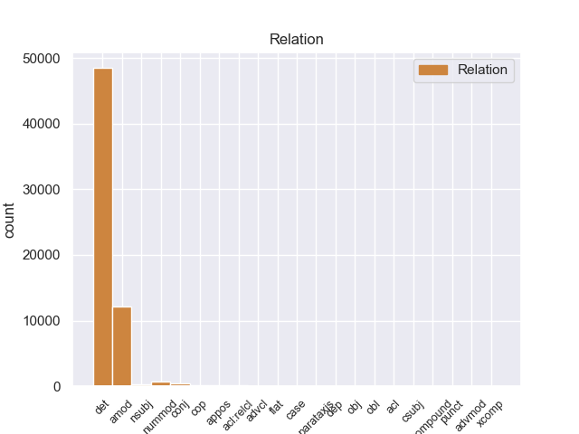
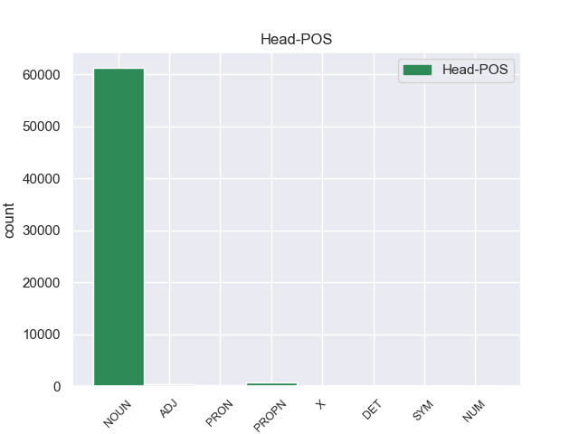
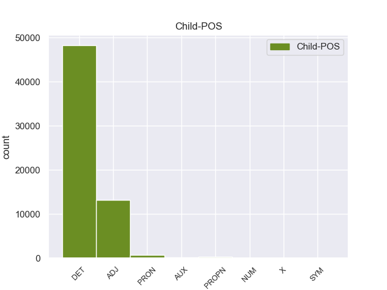

Distribution of features within this leaf



Agreement Rules sorted by frequency.
- When the dependent token is the determiner(det) of the head token, and the head token is NOUN and the dependent token is DET.
1 La _ _ _ _ 0 _ _ _
2 Isla _ _ _ _ 0 _ _ _
3 James _ _ _ _ 0 _ _ _
4 es _ _ _ _ 0 _ _ _
5 una _ _ _ _ 0 _ _ _
6 isla _ _ _ _ 0 _ _ _
7 de _ _ _ _ 0 _ _ _
8 el el DET _ Definite=Def|Gender=Masc|Number=Sing|PronType=Art 9 det _ _
9 archipiélago archipiélago NOUN _ Gender=Masc|Number=Sing 0 _ _ _
10 de _ _ _ _ 0 _ _ _
11 las _ _ _ _ 0 _ _ _
12 Islas _ _ _ _ 0 _ _ _
13 San _ _ _ _ 0 _ _ _
14 Juan _ _ _ _ 0 _ _ _
15 , _ _ _ _ 0 _ _ _
16 situadas _ _ _ _ 0 _ _ _
17 en _ _ _ _ 0 _ _ _
18 el _ _ _ _ 0 _ _ _
19 Estrecho _ _ _ _ 0 _ _ _
20 de _ _ _ _ 0 _ _ _
21 Georgia _ _ _ _ 0 _ _ _
22 . _ _ _ _ 0 _ _ _
1 La _ _ _ _ 0 _ _ _
2 hidrocefalia _ _ _ _ 0 _ _ _
3 comunicante _ _ _ _ 0 _ _ _
4 ocurre _ _ _ _ 0 _ _ _
5 cuando _ _ _ _ 0 _ _ _
6 el _ _ _ _ 0 _ _ _
7 flujo _ _ _ _ 0 _ _ _
8 de _ _ _ _ 0 _ _ _
9 el _ _ _ _ 0 _ _ _
10 líquido líquido NOUN _ Gender=Masc|Number=Sing 0 _ _ _
11 cefaloraquídeo cefaloraquídeo ADJ _ Gender=Masc|Number=Sing 10 amod _ _
12 se _ _ _ _ 0 _ _ _
13 ve _ _ _ _ 0 _ _ _
14 bloqueado _ _ _ _ 0 _ _ _
15 después _ _ _ _ 0 _ _ _
16 de _ _ _ _ 0 _ _ _
17 salir _ _ _ _ 0 _ _ _
18 de _ _ _ _ 0 _ _ _
19 los _ _ _ _ 0 _ _ _
20 ventrículos _ _ _ _ 0 _ _ _
21 a _ _ _ _ 0 _ _ _
22 el _ _ _ _ 0 _ _ _
23 espacio _ _ _ _ 0 _ _ _
24 subaracnoideo _ _ _ _ 0 _ _ _
25 . _ _ _ _ 0 _ _ _
1 Su _ _ _ _ 0 _ _ _
2 debut _ _ _ _ 0 _ _ _
3 en _ _ _ _ 0 _ _ _
4 la _ _ _ _ 0 _ _ _
5 Champions _ _ _ _ 0 _ _ _
6 League _ _ _ _ 0 _ _ _
7 se _ _ _ _ 0 _ _ _
8 produjo _ _ _ _ 0 _ _ _
9 en _ _ _ _ 0 _ _ _
10 un _ _ _ _ 0 _ _ _
11 partido _ _ _ _ 0 _ _ _
12 frente _ _ _ _ 0 _ _ _
13 a _ _ _ _ 0 _ _ _
14 el _ _ _ _ 0 _ _ _
15 FC _ _ _ _ 0 _ _ _
16 Oporto _ _ _ _ 0 _ _ _
17 , _ _ _ _ 0 _ _ _
18 donde _ _ _ _ 0 _ _ _
19 contribuyó _ _ _ _ 0 _ _ _
20 asistiendo _ _ _ _ 0 _ _ _
21 a _ _ _ _ 0 _ _ _
22 Santiago _ _ _ _ 0 _ _ _
23 Solari _ _ _ _ 0 _ _ _
24 con _ _ _ _ 0 _ _ _
25 un _ _ _ _ 0 _ _ _
26 centro _ _ _ _ 0 _ _ _
27 en _ _ _ _ 0 _ _ _
28 los _ _ _ _ 0 _ _ _
29 primeros primero ADJ _ Gender=Masc|Number=Plur|NumType=Ord 30 nummod _ _
30 minutos minuto NOUN _ Gender=Masc|Number=Plur 0 _ _ _
31 para _ _ _ _ 0 _ _ _
32 que _ _ _ _ 0 _ _ _
33 anotase _ _ _ _ 0 _ _ _
34 un _ _ _ _ 0 _ _ _
35 gol _ _ _ _ 0 _ _ _
36 . _ _ _ _ 0 _ _ _
1 La _ _ _ _ 0 _ _ _
2 Isla _ _ _ _ 0 _ _ _
3 James _ _ _ _ 0 _ _ _
4 es _ _ _ _ 0 _ _ _
5 una _ _ _ _ 0 _ _ _
6 isla _ _ _ _ 0 _ _ _
7 de _ _ _ _ 0 _ _ _
8 el _ _ _ _ 0 _ _ _
9 archipiélago _ _ _ _ 0 _ _ _
10 de _ _ _ _ 0 _ _ _
11 las _ _ _ _ 0 _ _ _
12 Islas _ _ _ _ 0 _ _ _
13 San _ _ _ _ 0 _ _ _
14 Juan _ _ _ _ 0 _ _ _
15 , _ _ _ _ 0 _ _ _
16 situadas _ _ _ _ 0 _ _ _
17 en _ _ _ _ 0 _ _ _
18 el el DET _ Definite=Def|Gender=Masc|Number=Sing|PronType=Art 19 det _ _
19 Estrecho estrecho PROPN _ Gender=Masc|Number=Sing 0 _ _ _
20 de _ _ _ _ 0 _ _ _
21 Georgia _ _ _ _ 0 _ _ _
22 . _ _ _ _ 0 _ _ _
1 Admitía _ _ _ _ 0 _ _ _
2 que _ _ _ _ 0 _ _ _
3 a _ _ _ _ 0 _ _ _
4 lo él PRON _ Case=Acc|Gender=Masc|Number=Sing|Person=3|PrepCase=Npr|PronType=Prs 5 det _ _
5 largo largo NOUN _ Gender=Masc|Number=Sing 0 _ _ _
6 de _ _ _ _ 0 _ _ _
7 su _ _ _ _ 0 _ _ _
8 vida _ _ _ _ 0 _ _ _
9 había _ _ _ _ 0 _ _ _
10 luchado _ _ _ _ 0 _ _ _
11 contra _ _ _ _ 0 _ _ _
12 la _ _ _ _ 0 _ _ _
13 anorexia _ _ _ _ 0 _ _ _
14 nerviosa _ _ _ _ 0 _ _ _
15 , _ _ _ _ 0 _ _ _
16 la _ _ _ _ 0 _ _ _
17 depresión _ _ _ _ 0 _ _ _
18 y _ _ _ _ 0 _ _ _
19 el _ _ _ _ 0 _ _ _
20 alcoholismo _ _ _ _ 0 _ _ _
21 . _ _ _ _ 0 _ _ _
1 De _ _ _ _ 0 _ _ _
2 los _ _ _ _ 0 _ _ _
3 1500 _ _ _ _ 0 _ _ _
4 habitantes _ _ _ _ 0 _ _ _
5 , _ _ _ _ 0 _ _ _
6 el _ _ _ _ 0 _ _ _
7 municipio _ _ _ _ 0 _ _ _
8 de _ _ _ _ 0 _ _ _
9 Lincoln _ _ _ _ 0 _ _ _
10 estaba _ _ _ _ 0 _ _ _
11 compuesto _ _ _ _ 0 _ _ _
12 por _ _ _ _ 0 _ _ _
13 el _ _ _ _ 0 _ _ _
14 97.6 _ _ _ _ 0 _ _ _
15 % _ _ _ _ 0 _ _ _
16 blancos _ _ _ _ 0 _ _ _
17 , _ _ _ _ 0 _ _ _
18 el _ _ _ _ 0 _ _ _
19 0.53 _ _ _ _ 0 _ _ _
20 % _ _ _ _ 0 _ _ _
21 eran _ _ _ _ 0 _ _ _
22 afroamericanos afroamericano ADJ _ Gender=Masc|Number=Plur 0 _ _ _
23 , _ _ _ _ 0 _ _ _
24 el _ _ _ _ 0 _ _ _
25 0.33 _ _ _ _ 0 _ _ _
26 % _ _ _ _ 0 _ _ _
27 eran _ _ _ _ 0 _ _ _
28 amerindios _ _ _ _ 0 _ _ _
29 , _ _ _ _ 0 _ _ _
30 el _ _ _ _ 0 _ _ _
31 0.27 _ _ _ _ 0 _ _ _
32 % _ _ _ _ 0 _ _ _
33 eran _ _ _ _ 0 _ _ _
34 asiáticos _ _ _ _ 0 _ _ _
35 , _ _ _ _ 0 _ _ _
36 el _ _ _ _ 0 _ _ _
37 0 _ _ _ _ 0 _ _ _
38 % _ _ _ _ 0 _ _ _
39 eran _ _ _ _ 0 _ _ _
40 isleños isleño ADJ _ Gender=Masc|Number=Plur 22 conj _ _
41 de _ _ _ _ 0 _ _ _
42 el _ _ _ _ 0 _ _ _
43 Pacífico _ _ _ _ 0 _ _ _
44 , _ _ _ _ 0 _ _ _
45 el _ _ _ _ 0 _ _ _
46 0.07 _ _ _ _ 0 _ _ _
47 % _ _ _ _ 0 _ _ _
48 eran _ _ _ _ 0 _ _ _
49 de _ _ _ _ 0 _ _ _
50 otras _ _ _ _ 0 _ _ _
51 razas _ _ _ _ 0 _ _ _
52 y _ _ _ _ 0 _ _ _
53 el _ _ _ _ 0 _ _ _
54 1.2 _ _ _ _ 0 _ _ _
55 % _ _ _ _ 0 _ _ _
56 pertenecían _ _ _ _ 0 _ _ _
57 a _ _ _ _ 0 _ _ _
58 dos _ _ _ _ 0 _ _ _
59 o _ _ _ _ 0 _ _ _
60 más _ _ _ _ 0 _ _ _
61 razas _ _ _ _ 0 _ _ _
62 . _ _ _ _ 0 _ _ _
1 Pero _ _ _ _ 0 _ _ _
2 , _ _ _ _ 0 _ _ _
3 además _ _ _ _ 0 _ _ _
4 de _ _ _ _ 0 _ _ _
5 todos todo DET _ Gender=Masc|Number=Plur|PronType=Tot 6 det _ _
6 estos este PRON _ Gender=Masc|Number=Plur|PronType=Dem 0 _ _ _
7 , _ _ _ _ 0 _ _ _
8 hay _ _ _ _ 0 _ _ _
9 algunos _ _ _ _ 0 _ _ _
10 otros _ _ _ _ 0 _ _ _
11 ingredientes _ _ _ _ 0 _ _ _
12 que _ _ _ _ 0 _ _ _
13 tambien _ _ _ _ 0 _ _ _
14 son _ _ _ _ 0 _ _ _
15 necesarios _ _ _ _ 0 _ _ _
16 y _ _ _ _ 0 _ _ _
17 que _ _ _ _ 0 _ _ _
18 son _ _ _ _ 0 _ _ _
19 los _ _ _ _ 0 _ _ _
20 recursos _ _ _ _ 0 _ _ _
21 técnicos _ _ _ _ 0 _ _ _
22 y _ _ _ _ 0 _ _ _
23 monetarios _ _ _ _ 0 _ _ _
24 . _ _ _ _ 0 _ _ _
1 Este este PRON _ Gender=Masc|Number=Sing|PronType=Dem 4 nsubj _ _
2 fue _ _ _ _ 0 _ _ _
3 el _ _ _ _ 0 _ _ _
4 episodio episodio NOUN _ Gender=Masc|Number=Sing 0 _ _ _
5 número _ _ _ _ 0 _ _ _
6 100 _ _ _ _ 0 _ _ _
7 de _ _ _ _ 0 _ _ _
8 la _ _ _ _ 0 _ _ _
9 serie _ _ _ _ 0 _ _ _
10 , _ _ _ _ 0 _ _ _
11 que _ _ _ _ 0 _ _ _
12 fue _ _ _ _ 0 _ _ _
13 estrenado _ _ _ _ 0 _ _ _
14 el _ _ _ _ 0 _ _ _
15 9 _ _ _ _ 0 _ _ _
16 de _ _ _ _ 0 _ _ _
17 junio _ _ _ _ 0 _ _ _
18 de _ _ _ _ 0 _ _ _
19 2012 _ _ _ _ 0 _ _ _
20 , _ _ _ _ 0 _ _ _
21 en _ _ _ _ 0 _ _ _
22 Latinoamérica _ _ _ _ 0 _ _ _
23 y _ _ _ _ 0 _ _ _
24 España _ _ _ _ 0 _ _ _
25 aún _ _ _ _ 0 _ _ _
26 no _ _ _ _ 0 _ _ _
27 ha _ _ _ _ 0 _ _ _
28 sido _ _ _ _ 0 _ _ _
29 confirmado _ _ _ _ 0 _ _ _
30 el _ _ _ _ 0 _ _ _
31 estreno _ _ _ _ 0 _ _ _
32 . _ _ _ _ 0 _ _ _
1 Estas _ _ _ _ 0 _ _ _
2 parameras _ _ _ _ 0 _ _ _
3 se _ _ _ _ 0 _ _ _
4 inician _ _ _ _ 0 _ _ _
5 en _ _ _ _ 0 _ _ _
6 la _ _ _ _ 0 _ _ _
7 zona _ _ _ _ 0 _ _ _
8 de _ _ _ _ 0 _ _ _
9 contacto _ _ _ _ 0 _ _ _
10 de _ _ _ _ 0 _ _ _
11 la _ _ _ _ 0 _ _ _
12 Cordillera _ _ _ _ 0 _ _ _
13 Central _ _ _ _ 0 _ _ _
14 con _ _ _ _ 0 _ _ _
15 la _ _ _ _ 0 _ _ _
16 Ibérica _ _ _ _ 0 _ _ _
17 en _ _ _ _ 0 _ _ _
18 la _ _ _ _ 0 _ _ _
19 Sierra _ _ _ _ 0 _ _ _
20 de _ _ _ _ 0 _ _ _
21 Pela _ _ _ _ 0 _ _ _
22 , _ _ _ _ 0 _ _ _
23 prolongándo _ _ _ _ 0 _ _ _
24 se _ _ _ _ 0 _ _ _
25 hacia _ _ _ _ 0 _ _ _
26 el _ _ _ _ 0 _ _ _
27 Este _ _ _ _ 0 _ _ _
28 en _ _ _ _ 0 _ _ _
29 amplias _ _ _ _ 0 _ _ _
30 extensiones _ _ _ _ 0 _ _ _
31 de _ _ _ _ 0 _ _ _
32 topografía _ _ _ _ 0 _ _ _
33 arrasada _ _ _ _ 0 _ _ _
34 y _ _ _ _ 0 _ _ _
35 plana _ _ _ _ 0 _ _ _
36 , _ _ _ _ 0 _ _ _
37 con _ _ _ _ 0 _ _ _
38 áreas _ _ _ _ 0 _ _ _
39 de _ _ _ _ 0 _ _ _
40 pliegues _ _ _ _ 0 _ _ _
41 suaves _ _ _ _ 0 _ _ _
42 cortados _ _ _ _ 0 _ _ _
43 por _ _ _ _ 0 _ _ _
44 lapenillanura _ _ _ _ 0 _ _ _
45 fundamental _ _ _ _ 0 _ _ _
46 de _ _ _ _ 0 _ _ _
47 la _ _ _ _ 0 _ _ _
48 Meseta _ _ _ _ 0 _ _ _
49 , _ _ _ _ 0 _ _ _
50 por _ _ _ _ 0 _ _ _
51 lo _ _ _ _ 0 _ _ _
52 que _ _ _ _ 0 _ _ _
53 sus _ _ _ _ 0 _ _ _
54 relieves _ _ _ _ 0 _ _ _
55 son _ _ _ _ 0 _ _ _
56 en _ _ _ _ 0 _ _ _
57 buena _ _ _ _ 0 _ _ _
58 parte _ _ _ _ 0 _ _ _
59 una _ _ _ _ 0 _ _ _
60 superficie _ _ _ _ 0 _ _ _
61 de _ _ _ _ 0 _ _ _
62 erosión erosión NOUN _ Gender=Fem|Number=Sing 0 _ _ _
63 , _ _ _ _ 0 _ _ _
64 horizontal _ _ _ _ 0 _ _ _
65 o _ _ _ _ 0 _ _ _
66 ligeramente _ _ _ _ 0 _ _ _
67 deformada deformado ADJ _ Gender=Fem|Number=Sing|VerbForm=Part 62 conj _ SpaceAfter=No
68 , _ _ _ _ 0 _ _ _
69 donde _ _ _ _ 0 _ _ _
70 los _ _ _ _ 0 _ _ _
71 niveles _ _ _ _ 0 _ _ _
72 aflorantes _ _ _ _ 0 _ _ _
73 corresponden _ _ _ _ 0 _ _ _
74 a _ _ _ _ 0 _ _ _
75 materiales _ _ _ _ 0 _ _ _
76 calcáreos _ _ _ _ 0 _ _ _
77 que _ _ _ _ 0 _ _ _
78 se _ _ _ _ 0 _ _ _
79 depositaron _ _ _ _ 0 _ _ _
80 durante _ _ _ _ 0 _ _ _
81 el _ _ _ _ 0 _ _ _
82 Triásico _ _ _ _ 0 _ _ _
83 , _ _ _ _ 0 _ _ _
84 desarrollándo _ _ _ _ 0 _ _ _
85 se _ _ _ _ 0 _ _ _
86 un _ _ _ _ 0 _ _ _
87 gran _ _ _ _ 0 _ _ _
88 número _ _ _ _ 0 _ _ _
89 de _ _ _ _ 0 _ _ _
90 formas _ _ _ _ 0 _ _ _
91 kársticas _ _ _ _ 0 _ _ _
92 ( _ _ _ _ 0 _ _ _
93 dolinas _ _ _ _ 0 _ _ _
94 , _ _ _ _ 0 _ _ _
95 cuevas _ _ _ _ 0 _ _ _
96 , _ _ _ _ 0 _ _ _
97 lapiaces _ _ _ _ 0 _ _ _
98 ) _ _ _ _ 0 _ _ _
99 , _ _ _ _ 0 _ _ _
100 y _ _ _ _ 0 _ _ _
101 con _ _ _ _ 0 _ _ _
102 una _ _ _ _ 0 _ _ _
103 altitud _ _ _ _ 0 _ _ _
104 media _ _ _ _ 0 _ _ _
105 que _ _ _ _ 0 _ _ _
106 se _ _ _ _ 0 _ _ _
107 sitúa _ _ _ _ 0 _ _ _
108 en _ _ _ _ 0 _ _ _
109 torno _ _ _ _ 0 _ _ _
110 a _ _ _ _ 0 _ _ _
111 los _ _ _ _ 0 _ _ _
112 1.000 _ _ _ _ 0 _ _ _
113 - _ _ _ _ 0 _ _ _
114 1.200m _ _ _ _ 0 _ _ _
115 . _ _ _ _ 0 _ _ _
1 Los _ _ _ _ 0 _ _ _
2 lápices _ _ _ _ 0 _ _ _
3 acuosos _ _ _ _ 0 _ _ _
4 pueden _ _ _ _ 0 _ _ _
5 ser _ _ _ _ 0 _ _ _
6 utilizados _ _ _ _ 0 _ _ _
7 en _ _ _ _ 0 _ _ _
8 seco _ _ _ _ 0 _ _ _
9 , _ _ _ _ 0 _ _ _
10 pero _ _ _ _ 0 _ _ _
11 a _ _ _ _ 0 _ _ _
12 el el DET _ Definite=Def|Gender=Masc|Number=Sing|PronType=Art 14 det _ _
13 estar _ _ _ _ 0 _ _ _
14 húmedos húmedo ADJ _ Gender=Masc|Number=Plur 0 _ _ _
15 adquieren _ _ _ _ 0 _ _ _
16 un _ _ _ _ 0 _ _ _
17 tono _ _ _ _ 0 _ _ _
18 especial _ _ _ _ 0 _ _ _
19 . _ _ _ _ 0 _ _ _
1 El _ _ _ _ 0 _ _ _
2 12 _ _ _ _ 0 _ _ _
3 de _ _ _ _ 0 _ _ _
4 noviembre _ _ _ _ 0 _ _ _
5 el _ _ _ _ 0 _ _ _
6 Instituto _ _ _ _ 0 _ _ _
7 Nacional _ _ _ _ 0 _ _ _
8 de _ _ _ _ 0 _ _ _
9 Migración _ _ _ _ 0 _ _ _
10 detuvo _ _ _ _ 0 _ _ _
11 a _ _ _ _ 0 _ _ _
12 164 _ _ _ _ 0 _ _ _
13 indocumentados _ _ _ _ 0 _ _ _
14 centroamericanos _ _ _ _ 0 _ _ _
15 ( _ _ _ _ 0 _ _ _
16 159 _ _ _ _ 0 _ _ _
17 guatemaltecos _ _ _ _ 0 _ _ _
18 y _ _ _ _ 0 _ _ _
19 5 _ _ _ _ 0 _ _ _
20 hondureños _ _ _ _ 0 _ _ _
21 ) _ _ _ _ 0 _ _ _
22 a _ _ _ _ 0 _ _ _
23 bordo _ _ _ _ 0 _ _ _
24 de _ _ _ _ 0 _ _ _
25 un _ _ _ _ 0 _ _ _
26 tráiler _ _ _ _ 0 _ _ _
27 procedente _ _ _ _ 0 _ _ _
28 de _ _ _ _ 0 _ _ _
29 Comitán _ _ _ _ 0 _ _ _
30 de _ _ _ _ 0 _ _ _
31 Domínguez _ _ _ _ 0 _ _ _
32 , _ _ _ _ 0 _ _ _
33 que _ _ _ _ 0 _ _ _
34 transportaba _ _ _ _ 0 _ _ _
35 500 _ _ _ _ 0 _ _ _
36 cajas _ _ _ _ 0 _ _ _
37 de _ _ _ _ 0 _ _ _
38 sopa _ _ _ _ 0 _ _ _
39 instantánea _ _ _ _ 0 _ _ _
40 y _ _ _ _ 0 _ _ _
41 que _ _ _ _ 0 _ _ _
42 circulaba _ _ _ _ 0 _ _ _
43 con _ _ _ _ 0 _ _ _
44 la _ _ _ _ 0 _ _ _
45 leyenda leyenda NOUN _ Gender=Fem|Number=Sing 0 _ _ _
46 : _ _ _ _ 0 _ _ _
47 " _ _ _ _ 0 _ _ _
48 Ayuda ayuda PROPN _ Gender=Fem|Number=Sing 45 appos _ _
49 para _ _ _ _ 0 _ _ _
50 nuestros _ _ _ _ 0 _ _ _
51 hermanos _ _ _ _ 0 _ _ _
52 de _ _ _ _ 0 _ _ _
53 Tabasco _ _ _ _ 0 _ _ _
54 " _ _ _ _ 0 _ _ _
55 . _ _ _ _ 0 _ _ _
1 La _ _ _ _ 0 _ _ _
2 Isla isla PROPN _ Gender=Fem|Number=Sing 6 nsubj _ _
3 James _ _ _ _ 0 _ _ _
4 es _ _ _ _ 0 _ _ _
5 una _ _ _ _ 0 _ _ _
6 isla isla NOUN _ Gender=Fem|Number=Sing 0 _ _ _
7 de _ _ _ _ 0 _ _ _
8 el _ _ _ _ 0 _ _ _
9 archipiélago _ _ _ _ 0 _ _ _
10 de _ _ _ _ 0 _ _ _
11 las _ _ _ _ 0 _ _ _
12 Islas _ _ _ _ 0 _ _ _
13 San _ _ _ _ 0 _ _ _
14 Juan _ _ _ _ 0 _ _ _
15 , _ _ _ _ 0 _ _ _
16 situadas _ _ _ _ 0 _ _ _
17 en _ _ _ _ 0 _ _ _
18 el _ _ _ _ 0 _ _ _
19 Estrecho _ _ _ _ 0 _ _ _
20 de _ _ _ _ 0 _ _ _
21 Georgia _ _ _ _ 0 _ _ _
22 . _ _ _ _ 0 _ _ _
1 Aunque _ _ _ _ 0 _ _ _
2 su _ _ _ _ 0 _ _ _
3 masa _ _ _ _ 0 _ _ _
4 es _ _ _ _ 0 _ _ _
5 aproximadamente _ _ _ _ 0 _ _ _
6 un uno NUM _ Gender=Masc|Number=Sing|NumType=Card 7 nummod _ _
7 tercio tercio NOUN _ Gender=Masc|Number=Sing 0 _ _ _
8 de _ _ _ _ 0 _ _ _
9 la _ _ _ _ 0 _ _ _
10 de _ _ _ _ 0 _ _ _
11 el _ _ _ _ 0 _ _ _
12 Sol _ _ _ _ 0 _ _ _
13 , _ _ _ _ 0 _ _ _
14 su _ _ _ _ 0 _ _ _
15 radio _ _ _ _ 0 _ _ _
16 equivale _ _ _ _ 0 _ _ _
17 a _ _ _ _ 0 _ _ _
18 2,32 _ _ _ _ 0 _ _ _
19 veces _ _ _ _ 0 _ _ _
20 el _ _ _ _ 0 _ _ _
21 radio _ _ _ _ 0 _ _ _
22 solar _ _ _ _ 0 _ _ _
23 , _ _ _ _ 0 _ _ _
24 estando _ _ _ _ 0 _ _ _
25 situada _ _ _ _ 0 _ _ _
26 en _ _ _ _ 0 _ _ _
27 el _ _ _ _ 0 _ _ _
28 diagrama _ _ _ _ 0 _ _ _
29 de _ _ _ _ 0 _ _ _
30 Hertzsprung _ _ _ _ 0 _ _ _
31 - _ _ _ _ 0 _ _ _
32 Russell _ _ _ _ 0 _ _ _
33 por _ _ _ _ 0 _ _ _
34 encima _ _ _ _ 0 _ _ _
35 de _ _ _ _ 0 _ _ _
36 la _ _ _ _ 0 _ _ _
37 secuencia _ _ _ _ 0 _ _ _
38 principal _ _ _ _ 0 _ _ _
39 . _ _ _ _ 0 _ _ _
1 Asimismo _ _ _ _ 0 _ _ _
2 , _ _ _ _ 0 _ _ _
3 Ryanair _ _ _ _ 0 _ _ _
4 ha _ _ _ _ 0 _ _ _
5 desviado _ _ _ _ 0 _ _ _
6 varios _ _ _ _ 0 _ _ _
7 de _ _ _ _ 0 _ _ _
8 sus _ _ _ _ 0 _ _ _
9 vuelos _ _ _ _ 0 _ _ _
10 con _ _ _ _ 0 _ _ _
11 destino _ _ _ _ 0 _ _ _
12 a _ _ _ _ 0 _ _ _
13 Dublín _ _ _ _ 0 _ _ _
14 , _ _ _ _ 0 _ _ _
15 entre _ _ _ _ 0 _ _ _
16 los _ _ _ _ 0 _ _ _
17 que _ _ _ _ 0 _ _ _
18 se _ _ _ _ 0 _ _ _
19 encuentran _ _ _ _ 0 _ _ _
20 un _ _ _ _ 0 _ _ _
21 vuelo vuelo NOUN _ Gender=Masc|Number=Sing 0 _ _ _
22 de _ _ _ _ 0 _ _ _
23 Madrid _ _ _ _ 0 _ _ _
24 y _ _ _ _ 0 _ _ _
25 otro otro PRON _ Gender=Masc|Number=Sing|PronType=Ind 21 conj _ _
26 de _ _ _ _ 0 _ _ _
27 Barcelona _ _ _ _ 0 _ _ _
28 , _ _ _ _ 0 _ _ _
29 hasta _ _ _ _ 0 _ _ _
30 los _ _ _ _ 0 _ _ _
31 aeropuertos _ _ _ _ 0 _ _ _
32 de _ _ _ _ 0 _ _ _
33 Shannon _ _ _ _ 0 _ _ _
34 y _ _ _ _ 0 _ _ _
35 Cork _ _ _ _ 0 _ _ _
36 . _ _ _ _ 0 _ _ _
1 Pero _ _ _ _ 0 _ _ _
2 , _ _ _ _ 0 _ _ _
3 además _ _ _ _ 0 _ _ _
4 de _ _ _ _ 0 _ _ _
5 todos _ _ _ _ 0 _ _ _
6 estos _ _ _ _ 0 _ _ _
7 , _ _ _ _ 0 _ _ _
8 hay _ _ _ _ 0 _ _ _
9 algunos _ _ _ _ 0 _ _ _
10 otros _ _ _ _ 0 _ _ _
11 ingredientes ingrediente NOUN _ Gender=Masc|Number=Plur 0 _ _ _
12 que _ _ _ _ 0 _ _ _
13 tambien _ _ _ _ 0 _ _ _
14 son _ _ _ _ 0 _ _ _
15 necesarios necesario ADJ _ Gender=Masc|Number=Plur 11 acl:relcl _ _
16 y _ _ _ _ 0 _ _ _
17 que _ _ _ _ 0 _ _ _
18 son _ _ _ _ 0 _ _ _
19 los _ _ _ _ 0 _ _ _
20 recursos _ _ _ _ 0 _ _ _
21 técnicos _ _ _ _ 0 _ _ _
22 y _ _ _ _ 0 _ _ _
23 monetarios _ _ _ _ 0 _ _ _
24 . _ _ _ _ 0 _ _ _
1 Por _ _ _ _ 0 _ _ _
2 esa _ _ _ _ 0 _ _ _
3 razón _ _ _ _ 0 _ _ _
4 , _ _ _ _ 0 _ _ _
5 en _ _ _ _ 0 _ _ _
6 1949 _ _ _ _ 0 _ _ _
7 , _ _ _ _ 0 _ _ _
8 junto _ _ _ _ 0 _ _ _
9 con _ _ _ _ 0 _ _ _
10 otras _ _ _ _ 0 _ _ _
11 mujeres _ _ _ _ 0 _ _ _
12 que _ _ _ _ 0 _ _ _
13 venían _ _ _ _ 0 _ _ _
14 actuando _ _ _ _ 0 _ _ _
15 políticamente _ _ _ _ 0 _ _ _
16 desde _ _ _ _ 0 _ _ _
17 1945 _ _ _ _ 0 _ _ _
18 , _ _ _ _ 0 _ _ _
19 decidieron _ _ _ _ 0 _ _ _
20 fundar _ _ _ _ 0 _ _ _
21 el _ _ _ _ 0 _ _ _
22 Partido partido PROPN _ Gender=Masc|Number=Sing 0 _ _ _
23 Peronista _ _ _ _ 0 _ _ _
24 Femenino femenino PROPN _ Gender=Masc|Number=Sing 22 amod _ SpaceAfter=No
25 . _ _ _ _ 0 _ _ _
1 A _ _ _ _ 0 _ _ _
2 pesar _ _ _ _ 0 _ _ _
3 de _ _ _ _ 0 _ _ _
4 la _ _ _ _ 0 _ _ _
5 cobertura _ _ _ _ 0 _ _ _
6 de _ _ _ _ 0 _ _ _
7 prensa _ _ _ _ 0 _ _ _
8 en _ _ _ _ 0 _ _ _
9 Engineering _ _ _ _ 0 _ _ _
10 The _ _ _ _ 0 _ _ _
11 Impossible _ _ _ _ 0 _ _ _
12 de _ _ _ _ 0 _ _ _
13 Discovery _ _ _ _ 0 _ _ _
14 Channel _ _ _ _ 0 _ _ _
15 y _ _ _ _ 0 _ _ _
16 otros _ _ _ _ 0 _ _ _
17 reportajes _ _ _ _ 0 _ _ _
18 , _ _ _ _ 0 _ _ _
19 el _ _ _ _ 0 _ _ _
20 proyecto _ _ _ _ 0 _ _ _
21 ha _ _ _ _ 0 _ _ _
22 sido ser AUX _ Gender=Masc|Number=Sing|Tense=Past|VerbForm=Part 23 cop _ _
23 testigo testigo NOUN _ Gender=Masc|Number=Sing 0 _ _ _
24 de _ _ _ _ 0 _ _ _
25 algunos _ _ _ _ 0 _ _ _
26 acontecimientos _ _ _ _ 0 _ _ _
27 recientes _ _ _ _ 0 _ _ _
28 . _ _ _ _ 0 _ _ _
1 El _ _ _ _ 0 _ _ _
2 INI _ _ _ _ 0 _ _ _
3 cumplía _ _ _ _ 0 _ _ _
4 así _ _ _ _ 0 _ _ _
5 con _ _ _ _ 0 _ _ _
6 una _ _ _ _ 0 _ _ _
7 doble _ _ _ _ 0 _ _ _
8 función función NOUN _ Gender=Fem|Number=Sing 0 _ _ _
9 : _ _ _ _ 0 _ _ _
10 la él PRON _ Case=Acc|Gender=Fem|Number=Sing|Person=3|PrepCase=Npr|PronType=Prs 8 appos _ _
11 de _ _ _ _ 0 _ _ _
12 llevar _ _ _ _ 0 _ _ _
13 el _ _ _ _ 0 _ _ _
14 desarrollo _ _ _ _ 0 _ _ _
15 a _ _ _ _ 0 _ _ _
16 las _ _ _ _ 0 _ _ _
17 zonas _ _ _ _ 0 _ _ _
18 rurales _ _ _ _ 0 _ _ _
19 y _ _ _ _ 0 _ _ _
20 la _ _ _ _ 0 _ _ _
21 de _ _ _ _ 0 _ _ _
22 recuperar _ _ _ _ 0 _ _ _
23 a _ _ _ _ 0 _ _ _
24 las _ _ _ _ 0 _ _ _
25 culturas _ _ _ _ 0 _ _ _
26 indígenas _ _ _ _ 0 _ _ _
27 aquellas _ _ _ _ 0 _ _ _
28 características _ _ _ _ 0 _ _ _
29 que _ _ _ _ 0 _ _ _
30 pudieran _ _ _ _ 0 _ _ _
31 ser _ _ _ _ 0 _ _ _
32 integradas _ _ _ _ 0 _ _ _
33 a _ _ _ _ 0 _ _ _
34 el _ _ _ _ 0 _ _ _
35 patrimonio _ _ _ _ 0 _ _ _
36 cultural _ _ _ _ 0 _ _ _
37 de _ _ _ _ 0 _ _ _
38 la _ _ _ _ 0 _ _ _
39 nación _ _ _ _ 0 _ _ _
40 . _ _ _ _ 0 _ _ _
1 Gema _ _ _ _ 0 _ _ _
2 Amor _ _ _ _ 0 _ _ _
3 , _ _ _ _ 0 _ _ _
4 después _ _ _ _ 0 _ _ _
5 de _ _ _ _ 0 _ _ _
6 varios _ _ _ _ 0 _ _ _
7 intentos _ _ _ _ 0 _ _ _
8 frustrados _ _ _ _ 0 _ _ _
9 de _ _ _ _ 0 _ _ _
10 apartar _ _ _ _ 0 _ _ _
11 a _ _ _ _ 0 _ _ _
12 Manuel _ _ _ _ 0 _ _ _
13 Pérez _ _ _ _ 0 _ _ _
14 Fenoll _ _ _ _ 0 _ _ _
15 de _ _ _ _ 0 _ _ _
16 la _ _ _ _ 0 _ _ _
17 candidatura _ _ _ _ 0 _ _ _
18 a _ _ _ _ 0 _ _ _
19 la _ _ _ _ 0 _ _ _
20 alcaldía _ _ _ _ 0 _ _ _
21 de _ _ _ _ 0 _ _ _
22 Benidorm _ _ _ _ 0 _ _ _
23 y _ _ _ _ 0 _ _ _
24 haber _ _ _ _ 0 _ _ _
25 abandonado _ _ _ _ 0 _ _ _
26 el _ _ _ _ 0 _ _ _
27 PPCV _ _ _ _ 0 _ _ _
28 , _ _ _ _ 0 _ _ _
29 presento _ _ _ _ 0 _ _ _
30 una _ _ _ _ 0 _ _ _
31 lista _ _ _ _ 0 _ _ _
32 electoral _ _ _ _ 0 _ _ _
33 encabezada _ _ _ _ 0 _ _ _
34 por _ _ _ _ 0 _ _ _
35 ella él PRON _ Case=Acc,Nom|Gender=Fem|Number=Sing|Person=3|PronType=Prs 0 _ _ _
36 misma mismo ADJ _ Gender=Fem|Number=Sing 35 amod _ _
37 bajo _ _ _ _ 0 _ _ _
38 la _ _ _ _ 0 _ _ _
39 marca _ _ _ _ 0 _ _ _
40 de _ _ _ _ 0 _ _ _
41 Centro _ _ _ _ 0 _ _ _
42 Democrático _ _ _ _ 0 _ _ _
43 Liberal _ _ _ _ 0 _ _ _
44 ( _ _ _ _ 0 _ _ _
45 CDL _ _ _ _ 0 _ _ _
46 ) _ _ _ _ 0 _ _ _
47 en _ _ _ _ 0 _ _ _
48 las _ _ _ _ 0 _ _ _
49 elecciones _ _ _ _ 0 _ _ _
50 locales _ _ _ _ 0 _ _ _
51 de _ _ _ _ 0 _ _ _
52 2011 _ _ _ _ 0 _ _ _
53 . _ _ _ _ 0 _ _ _
1 Los _ _ _ _ 0 _ _ _
2 lápices _ _ _ _ 0 _ _ _
3 acuosos _ _ _ _ 0 _ _ _
4 pueden _ _ _ _ 0 _ _ _
5 ser _ _ _ _ 0 _ _ _
6 utilizados _ _ _ _ 0 _ _ _
7 en _ _ _ _ 0 _ _ _
8 seco _ _ _ _ 0 _ _ _
9 , _ _ _ _ 0 _ _ _
10 pero _ _ _ _ 0 _ _ _
11 a _ _ _ _ 0 _ _ _
12 el _ _ _ _ 0 _ _ _
13 estar estar AUX _ Gender=Masc|Number=Sing|VerbForm=Fin 14 cop _ _
14 húmedos húmedo ADJ _ Gender=Masc|Number=Plur 0 _ _ _
15 adquieren _ _ _ _ 0 _ _ _
16 un _ _ _ _ 0 _ _ _
17 tono _ _ _ _ 0 _ _ _
18 especial _ _ _ _ 0 _ _ _
19 . _ _ _ _ 0 _ _ _
1 Cada _ _ _ _ 0 _ _ _
2 uno _ _ _ _ 0 _ _ _
3 presentará _ _ _ _ 0 _ _ _
4 todas _ _ _ _ 0 _ _ _
5 las _ _ _ _ 0 _ _ _
6 obras _ _ _ _ 0 _ _ _
7 que _ _ _ _ 0 _ _ _
8 considere _ _ _ _ 0 _ _ _
9 oportunas _ _ _ _ 0 _ _ _
10 , _ _ _ _ 0 _ _ _
11 siendo _ _ _ _ 0 _ _ _
12 condición _ _ _ _ 0 _ _ _
13 imprescindible _ _ _ _ 0 _ _ _
14 que _ _ _ _ 0 _ _ _
15 éstas este PRON _ Gender=Fem|Number=Plur|PronType=Dem 17 nsubj _ _
16 sean _ _ _ _ 0 _ _ _
17 inéditas inédito ADJ _ Gender=Fem|Number=Plur 0 _ _ _
18 . _ _ _ _ 0 _ _ _
1 Antes _ _ _ _ 0 _ _ _
2 , _ _ _ _ 0 _ _ _
3 hablábamos _ _ _ _ 0 _ _ _
4 aquí _ _ _ _ 0 _ _ _
5 mismo mismo ADJ _ Gender=Masc|Number=Sing 0 _ _ _
6 de _ _ _ _ 0 _ _ _
7 debates _ _ _ _ 0 _ _ _
8 ciudadanos _ _ _ _ 0 _ _ _
9 , _ _ _ _ 0 _ _ _
10 de _ _ _ _ 0 _ _ _
11 debates _ _ _ _ 0 _ _ _
12 públicos público ADJ _ Gender=Masc|Number=Plur 5 amod _ SpaceAfter=No
13 . _ _ _ _ 0 _ _ _
1 Zoila zoila PROPN _ Gender=Fem|Number=Sing 0 _ _ _
2 Rosa rosa PROPN _ Gender=Fem|Number=Sing 1 flat _ _
3 Guevara _ _ _ _ 0 _ _ _
4 Muñoz _ _ _ _ 0 _ _ _
5 , _ _ _ _ 0 _ _ _
6 has _ _ _ _ 0 _ _ _
7 que _ _ _ _ 0 _ _ _
8 se _ _ _ _ 0 _ _ _
9 realice _ _ _ _ 0 _ _ _
10 el _ _ _ _ 0 _ _ _
11 proceso _ _ _ _ 0 _ _ _
12 eleccionario _ _ _ _ 0 _ _ _
13 . _ _ _ _ 0 _ _ _
1 En _ _ _ _ 0 _ _ _
2 la _ _ _ _ 0 _ _ _
3 comarca _ _ _ _ 0 _ _ _
4 de _ _ _ _ 0 _ _ _
5 La _ _ _ _ 0 _ _ _
6 Valdivia _ _ _ _ 0 _ _ _
7 , _ _ _ _ 0 _ _ _
8 junto _ _ _ _ 0 _ _ _
9 a _ _ _ _ 0 _ _ _
10 el _ _ _ _ 0 _ _ _
11 embalse _ _ _ _ 0 _ _ _
12 de _ _ _ _ 0 _ _ _
13 Aguilar _ _ _ _ 0 _ _ _
14 , _ _ _ _ 0 _ _ _
15 2 _ _ _ _ 0 _ _ _
16 km _ _ _ _ 0 _ _ _
17 a _ _ _ _ 0 _ _ _
18 el el DET _ Definite=Def|Gender=Masc|Number=Sing|PronType=Art 19 det _ _
19 al al X _ Gender=Masc|Number=Sing 0 _ _ _
20 oeste _ _ _ _ 0 _ _ _
21 de _ _ _ _ 0 _ _ _
22 Corvoeste _ _ _ _ 0 _ _ _
23 de _ _ _ _ 0 _ _ _
24 Matamorisca _ _ _ _ 0 _ _ _
25 y _ _ _ _ 0 _ _ _
26 3 _ _ _ _ 0 _ _ _
27 a _ _ _ _ 0 _ _ _
28 el _ _ _ _ 0 _ _ _
29 oeste _ _ _ _ 0 _ _ _
30 de _ _ _ _ 0 _ _ _
31 Corvio _ _ _ _ 0 _ _ _
32 , _ _ _ _ 0 _ _ _
33 a _ _ _ _ 0 _ _ _
34 el _ _ _ _ 0 _ _ _
35 pie _ _ _ _ 0 _ _ _
36 de _ _ _ _ 0 _ _ _
37 Peña _ _ _ _ 0 _ _ _
38 de _ _ _ _ 0 _ _ _
39 el _ _ _ _ 0 _ _ _
40 Cuervo _ _ _ _ 0 _ _ _
41 . _ _ _ _ 0 _ _ _
1 En _ _ _ _ 0 _ _ _
2 ese _ _ _ _ 0 _ _ _
3 sentido _ _ _ _ 0 _ _ _
4 , _ _ _ _ 0 _ _ _
5 espero _ _ _ _ 0 _ _ _
6 que _ _ _ _ 0 _ _ _
7 podamos _ _ _ _ 0 _ _ _
8 tratar _ _ _ _ 0 _ _ _
9 de _ _ _ _ 0 _ _ _
10 estas _ _ _ _ 0 _ _ _
11 cuestiones _ _ _ _ 0 _ _ _
12 en _ _ _ _ 0 _ _ _
13 el _ _ _ _ 0 _ _ _
14 próximo _ _ _ _ 0 _ _ _
15 Consejo _ _ _ _ 0 _ _ _
16 de _ _ _ _ 0 _ _ _
17 Transportes _ _ _ _ 0 _ _ _
18 a _ _ _ _ 0 _ _ _
19 finales _ _ _ _ 0 _ _ _
20 de _ _ _ _ 0 _ _ _
21 este _ _ _ _ 0 _ _ _
22 mes _ _ _ _ 0 _ _ _
23 , _ _ _ _ 0 _ _ _
24 lo él PRON _ Case=Acc|Gender=Masc|Number=Sing|Person=3|PrepCase=Npr|PronType=Prs 25 det _ _
25 mismo mismo PRON _ Gender=Masc|Number=Sing|PronType=Dem 0 _ _ _
26 que _ _ _ _ 0 _ _ _
27 , _ _ _ _ 0 _ _ _
28 como _ _ _ _ 0 _ _ _
29 ha _ _ _ _ 0 _ _ _
30 dicho _ _ _ _ 0 _ _ _
31 el _ _ _ _ 0 _ _ _
32 Sr. _ _ _ _ 0 _ _ _
33 Watts _ _ _ _ 0 _ _ _
34 , _ _ _ _ 0 _ _ _
35 todo _ _ _ _ 0 _ _ _
36 lo _ _ _ _ 0 _ _ _
37 relativo _ _ _ _ 0 _ _ _
38 a _ _ _ _ 0 _ _ _
39 la _ _ _ _ 0 _ _ _
40 seguridad _ _ _ _ 0 _ _ _
41 vial _ _ _ _ 0 _ _ _
42 en _ _ _ _ 0 _ _ _
43 general _ _ _ _ 0 _ _ _
44 porque _ _ _ _ 0 _ _ _
45 la _ _ _ _ 0 _ _ _
46 Presidencia _ _ _ _ 0 _ _ _
47 portuguesa _ _ _ _ 0 _ _ _
48 lo _ _ _ _ 0 _ _ _
49 plantea _ _ _ _ 0 _ _ _
50 como _ _ _ _ 0 _ _ _
51 una _ _ _ _ 0 _ _ _
52 de _ _ _ _ 0 _ _ _
53 las _ _ _ _ 0 _ _ _
54 cuestiones _ _ _ _ 0 _ _ _
55 claves _ _ _ _ 0 _ _ _
56 en _ _ _ _ 0 _ _ _
57 su _ _ _ _ 0 _ _ _
58 Presidencia _ _ _ _ 0 _ _ _
59 . _ _ _ _ 0 _ _ _
1 Acca acca PROPN _ Gender=Fem|Number=Sing 0 _ _ _
2 lanuginosa lanuginoso ADJ _ Gender=Fem|Number=Sing 1 amod _ _
3 es _ _ _ _ 0 _ _ _
4 una _ _ _ _ 0 _ _ _
5 especie _ _ _ _ 0 _ _ _
6 botánica _ _ _ _ 0 _ _ _
7 de _ _ _ _ 0 _ _ _
8 planta _ _ _ _ 0 _ _ _
9 con _ _ _ _ 0 _ _ _
10 flor _ _ _ _ 0 _ _ _
11 , _ _ _ _ 0 _ _ _
12 arbusto _ _ _ _ 0 _ _ _
13 en _ _ _ _ 0 _ _ _
14 la _ _ _ _ 0 _ _ _
15 familia _ _ _ _ 0 _ _ _
16 de _ _ _ _ 0 _ _ _
17 las _ _ _ _ 0 _ _ _
18 Myrtaceae _ _ _ _ 0 _ _ _
19 , _ _ _ _ 0 _ _ _
20 relacionada _ _ _ _ 0 _ _ _
21 con _ _ _ _ 0 _ _ _
22 la _ _ _ _ 0 _ _ _
23 Feijoa _ _ _ _ 0 _ _ _
24 . _ _ _ _ 0 _ _ _
1 Cashman _ _ _ _ 0 _ _ _
2 dijo _ _ _ _ 0 _ _ _
3 , _ _ _ _ 0 _ _ _
4 lo él PRON _ Case=Acc|Gender=Masc|Number=Sing|Person=3|PrepCase=Npr|PronType=Prs 0 _ _ _
5 que _ _ _ _ 0 _ _ _
6 en _ _ _ _ 0 _ _ _
7 cierto _ _ _ _ 0 _ _ _
8 modo _ _ _ _ 0 _ _ _
9 es _ _ _ _ 0 _ _ _
10 cierto crir ADJ _ Gender=Masc|Number=Sing|NumType=Ord 4 acl:relcl _ SpaceAfter=No
11 , _ _ _ _ 0 _ _ _
12 que _ _ _ _ 0 _ _ _
13 las _ _ _ _ 0 _ _ _
14 palabras _ _ _ _ 0 _ _ _
15 no _ _ _ _ 0 _ _ _
16 reemplazan _ _ _ _ 0 _ _ _
17 a _ _ _ _ 0 _ _ _
18 los _ _ _ _ 0 _ _ _
19 actos _ _ _ _ 0 _ _ _
20 . _ _ _ _ 0 _ _ _
1 En _ _ _ _ 0 _ _ _
2 la _ _ _ _ 0 _ _ _
3 comarca _ _ _ _ 0 _ _ _
4 de _ _ _ _ 0 _ _ _
5 La _ _ _ _ 0 _ _ _
6 Valdivia _ _ _ _ 0 _ _ _
7 , _ _ _ _ 0 _ _ _
8 junto junto ADJ _ Gender=Masc|Number=Sing 11 case _ _
9 a _ _ _ _ 0 _ _ _
10 el _ _ _ _ 0 _ _ _
11 embalse embalse NOUN _ Gender=Masc|Number=Sing 0 _ _ _
12 de _ _ _ _ 0 _ _ _
13 Aguilar _ _ _ _ 0 _ _ _
14 , _ _ _ _ 0 _ _ _
15 2 _ _ _ _ 0 _ _ _
16 km _ _ _ _ 0 _ _ _
17 a _ _ _ _ 0 _ _ _
18 el _ _ _ _ 0 _ _ _
19 al _ _ _ _ 0 _ _ _
20 oeste _ _ _ _ 0 _ _ _
21 de _ _ _ _ 0 _ _ _
22 Corvoeste _ _ _ _ 0 _ _ _
23 de _ _ _ _ 0 _ _ _
24 Matamorisca _ _ _ _ 0 _ _ _
25 y _ _ _ _ 0 _ _ _
26 3 _ _ _ _ 0 _ _ _
27 a _ _ _ _ 0 _ _ _
28 el _ _ _ _ 0 _ _ _
29 oeste _ _ _ _ 0 _ _ _
30 de _ _ _ _ 0 _ _ _
31 Corvio _ _ _ _ 0 _ _ _
32 , _ _ _ _ 0 _ _ _
33 a _ _ _ _ 0 _ _ _
34 el _ _ _ _ 0 _ _ _
35 pie _ _ _ _ 0 _ _ _
36 de _ _ _ _ 0 _ _ _
37 Peña _ _ _ _ 0 _ _ _
38 de _ _ _ _ 0 _ _ _
39 el _ _ _ _ 0 _ _ _
40 Cuervo _ _ _ _ 0 _ _ _
41 . _ _ _ _ 0 _ _ _
1 El _ _ _ _ 0 _ _ _
2 INI _ _ _ _ 0 _ _ _
3 cumplía _ _ _ _ 0 _ _ _
4 así _ _ _ _ 0 _ _ _
5 con _ _ _ _ 0 _ _ _
6 una _ _ _ _ 0 _ _ _
7 doble _ _ _ _ 0 _ _ _
8 función _ _ _ _ 0 _ _ _
9 : _ _ _ _ 0 _ _ _
10 la él PRON _ Case=Acc|Gender=Fem|Number=Sing|Person=3|PrepCase=Npr|PronType=Prs 0 _ _ _
11 de _ _ _ _ 0 _ _ _
12 llevar _ _ _ _ 0 _ _ _
13 el _ _ _ _ 0 _ _ _
14 desarrollo _ _ _ _ 0 _ _ _
15 a _ _ _ _ 0 _ _ _
16 las _ _ _ _ 0 _ _ _
17 zonas _ _ _ _ 0 _ _ _
18 rurales _ _ _ _ 0 _ _ _
19 y _ _ _ _ 0 _ _ _
20 la él PRON _ Case=Acc|Gender=Fem|Number=Sing|Person=3|PrepCase=Npr|PronType=Prs 10 conj _ _
21 de _ _ _ _ 0 _ _ _
22 recuperar _ _ _ _ 0 _ _ _
23 a _ _ _ _ 0 _ _ _
24 las _ _ _ _ 0 _ _ _
25 culturas _ _ _ _ 0 _ _ _
26 indígenas _ _ _ _ 0 _ _ _
27 aquellas _ _ _ _ 0 _ _ _
28 características _ _ _ _ 0 _ _ _
29 que _ _ _ _ 0 _ _ _
30 pudieran _ _ _ _ 0 _ _ _
31 ser _ _ _ _ 0 _ _ _
32 integradas _ _ _ _ 0 _ _ _
33 a _ _ _ _ 0 _ _ _
34 el _ _ _ _ 0 _ _ _
35 patrimonio _ _ _ _ 0 _ _ _
36 cultural _ _ _ _ 0 _ _ _
37 de _ _ _ _ 0 _ _ _
38 la _ _ _ _ 0 _ _ _
39 nación _ _ _ _ 0 _ _ _
40 . _ _ _ _ 0 _ _ _
1 No _ _ _ _ 0 _ _ _
2 éramos _ _ _ _ 0 _ _ _
3 muchos _ _ _ _ 0 _ _ _
4 , _ _ _ _ 0 _ _ _
5 muchos _ _ _ _ 0 _ _ _
6 menos _ _ _ _ 0 _ _ _
7 que _ _ _ _ 0 _ _ _
8 los él PRON _ Case=Acc|Gender=Masc|Number=Plur|Person=3|PrepCase=Npr|PronType=Prs 0 _ _ _
9 que _ _ _ _ 0 _ _ _
10 hoy _ _ _ _ 0 _ _ _
11 nos _ _ _ _ 0 _ _ _
12 encontramos _ _ _ _ 0 _ _ _
13 presentes _ _ _ _ 0 _ _ _
14 , _ _ _ _ 0 _ _ _
15 los el PRON _ Case=Acc|Gender=Masc|Number=Plur|Person=3|PrepCase=Npr|PronType=Prs 8 nsubj _ _
16 que _ _ _ _ 0 _ _ _
17 asistimos _ _ _ _ 0 _ _ _
18 a _ _ _ _ 0 _ _ _
19 la _ _ _ _ 0 _ _ _
20 presentación _ _ _ _ 0 _ _ _
21 de _ _ _ _ 0 _ _ _
22 este _ _ _ _ 0 _ _ _
23 nuevo _ _ _ _ 0 _ _ _
24 reglamento _ _ _ _ 0 _ _ _
25 . _ _ _ _ 0 _ _ _
1 El _ _ _ _ 0 _ _ _
2 FC _ _ _ _ 0 _ _ _
3 Barcelona _ _ _ _ 0 _ _ _
4 de _ _ _ _ 0 _ _ _
5 Pep _ _ _ _ 0 _ _ _
6 va _ _ _ _ 0 _ _ _
7 dando _ _ _ _ 0 _ _ _
8 pasos _ _ _ _ 0 _ _ _
9 agigantados _ _ _ _ 0 _ _ _
10 a _ _ _ _ 0 _ _ _
11 su _ _ _ _ 0 _ _ _
12 último _ _ _ _ 0 _ _ _
13 fichaje _ _ _ _ 0 _ _ _
14 , _ _ _ _ 0 _ _ _
15 a _ _ _ _ 0 _ _ _
16 el _ _ _ _ 0 _ _ _
17 de _ _ _ _ 0 _ _ _
18 el _ _ _ _ 0 _ _ _
19 central central NOUN _ Gender=Masc|Number=Sing 0 _ _ _
20 o _ _ _ _ 0 _ _ _
21 lateral _ _ _ _ 0 _ _ _
22 que _ _ _ _ 0 _ _ _
23 es _ _ _ _ 0 _ _ _
24 lo él PRON _ Case=Acc|Gender=Masc|Number=Sing|Person=3|PrepCase=Npr|PronType=Prs 19 acl:relcl _ _
25 que _ _ _ _ 0 _ _ _
26 ha _ _ _ _ 0 _ _ _
27 pedido _ _ _ _ 0 _ _ _
28 el _ _ _ _ 0 _ _ _
29 técnico _ _ _ _ 0 _ _ _
30 como _ _ _ _ 0 _ _ _
31 último _ _ _ _ 0 _ _ _
32 esfuerzo _ _ _ _ 0 _ _ _
33 y _ _ _ _ 0 _ _ _
34 se _ _ _ _ 0 _ _ _
35 gastará _ _ _ _ 0 _ _ _
36 un _ _ _ _ 0 _ _ _
37 máximo _ _ _ _ 0 _ _ _
38 de _ _ _ _ 0 _ _ _
39 10 _ _ _ _ 0 _ _ _
40 millones _ _ _ _ 0 _ _ _
41 de _ _ _ _ 0 _ _ _
42 euros _ _ _ _ 0 _ _ _
43 que _ _ _ _ 0 _ _ _
44 es _ _ _ _ 0 _ _ _
45 lo _ _ _ _ 0 _ _ _
46 que _ _ _ _ 0 _ _ _
47 podría _ _ _ _ 0 _ _ _
48 haber _ _ _ _ 0 _ _ _
49 en _ _ _ _ 0 _ _ _
50 caja _ _ _ _ 0 _ _ _
51 . _ _ _ _ 0 _ _ _
1 En _ _ _ _ 0 _ _ _
2 la _ _ _ _ 0 _ _ _
3 comarca _ _ _ _ 0 _ _ _
4 de _ _ _ _ 0 _ _ _
5 La _ _ _ _ 0 _ _ _
6 Valdivia _ _ _ _ 0 _ _ _
7 , _ _ _ _ 0 _ _ _
8 junto _ _ _ _ 0 _ _ _
9 a _ _ _ _ 0 _ _ _
10 el _ _ _ _ 0 _ _ _
11 embalse _ _ _ _ 0 _ _ _
12 de _ _ _ _ 0 _ _ _
13 Aguilar _ _ _ _ 0 _ _ _
14 , _ _ _ _ 0 _ _ _
15 2 _ _ _ _ 0 _ _ _
16 km _ _ _ _ 0 _ _ _
17 a _ _ _ _ 0 _ _ _
18 el _ _ _ _ 0 _ _ _
19 al al X _ Gender=Masc|Number=Sing 20 dep _ _
20 oeste oeste NOUN _ Gender=Masc|Number=Sing 0 _ _ _
21 de _ _ _ _ 0 _ _ _
22 Corvoeste _ _ _ _ 0 _ _ _
23 de _ _ _ _ 0 _ _ _
24 Matamorisca _ _ _ _ 0 _ _ _
25 y _ _ _ _ 0 _ _ _
26 3 _ _ _ _ 0 _ _ _
27 a _ _ _ _ 0 _ _ _
28 el _ _ _ _ 0 _ _ _
29 oeste _ _ _ _ 0 _ _ _
30 de _ _ _ _ 0 _ _ _
31 Corvio _ _ _ _ 0 _ _ _
32 , _ _ _ _ 0 _ _ _
33 a _ _ _ _ 0 _ _ _
34 el _ _ _ _ 0 _ _ _
35 pie _ _ _ _ 0 _ _ _
36 de _ _ _ _ 0 _ _ _
37 Peña _ _ _ _ 0 _ _ _
38 de _ _ _ _ 0 _ _ _
39 el _ _ _ _ 0 _ _ _
40 Cuervo _ _ _ _ 0 _ _ _
41 . _ _ _ _ 0 _ _ _
1 Se _ _ _ _ 0 _ _ _
2 cree _ _ _ _ 0 _ _ _
3 que _ _ _ _ 0 _ _ _
4 este _ _ _ _ 0 _ _ _
5 tipo _ _ _ _ 0 _ _ _
6 de _ _ _ _ 0 _ _ _
7 proceso _ _ _ _ 0 _ _ _
8 es _ _ _ _ 0 _ _ _
9 el _ _ _ _ 0 _ _ _
10 mejor _ _ _ _ 0 _ _ _
11 modelo _ _ _ _ 0 _ _ _
12 para _ _ _ _ 0 _ _ _
13 procesos _ _ _ _ 0 _ _ _
14 como _ _ _ _ 0 _ _ _
15 la _ _ _ _ 0 _ _ _
16 cristalización cristalización NOUN _ Gender=Fem|Number=Sing 0 _ _ _
17 y _ _ _ _ 0 _ _ _
18 la _ _ _ _ 0 _ _ _
19 amiloidogénesis amiloidogénesis PROPN _ Gender=Fem 16 conj _ SpaceAfter=No
20 . _ _ _ _ 0 _ _ _
1 La _ _ _ _ 0 _ _ _
2 hidrocefalia _ _ _ _ 0 _ _ _
3 comunicante _ _ _ _ 0 _ _ _
4 ocurre _ _ _ _ 0 _ _ _
5 cuando _ _ _ _ 0 _ _ _
6 el _ _ _ _ 0 _ _ _
7 flujo _ _ _ _ 0 _ _ _
8 de _ _ _ _ 0 _ _ _
9 el _ _ _ _ 0 _ _ _
10 líquido _ _ _ _ 0 _ _ _
11 cefaloraquídeo _ _ _ _ 0 _ _ _
12 se _ _ _ _ 0 _ _ _
13 ve _ _ _ _ 0 _ _ _
14 bloqueado _ _ _ _ 0 _ _ _
15 después _ _ _ _ 0 _ _ _
16 de _ _ _ _ 0 _ _ _
17 salir _ _ _ _ 0 _ _ _
18 de _ _ _ _ 0 _ _ _
19 los _ _ _ _ 0 _ _ _
20 ventrículos _ _ _ _ 0 _ _ _
21 a _ _ _ _ 0 _ _ _
22 el _ _ _ _ 0 _ _ _
23 espacio espacio NOUN _ Gender=Masc|Number=Sing 0 _ _ _
24 subaracnoideo subaracnoideo PROPN _ Gender=Masc|Number=Sing 23 amod _ SpaceAfter=No
25 . _ _ _ _ 0 _ _ _
1 Luego _ _ _ _ 0 _ _ _
2 de _ _ _ _ 0 _ _ _
3 un _ _ _ _ 0 _ _ _
4 campeonato _ _ _ _ 0 _ _ _
5 que _ _ _ _ 0 _ _ _
6 duró _ _ _ _ 0 _ _ _
7 un _ _ _ _ 0 _ _ _
8 año año NOUN _ Gender=Masc|Number=Sing 0 _ _ _
9 y _ _ _ _ 0 _ _ _
10 medio medio NUM _ Gender=Masc|Number=Sing|NumType=Card 8 conj _ SpaceAfter=No
11 , _ _ _ _ 0 _ _ _
12 América _ _ _ _ 0 _ _ _
13 de _ _ _ _ 0 _ _ _
14 Cali _ _ _ _ 0 _ _ _
15 derrotó _ _ _ _ 0 _ _ _
16 a _ _ _ _ 0 _ _ _
17 el _ _ _ _ 0 _ _ _
18 Atlético _ _ _ _ 0 _ _ _
19 Bucaramanga _ _ _ _ 0 _ _ _
20 en _ _ _ _ 0 _ _ _
21 la _ _ _ _ 0 _ _ _
22 gran _ _ _ _ 0 _ _ _
23 final _ _ _ _ 0 _ _ _
24 y _ _ _ _ 0 _ _ _
25 se _ _ _ _ 0 _ _ _
26 quedó _ _ _ _ 0 _ _ _
27 con _ _ _ _ 0 _ _ _
28 el _ _ _ _ 0 _ _ _
29 título _ _ _ _ 0 _ _ _
30 . _ _ _ _ 0 _ _ _
1 Las _ _ _ _ 0 _ _ _
2 semillas _ _ _ _ 0 _ _ _
3 tienen _ _ _ _ 0 _ _ _
4 7-9 _ _ _ _ 0 _ _ _
5 mm mm X _ Gender=Masc|Number=Plur 0 _ _ _
6 de _ _ _ _ 0 _ _ _
7 largo largo ADJ _ Gender=Masc|Number=Sing 5 amod _ _
8 con _ _ _ _ 0 _ _ _
9 una _ _ _ _ 0 _ _ _
10 cuña _ _ _ _ 0 _ _ _
11 en _ _ _ _ 0 _ _ _
12 forma _ _ _ _ 0 _ _ _
13 de _ _ _ _ 0 _ _ _
14 ala _ _ _ _ 0 _ _ _
15 de _ _ _ _ 0 _ _ _
16 1,5 _ _ _ _ 0 _ _ _
17 cm _ _ _ _ 0 _ _ _
18 de _ _ _ _ 0 _ _ _
19 largo _ _ _ _ 0 _ _ _
20 y _ _ _ _ 0 _ _ _
21 son _ _ _ _ 0 _ _ _
22 liberadas _ _ _ _ 0 _ _ _
23 después _ _ _ _ 0 _ _ _
24 de _ _ _ _ 0 _ _ _
25 que _ _ _ _ 0 _ _ _
26 los _ _ _ _ 0 _ _ _
27 conos _ _ _ _ 0 _ _ _
28 se _ _ _ _ 0 _ _ _
29 desintegren _ _ _ _ 0 _ _ _
30 en _ _ _ _ 0 _ _ _
31 su _ _ _ _ 0 _ _ _
32 maduración _ _ _ _ 0 _ _ _
33 en _ _ _ _ 0 _ _ _
34 octubre _ _ _ _ 0 _ _ _
35 . _ _ _ _ 0 _ _ _
1 El _ _ _ _ 0 _ _ _
2 nombre _ _ _ _ 0 _ _ _
3 de _ _ _ _ 0 _ _ _
4 el _ _ _ _ 0 _ _ _
5 género _ _ _ _ 0 _ _ _
6 se _ _ _ _ 0 _ _ _
7 deriva _ _ _ _ 0 _ _ _
8 de _ _ _ _ 0 _ _ _
9 las _ _ _ _ 0 _ _ _
10 palabras palabra NOUN _ Gender=Fem|Number=Plur 0 _ _ _
11 griegas _ _ _ _ 0 _ _ _
12 melas mela X _ Gender=Fem|Number=Plur 10 appos _ SpaceAfter=No
13 , _ _ _ _ 0 _ _ _
14 que _ _ _ _ 0 _ _ _
15 significa _ _ _ _ 0 _ _ _
16 " _ _ _ _ 0 _ _ _
17 negro _ _ _ _ 0 _ _ _
18 " _ _ _ _ 0 _ _ _
19 , _ _ _ _ 0 _ _ _
20 y _ _ _ _ 0 _ _ _
21 sphaerulos _ _ _ _ 0 _ _ _
22 , _ _ _ _ 0 _ _ _
23 que _ _ _ _ 0 _ _ _
24 significa _ _ _ _ 0 _ _ _
25 " _ _ _ _ 0 _ _ _
26 pequeña _ _ _ _ 0 _ _ _
27 esfera _ _ _ _ 0 _ _ _
28 " _ _ _ _ 0 _ _ _
29 . _ _ _ _ 0 _ _ _
1 Una _ _ _ _ 0 _ _ _
2 refrescante _ _ _ _ 0 _ _ _
3 escapada _ _ _ _ 0 _ _ _
4 que _ _ _ _ 0 _ _ _
5 le _ _ _ _ 0 _ _ _
6 permitirá _ _ _ _ 0 _ _ _
7 disfrutar _ _ _ _ 0 _ _ _
8 de _ _ _ _ 0 _ _ _
9 el _ _ _ _ 0 _ _ _
10 campo _ _ _ _ 0 _ _ _
11 para _ _ _ _ 0 _ _ _
12 hacer _ _ _ _ 0 _ _ _
13 senderismo senderismo NOUN _ Gender=Masc|Number=Sing 0 _ _ _
14 , _ _ _ _ 0 _ _ _
15 rutas _ _ _ _ 0 _ _ _
16 en _ _ _ _ 0 _ _ _
17 quad _ _ _ _ 0 _ _ _
18 o _ _ _ _ 0 _ _ _
19 car car X _ Gender=Masc|Number=Sing 13 conj _ _
20 - _ _ _ _ 0 _ _ _
21 cross _ _ _ _ 0 _ _ _
22 . _ _ _ _ 0 _ _ _
1 El _ _ _ _ 0 _ _ _
2 martín martín PROPN _ Gender=Masc|Number=Sing 0 _ _ _
3 pescador pescador PROPN _ Gender=Masc|Number=Sing 2 appos _ _
4 verdirrufo _ _ _ _ 0 _ _ _
5 ( _ _ _ _ 0 _ _ _
6 Chloroceryle _ _ _ _ 0 _ _ _
7 inda _ _ _ _ 0 _ _ _
8 ) _ _ _ _ 0 _ _ _
9 es _ _ _ _ 0 _ _ _
10 una _ _ _ _ 0 _ _ _
11 especie _ _ _ _ 0 _ _ _
12 de _ _ _ _ 0 _ _ _
13 ave _ _ _ _ 0 _ _ _
14 de _ _ _ _ 0 _ _ _
15 la _ _ _ _ 0 _ _ _
16 familia _ _ _ _ 0 _ _ _
17 Cerylidae _ _ _ _ 0 _ _ _
18 , _ _ _ _ 0 _ _ _
19 residente _ _ _ _ 0 _ _ _
20 en _ _ _ _ 0 _ _ _
21 las _ _ _ _ 0 _ _ _
22 tierras _ _ _ _ 0 _ _ _
23 bajas _ _ _ _ 0 _ _ _
24 de _ _ _ _ 0 _ _ _
25 los _ _ _ _ 0 _ _ _
26 trópicos _ _ _ _ 0 _ _ _
27 americanos _ _ _ _ 0 _ _ _
28 desde _ _ _ _ 0 _ _ _
29 el _ _ _ _ 0 _ _ _
30 sureste _ _ _ _ 0 _ _ _
31 de _ _ _ _ 0 _ _ _
32 Nicaragua _ _ _ _ 0 _ _ _
33 hacia _ _ _ _ 0 _ _ _
34 el _ _ _ _ 0 _ _ _
35 sur _ _ _ _ 0 _ _ _
36 , _ _ _ _ 0 _ _ _
37 hasta _ _ _ _ 0 _ _ _
38 el _ _ _ _ 0 _ _ _
39 sur _ _ _ _ 0 _ _ _
40 de _ _ _ _ 0 _ _ _
41 Brasil _ _ _ _ 0 _ _ _
42 . _ _ _ _ 0 _ _ _
1 De _ _ _ _ 0 _ _ _
2 los _ _ _ _ 0 _ _ _
3 281 _ _ _ _ 0 _ _ _
4 habitantes _ _ _ _ 0 _ _ _
5 , _ _ _ _ 0 _ _ _
6 el _ _ _ _ 0 _ _ _
7 municipio _ _ _ _ 0 _ _ _
8 de _ _ _ _ 0 _ _ _
9 Jefferson _ _ _ _ 0 _ _ _
10 estaba _ _ _ _ 0 _ _ _
11 compuesto compuesto ADJ _ Gender=Masc|Number=Sing|VerbForm=Part 0 _ _ _
12 por _ _ _ _ 0 _ _ _
13 el _ _ _ _ 0 _ _ _
14 99.29 _ _ _ _ 0 _ _ _
15 % _ _ _ _ 0 _ _ _
16 blancos _ _ _ _ 0 _ _ _
17 , _ _ _ _ 0 _ _ _
18 el _ _ _ _ 0 _ _ _
19 0 _ _ _ _ 0 _ _ _
20 % _ _ _ _ 0 _ _ _
21 eran _ _ _ _ 0 _ _ _
22 afroamericanos afroamericano ADJ _ Gender=Masc|Number=Plur 11 parataxis _ SpaceAfter=No
23 , _ _ _ _ 0 _ _ _
24 el _ _ _ _ 0 _ _ _
25 0 _ _ _ _ 0 _ _ _
26 % _ _ _ _ 0 _ _ _
27 eran _ _ _ _ 0 _ _ _
28 amerindios _ _ _ _ 0 _ _ _
29 , _ _ _ _ 0 _ _ _
30 el _ _ _ _ 0 _ _ _
31 0 _ _ _ _ 0 _ _ _
32 % _ _ _ _ 0 _ _ _
33 eran _ _ _ _ 0 _ _ _
34 asiáticos _ _ _ _ 0 _ _ _
35 , _ _ _ _ 0 _ _ _
36 el _ _ _ _ 0 _ _ _
37 0.36 _ _ _ _ 0 _ _ _
38 % _ _ _ _ 0 _ _ _
39 eran _ _ _ _ 0 _ _ _
40 isleños _ _ _ _ 0 _ _ _
41 de _ _ _ _ 0 _ _ _
42 el _ _ _ _ 0 _ _ _
43 Pacífico _ _ _ _ 0 _ _ _
44 , _ _ _ _ 0 _ _ _
45 el _ _ _ _ 0 _ _ _
46 0 _ _ _ _ 0 _ _ _
47 % _ _ _ _ 0 _ _ _
48 eran _ _ _ _ 0 _ _ _
49 de _ _ _ _ 0 _ _ _
50 otras _ _ _ _ 0 _ _ _
51 razas _ _ _ _ 0 _ _ _
52 y _ _ _ _ 0 _ _ _
53 el _ _ _ _ 0 _ _ _
54 0.36 _ _ _ _ 0 _ _ _
55 % _ _ _ _ 0 _ _ _
56 pertenecían _ _ _ _ 0 _ _ _
57 a _ _ _ _ 0 _ _ _
58 dos _ _ _ _ 0 _ _ _
59 o _ _ _ _ 0 _ _ _
60 más _ _ _ _ 0 _ _ _
61 razas _ _ _ _ 0 _ _ _
62 . _ _ _ _ 0 _ _ _
1 Los _ _ _ _ 0 _ _ _
2 Estados _ _ _ _ 0 _ _ _
3 Unidos _ _ _ _ 0 _ _ _
4 deberían _ _ _ _ 0 _ _ _
5 comprometer _ _ _ _ 0 _ _ _
6 se _ _ _ _ 0 _ _ _
7 a _ _ _ _ 0 _ _ _
8 que _ _ _ _ 0 _ _ _
9 , _ _ _ _ 0 _ _ _
10 en _ _ _ _ 0 _ _ _
11 la _ _ _ _ 0 _ _ _
12 próxima _ _ _ _ 0 _ _ _
13 asamblea _ _ _ _ 0 _ _ _
14 de _ _ _ _ 0 _ _ _
15 la _ _ _ _ 0 _ _ _
16 OACI _ _ _ _ 0 _ _ _
17 , _ _ _ _ 0 _ _ _
18 se _ _ _ _ 0 _ _ _
19 pueda _ _ _ _ 0 _ _ _
20 adoptar _ _ _ _ 0 _ _ _
21 un uno DET _ Definite=Ind|Gender=Masc|Number=Sing|PronType=Art 0 _ _ _
22 nuevo nuevo ADJ _ Gender=Masc|Number=Sing 21 amod _ _
23 y _ _ _ _ 0 _ _ _
24 más _ _ _ _ 0 _ _ _
25 restrictivo _ _ _ _ 0 _ _ _
26 estándar _ _ _ _ 0 _ _ _
27 de _ _ _ _ 0 _ _ _
28 ruido _ _ _ _ 0 _ _ _
29 de _ _ _ _ 0 _ _ _
30 los _ _ _ _ 0 _ _ _
31 aviones _ _ _ _ 0 _ _ _
32 , _ _ _ _ 0 _ _ _
33 además _ _ _ _ 0 _ _ _
34 de _ _ _ _ 0 _ _ _
35 comprometer _ _ _ _ 0 _ _ _
36 se _ _ _ _ 0 _ _ _
37 asimismo _ _ _ _ 0 _ _ _
38 a _ _ _ _ 0 _ _ _
39 retirar _ _ _ _ 0 _ _ _
40 su _ _ _ _ 0 _ _ _
41 reclamaciones _ _ _ _ 0 _ _ _
42 y _ _ _ _ 0 _ _ _
43 sus _ _ _ _ 0 _ _ _
44 medidas _ _ _ _ 0 _ _ _
45 coercitivas _ _ _ _ 0 _ _ _
46 . _ _ _ _ 0 _ _ _
1 Todos _ _ _ _ 0 _ _ _
2 la _ _ _ _ 0 _ _ _
3 visitan _ _ _ _ 0 _ _ _
4 y _ _ _ _ 0 _ _ _
5 Anselmo _ _ _ _ 0 _ _ _
6 le _ _ _ _ 0 _ _ _
7 pide _ _ _ _ 0 _ _ _
8 a _ _ _ _ 0 _ _ _
9 Ana _ _ _ _ 0 _ _ _
10 que _ _ _ _ 0 _ _ _
11 le _ _ _ _ 0 _ _ _
12 de _ _ _ _ 0 _ _ _
13 una _ _ _ _ 0 _ _ _
14 oportunidad _ _ _ _ 0 _ _ _
15 a _ _ _ _ 0 _ _ _
16 su _ _ _ _ 0 _ _ _
17 madre _ _ _ _ 0 _ _ _
18 con _ _ _ _ 0 _ _ _
19 lo _ _ _ _ 0 _ _ _
20 cual _ _ _ _ 0 _ _ _
21 , _ _ _ _ 0 _ _ _
22 ella _ _ _ _ 0 _ _ _
23 acepta _ _ _ _ 0 _ _ _
24 y _ _ _ _ 0 _ _ _
25 habla _ _ _ _ 0 _ _ _
26 con _ _ _ _ 0 _ _ _
27 Soledad _ _ _ _ 0 _ _ _
28 perdonándola _ _ _ _ 0 _ _ _
29 y _ _ _ _ 0 _ _ _
30 pidiéndo _ _ _ _ 0 _ _ _
31 le _ _ _ _ 0 _ _ _
32 que _ _ _ _ 0 _ _ _
33 no _ _ _ _ 0 _ _ _
34 la él PRON _ Case=Acc|Gender=Fem|Number=Sing|Person=3|PrepCase=Npr|PronType=Prs 36 obj _ _
35 deje _ _ _ _ 0 _ _ _
36 sola solo ADJ _ Gender=Fem|Number=Sing 0 _ _ _
37 . _ _ _ _ 0 _ _ _
1 Germán germán PROPN _ Gender=Masc|Number=Sing 13 nsubj _ _
2 Leguía _ _ _ _ 0 _ _ _
3 y _ _ _ _ 0 _ _ _
4 Martínez _ _ _ _ 0 _ _ _
5 , _ _ _ _ 0 _ _ _
6 denodado _ _ _ _ 0 _ _ _
7 opositor _ _ _ _ 0 _ _ _
8 de _ _ _ _ 0 _ _ _
9 el _ _ _ _ 0 _ _ _
10 reeleccionismo _ _ _ _ 0 _ _ _
11 , _ _ _ _ 0 _ _ _
12 fue _ _ _ _ 0 _ _ _
13 apresado apresar ADJ _ Gender=Masc|Number=Sing|VerbForm=Part 0 _ _ _
14 y _ _ _ _ 0 _ _ _
15 luego _ _ _ _ 0 _ _ _
16 deportado _ _ _ _ 0 _ _ _
17 ( _ _ _ _ 0 _ _ _
18 15 _ _ _ _ 0 _ _ _
19 de _ _ _ _ 0 _ _ _
20 noviembre _ _ _ _ 0 _ _ _
21 de _ _ _ _ 0 _ _ _
22 1923 _ _ _ _ 0 _ _ _
23 ) _ _ _ _ 0 _ _ _
24 . _ _ _ _ 0 _ _ _
1 Esta _ _ _ _ 0 _ _ _
2 alianza _ _ _ _ 0 _ _ _
3 contempla _ _ _ _ 0 _ _ _
4 además _ _ _ _ 0 _ _ _
5 diversas _ _ _ _ 0 _ _ _
6 iniciativas _ _ _ _ 0 _ _ _
7 de _ _ _ _ 0 _ _ _
8 apoyo _ _ _ _ 0 _ _ _
9 , _ _ _ _ 0 _ _ _
10 como _ _ _ _ 0 _ _ _
11 la _ _ _ _ 0 _ _ _
12 creación _ _ _ _ 0 _ _ _
13 de _ _ _ _ 0 _ _ _
14 canales _ _ _ _ 0 _ _ _
15 exclusivos _ _ _ _ 0 _ _ _
16 dedicados _ _ _ _ 0 _ _ _
17 a _ _ _ _ 0 _ _ _
18 Disneyland _ _ _ _ 0 _ _ _
19 Paris _ _ _ _ 0 _ _ _
20 a _ _ _ _ 0 _ _ _
21 través _ _ _ _ 0 _ _ _
22 de _ _ _ _ 0 _ _ _
23 las _ _ _ _ 0 _ _ _
24 páginas página NOUN _ Gender=Fem|Number=Plur 0 _ _ _
25 http://www.rumbo.es/disney/ http://www.rumbo.es/disney/ SYM _ Gender=Fem|Number=Plur 24 appos _ _
26 y _ _ _ _ 0 _ _ _
27 http://www.viajar.com/disney/ _ _ _ _ 0 _ _ _
28 , _ _ _ _ 0 _ _ _
29 con _ _ _ _ 0 _ _ _
30 información _ _ _ _ 0 _ _ _
31 específica _ _ _ _ 0 _ _ _
32 sobre _ _ _ _ 0 _ _ _
33 el _ _ _ _ 0 _ _ _
34 destino _ _ _ _ 0 _ _ _
35 . _ _ _ _ 0 _ _ _
1 De _ _ _ _ 0 _ _ _
2 origen _ _ _ _ 0 _ _ _
3 desconocido _ _ _ _ 0 _ _ _
4 la _ _ _ _ 0 _ _ _
5 danza _ _ _ _ 0 _ _ _
6 está _ _ _ _ 0 _ _ _
7 incluida _ _ _ _ 0 _ _ _
8 en _ _ _ _ 0 _ _ _
9 las _ _ _ _ 0 _ _ _
10 denominadas _ _ _ _ 0 _ _ _
11 danzas danza NOUN _ Gender=Fem|Number=Plur 0 _ _ _
12 guerreras guerrera ADJ _ Gender=Fem|Number=Plur 11 acl _ SpaceAfter=No
13 , _ _ _ _ 0 _ _ _
14 de _ _ _ _ 0 _ _ _
15 paloteo _ _ _ _ 0 _ _ _
16 , _ _ _ _ 0 _ _ _
17 agrarias _ _ _ _ 0 _ _ _
18 y _ _ _ _ 0 _ _ _
19 de _ _ _ _ 0 _ _ _
20 fertilidad _ _ _ _ 0 _ _ _
21 . _ _ _ _ 0 _ _ _
1 Lo _ _ _ _ 0 _ _ _
2 advertimos _ _ _ _ 0 _ _ _
3 con _ _ _ _ 0 _ _ _
4 mucha _ _ _ _ 0 _ _ _
5 antelación _ _ _ _ 0 _ _ _
6 para _ _ _ _ 0 _ _ _
7 dar _ _ _ _ 0 _ _ _
8 les _ _ _ _ 0 _ _ _
9 a _ _ _ _ 0 _ _ _
10 ustedes _ _ _ _ 0 _ _ _
11 la _ _ _ _ 0 _ _ _
12 posibilidad _ _ _ _ 0 _ _ _
13 de _ _ _ _ 0 _ _ _
14 mostrar _ _ _ _ 0 _ _ _
15 con _ _ _ _ 0 _ _ _
16 su _ _ _ _ 0 _ _ _
17 presencia _ _ _ _ 0 _ _ _
18 o _ _ _ _ 0 _ _ _
19 con _ _ _ _ 0 _ _ _
20 su _ _ _ _ 0 _ _ _
21 ausencia _ _ _ _ 0 _ _ _
22 , _ _ _ _ 0 _ _ _
23 más _ _ _ _ 0 _ _ _
24 que _ _ _ _ 0 _ _ _
25 con _ _ _ _ 0 _ _ _
26 sus _ _ _ _ 0 _ _ _
27 palabras _ _ _ _ 0 _ _ _
28 , _ _ _ _ 0 _ _ _
29 lo _ _ _ _ 0 _ _ _
30 que _ _ _ _ 0 _ _ _
31 ustedes _ _ _ _ 0 _ _ _
32 verdaderamente _ _ _ _ 0 _ _ _
33 prefieren _ _ _ _ 0 _ _ _
34 para _ _ _ _ 0 _ _ _
35 los _ _ _ _ 0 _ _ _
36 viernes _ _ _ _ 0 _ _ _
37 : _ _ _ _ 0 _ _ _
38 más _ _ _ _ 0 _ _ _
39 trabajo trabajo ADJ _ Gender=Masc|Number=Sing 0 _ _ _
40 o _ _ _ _ 0 _ _ _
41 eliminarlos eliminarlo PRON _ Case=Acc,Nom|Gender=Masc|Number=Plur|Person=3|PronType=Prs 39 conj _ SpaceAfter=No
42 . _ _ _ _ 0 _ _ _
1 Es _ _ _ _ 0 _ _ _
2 tanto _ _ _ _ 0 _ _ _
3 el _ _ _ _ 0 _ _ _
4 peso peso NOUN _ Gender=Masc|Number=Sing 0 _ _ _
5 de _ _ _ _ 0 _ _ _
6 lo _ _ _ _ 0 _ _ _
7 político _ _ _ _ 0 _ _ _
8 que _ _ _ _ 0 _ _ _
9 ello _ _ _ _ 0 _ _ _
10 podría _ _ _ _ 0 _ _ _
11 contribuir _ _ _ _ 0 _ _ _
12 a _ _ _ _ 0 _ _ _
13 desanimar _ _ _ _ 0 _ _ _
14 nos _ _ _ _ 0 _ _ _
15 a _ _ _ _ 0 _ _ _
16 la _ _ _ _ 0 _ _ _
17 hora _ _ _ _ 0 _ _ _
18 de _ _ _ _ 0 _ _ _
19 considerar _ _ _ _ 0 _ _ _
20 un _ _ _ _ 0 _ _ _
21 obstáculo _ _ _ _ 0 _ _ _
22 , _ _ _ _ 0 _ _ _
23 en _ _ _ _ 0 _ _ _
24 principio _ _ _ _ 0 _ _ _
25 tan _ _ _ _ 0 _ _ _
26 sólo _ _ _ _ 0 _ _ _
27 jurídico _ _ _ _ 0 _ _ _
28 , _ _ _ _ 0 _ _ _
29 como _ _ _ _ 0 _ _ _
30 es _ _ _ _ 0 _ _ _
31 el el DET _ Definite=Def|Gender=Masc|Number=Sing|PronType=Art 4 parataxis _ _
32 de _ _ _ _ 0 _ _ _
33 la _ _ _ _ 0 _ _ _
34 incorrecta _ _ _ _ 0 _ _ _
35 aplicación _ _ _ _ 0 _ _ _
36 de _ _ _ _ 0 _ _ _
37 el _ _ _ _ 0 _ _ _
38 acuerdo _ _ _ _ 0 _ _ _
39 comercial _ _ _ _ 0 _ _ _
40 de _ _ _ _ 0 _ _ _
41 el _ _ _ _ 0 _ _ _
42 que _ _ _ _ 0 _ _ _
43 estamos _ _ _ _ 0 _ _ _
44 hablando _ _ _ _ 0 _ _ _
45 . _ _ _ _ 0 _ _ _
1 Malta _ _ _ _ 0 _ _ _
2 posee _ _ _ _ 0 _ _ _
3 una _ _ _ _ 0 _ _ _
4 industria _ _ _ _ 0 _ _ _
5 ligera _ _ _ _ 0 _ _ _
6 y _ _ _ _ 0 _ _ _
7 pesada _ _ _ _ 0 _ _ _
8 floreciente _ _ _ _ 0 _ _ _
9 , _ _ _ _ 0 _ _ _
10 servicios _ _ _ _ 0 _ _ _
11 financieros _ _ _ _ 0 _ _ _
12 en _ _ _ _ 0 _ _ _
13 expansión _ _ _ _ 0 _ _ _
14 , _ _ _ _ 0 _ _ _
15 buena _ _ _ _ 0 _ _ _
16 agricultura _ _ _ _ 0 _ _ _
17 , _ _ _ _ 0 _ _ _
18 magnífico _ _ _ _ 0 _ _ _
19 turismo _ _ _ _ 0 _ _ _
20 y _ _ _ _ 0 _ _ _
21 una _ _ _ _ 0 _ _ _
22 gama _ _ _ _ 0 _ _ _
23 extraordinaria _ _ _ _ 0 _ _ _
24 de _ _ _ _ 0 _ _ _
25 oportunidades _ _ _ _ 0 _ _ _
26 de _ _ _ _ 0 _ _ _
27 empleo _ _ _ _ 0 _ _ _
28 , _ _ _ _ 0 _ _ _
29 y _ _ _ _ 0 _ _ _
30 todo todo PRON _ Gender=Masc|Number=Sing|PronType=Tot 0 _ _ _
31 ello él PRON _ Case=Acc,Nom|Gender=Masc|Number=Sing|Person=3|PronType=Prs 30 obj _ _
32 en _ _ _ _ 0 _ _ _
33 una _ _ _ _ 0 _ _ _
34 isla _ _ _ _ 0 _ _ _
35 que _ _ _ _ 0 _ _ _
36 está _ _ _ _ 0 _ _ _
37 desprovista _ _ _ _ 0 _ _ _
38 virtualmente _ _ _ _ 0 _ _ _
39 de _ _ _ _ 0 _ _ _
40 recursos _ _ _ _ 0 _ _ _
41 naturales _ _ _ _ 0 _ _ _
42 . _ _ _ _ 0 _ _ _
1 Quizás _ _ _ _ 0 _ _ _
2 debería _ _ _ _ 0 _ _ _
3 preguntar _ _ _ _ 0 _ _ _
4 a _ _ _ _ 0 _ _ _
5 el _ _ _ _ 0 _ _ _
6 antiguo _ _ _ _ 0 _ _ _
7 Presidente _ _ _ _ 0 _ _ _
8 de _ _ _ _ 0 _ _ _
9 el _ _ _ _ 0 _ _ _
10 Consejo _ _ _ _ 0 _ _ _
11 , _ _ _ _ 0 _ _ _
12 quien _ _ _ _ 0 _ _ _
13 no _ _ _ _ 0 _ _ _
14 está _ _ _ _ 0 _ _ _
15 muy _ _ _ _ 0 _ _ _
16 alejado _ _ _ _ 0 _ _ _
17 de _ _ _ _ 0 _ _ _
18 usted _ _ _ _ 0 _ _ _
19 , _ _ _ _ 0 _ _ _
20 cómo _ _ _ _ 0 _ _ _
21 se _ _ _ _ 0 _ _ _
22 ha _ _ _ _ 0 _ _ _
23 llegado _ _ _ _ 0 _ _ _
24 a _ _ _ _ 0 _ _ _
25 esta _ _ _ _ 0 _ _ _
26 falta falta NOUN _ Gender=Fem|Number=Sing 0 _ _ _
27 de _ _ _ _ 0 _ _ _
28 coherencia _ _ _ _ 0 _ _ _
29 que _ _ _ _ 0 _ _ _
30 usted usted X _ Gender=Fem|Number=Sing 26 acl:relcl _ _
31 sospecha _ _ _ _ 0 _ _ _
32 . _ _ _ _ 0 _ _ _
1 Por _ _ _ _ 0 _ _ _
2 ello _ _ _ _ 0 _ _ _
3 , _ _ _ _ 0 _ _ _
4 y _ _ _ _ 0 _ _ _
5 porque _ _ _ _ 0 _ _ _
6 una _ _ _ _ 0 _ _ _
7 aproximación _ _ _ _ 0 _ _ _
8 interpilares _ _ _ _ 0 _ _ _
9 -es _ _ _ _ 0 _ _ _
10 decir _ _ _ _ 0 _ _ _
11 , _ _ _ _ 0 _ _ _
12 entre _ _ _ _ 0 _ _ _
13 el _ _ _ _ 0 _ _ _
14 tercer _ _ _ _ 0 _ _ _
15 y _ _ _ _ 0 _ _ _
16 el _ _ _ _ 0 _ _ _
17 primer _ _ _ _ 0 _ _ _
18 pilar- _ _ _ _ 0 _ _ _
19 no _ _ _ _ 0 _ _ _
20 puede _ _ _ _ 0 _ _ _
21 hacer _ _ _ _ 0 _ _ _
22 se _ _ _ _ 0 _ _ _
23 por _ _ _ _ 0 _ _ _
24 la _ _ _ _ 0 _ _ _
25 vía _ _ _ _ 0 _ _ _
26 más _ _ _ _ 0 _ _ _
27 estrecha _ _ _ _ 0 _ _ _
28 , _ _ _ _ 0 _ _ _
29 creo _ _ _ _ 0 _ _ _
30 que _ _ _ _ 0 _ _ _
31 el _ _ _ _ 0 _ _ _
32 Consejo _ _ _ _ 0 _ _ _
33 debería _ _ _ _ 0 _ _ _
34 volver _ _ _ _ 0 _ _ _
35 a _ _ _ _ 0 _ _ _
36 consultar _ _ _ _ 0 _ _ _
37 a _ _ _ _ 0 _ _ _
38 este _ _ _ _ 0 _ _ _
39 Parlamento _ _ _ _ 0 _ _ _
40 sobre _ _ _ _ 0 _ _ _
41 todos todo DET _ Gender=Masc|Number=Plur|PronType=Tot 0 _ _ _
42 y _ _ _ _ 0 _ _ _
43 cada _ _ _ _ 0 _ _ _
44 uno uno PRON _ Gender=Masc|Number=Sing|PronType=Ind 41 conj _ _
45 de _ _ _ _ 0 _ _ _
46 los _ _ _ _ 0 _ _ _
47 planes _ _ _ _ 0 _ _ _
48 de _ _ _ _ 0 _ _ _
49 acción _ _ _ _ 0 _ _ _
50 que _ _ _ _ 0 _ _ _
51 vayan _ _ _ _ 0 _ _ _
52 a _ _ _ _ 0 _ _ _
53 establecer _ _ _ _ 0 _ _ _
54 se _ _ _ _ 0 _ _ _
55 , _ _ _ _ 0 _ _ _
56 de _ _ _ _ 0 _ _ _
57 conformidad _ _ _ _ 0 _ _ _
58 con _ _ _ _ 0 _ _ _
59 lo _ _ _ _ 0 _ _ _
60 establecido _ _ _ _ 0 _ _ _
61 en _ _ _ _ 0 _ _ _
62 el _ _ _ _ 0 _ _ _
63 primer _ _ _ _ 0 _ _ _
64 pilar _ _ _ _ 0 _ _ _
65 . _ _ _ _ 0 _ _ _
1 Tras _ _ _ _ 0 _ _ _
2 el _ _ _ _ 0 _ _ _
3 éxito _ _ _ _ 0 _ _ _
4 de _ _ _ _ 0 _ _ _
5 " _ _ _ _ 0 _ _ _
6 The _ _ _ _ 0 _ _ _
7 Man _ _ _ _ 0 _ _ _
8 Who _ _ _ _ 0 _ _ _
9 Can _ _ _ _ 0 _ _ _
10 not _ _ _ _ 0 _ _ _
11 Be _ _ _ _ 0 _ _ _
12 Moved _ _ _ _ 0 _ _ _
13 " _ _ _ _ 0 _ _ _
14 , _ _ _ _ 0 _ _ _
15 el _ _ _ _ 0 _ _ _
16 álbum _ _ _ _ 0 _ _ _
17 entró _ _ _ _ 0 _ _ _
18 a _ _ _ _ 0 _ _ _
19 UK _ _ _ _ 0 _ _ _
20 Album _ _ _ _ 0 _ _ _
21 Chart _ _ _ _ 0 _ _ _
22 en _ _ _ _ 0 _ _ _
23 el _ _ _ _ 0 _ _ _
24 número número NOUN _ Gender=Masc|Number=Sing 0 _ _ _
25 uno uno NUM _ Gender=Masc|Number=Sing|NumType=Card 24 appos _ _
26 con _ _ _ _ 0 _ _ _
27 ventas _ _ _ _ 0 _ _ _
28 de _ _ _ _ 0 _ _ _
29 20,240 _ _ _ _ 0 _ _ _
30 copias _ _ _ _ 0 _ _ _
31 dónde _ _ _ _ 0 _ _ _
32 se _ _ _ _ 0 _ _ _
33 quedaron _ _ _ _ 0 _ _ _
34 por _ _ _ _ 0 _ _ _
35 once _ _ _ _ 0 _ _ _
36 semanas _ _ _ _ 0 _ _ _
37 . _ _ _ _ 0 _ _ _
1 Neochevalierodendron _ _ _ _ 0 _ _ _
2 es _ _ _ _ 0 _ _ _
3 un _ _ _ _ 0 _ _ _
4 género género NOUN _ Gender=Masc|Number=Sing 0 _ _ _
5 monotípico monotípico X _ Gender=Masc|Number=Sing 4 amod _ _
6 de _ _ _ _ 0 _ _ _
7 la _ _ _ _ 0 _ _ _
8 subfamilia _ _ _ _ 0 _ _ _
9 Caesalpinioideae _ _ _ _ 0 _ _ _
10 perteneciente _ _ _ _ 0 _ _ _
11 a _ _ _ _ 0 _ _ _
12 la _ _ _ _ 0 _ _ _
13 familia _ _ _ _ 0 _ _ _
14 de _ _ _ _ 0 _ _ _
15 las _ _ _ _ 0 _ _ _
16 legumbres _ _ _ _ 0 _ _ _
17 Fabaceae _ _ _ _ 0 _ _ _
18 . _ _ _ _ 0 _ _ _
1 Del _ _ _ _ 0 _ _ _
2 shuar _ _ _ _ 0 _ _ _
3 : _ _ _ _ 0 _ _ _
4 kumba kumba X _ Gender=Fem|Number=Sing 5 compound _ _
5 pez pez NOUN _ Gender=Fem|Number=Sing 0 _ _ _
6 y _ _ _ _ 0 _ _ _
7 atza _ _ _ _ 0 _ _ _
8 quebrada _ _ _ _ 0 _ _ _
9 , _ _ _ _ 0 _ _ _
10 que _ _ _ _ 0 _ _ _
11 significa _ _ _ _ 0 _ _ _
12 pez _ _ _ _ 0 _ _ _
13 en _ _ _ _ 0 _ _ _
14 la _ _ _ _ 0 _ _ _
15 quebrada _ _ _ _ 0 _ _ _
16 . _ _ _ _ 0 _ _ _
1 La _ _ _ _ 0 _ _ _
2 escena _ _ _ _ 0 _ _ _
3 " _ _ _ _ 0 _ _ _
4 Enfin _ _ _ _ 0 _ _ _
5 , _ _ _ _ 0 _ _ _
6 il _ _ _ _ 0 _ _ _
7 est _ _ _ _ 0 _ _ _
8 en _ _ _ _ 0 _ _ _
9 ma _ _ _ _ 0 _ _ _
10 puissance _ _ _ _ 0 _ _ _
11 " _ _ _ _ 0 _ _ _
12 , _ _ _ _ 0 _ _ _
13 es _ _ _ _ 0 _ _ _
14 un _ _ _ _ 0 _ _ _
15 manifiesto manifiesto NOUN _ Gender=Masc|Number=Sing 0 _ _ _
16 de _ _ _ _ 0 _ _ _
17 que _ _ _ _ 0 _ _ _
18 lo _ _ _ _ 0 _ _ _
19 " _ _ _ _ 0 _ _ _
20 maravilloso _ _ _ _ 0 _ _ _
21 " _ _ _ _ 0 _ _ _
22 no _ _ _ _ 0 _ _ _
23 era _ _ _ _ 0 _ _ _
24 lo _ _ _ _ 0 _ _ _
25 único _ _ _ _ 0 _ _ _
26 que _ _ _ _ 0 _ _ _
27 el _ _ _ _ 0 _ _ _
28 espectáculo _ _ _ _ 0 _ _ _
29 operístico _ _ _ _ 0 _ _ _
30 añadía _ _ _ _ 0 _ _ _
31 a _ _ _ _ 0 _ _ _
32 la _ _ _ _ 0 _ _ _
33 tragedia _ _ _ _ 0 _ _ _
34 y _ _ _ _ 0 _ _ _
35 de _ _ _ _ 0 _ _ _
36 que _ _ _ _ 0 _ _ _
37 lo _ _ _ _ 0 _ _ _
38 sublime _ _ _ _ 0 _ _ _
39 puede _ _ _ _ 0 _ _ _
40 ser _ _ _ _ 0 _ _ _
41 conseguido _ _ _ _ 0 _ _ _
42 a _ _ _ _ 0 _ _ _
43 través _ _ _ _ 0 _ _ _
44 de _ _ _ _ 0 _ _ _
45 las _ _ _ _ 0 _ _ _
46 inflexiones _ _ _ _ 0 _ _ _
47 de _ _ _ _ 0 _ _ _
48 la _ _ _ _ 0 _ _ _
49 voz _ _ _ _ 0 _ _ _
50 y _ _ _ _ 0 _ _ _
51 sin _ _ _ _ 0 _ _ _
52 necesidad _ _ _ _ 0 _ _ _
53 de _ _ _ _ 0 _ _ _
54 aparato _ _ _ _ 0 _ _ _
55 visual _ _ _ _ 0 _ _ _
56 : _ _ _ _ 0 _ _ _
57 el _ _ _ _ 0 _ _ _
58 movimiento _ _ _ _ 0 _ _ _
59 escénico _ _ _ _ 0 _ _ _
60 es _ _ _ _ 0 _ _ _
61 nulo nulo ADJ _ Gender=Masc|Number=Sing 15 parataxis _ _
62 hasta _ _ _ _ 0 _ _ _
63 que _ _ _ _ 0 _ _ _
64 el _ _ _ _ 0 _ _ _
65 dilema _ _ _ _ 0 _ _ _
66 interno _ _ _ _ 0 _ _ _
67 de _ _ _ _ 0 _ _ _
68 Armida _ _ _ _ 0 _ _ _
69 se _ _ _ _ 0 _ _ _
70 resuelve _ _ _ _ 0 _ _ _
71 y _ _ _ _ 0 _ _ _
72 vuelve _ _ _ _ 0 _ _ _
73 en _ _ _ _ 0 _ _ _
74 sí _ _ _ _ 0 _ _ _
75 para _ _ _ _ 0 _ _ _
76 invocar _ _ _ _ 0 _ _ _
77 a _ _ _ _ 0 _ _ _
78 sus _ _ _ _ 0 _ _ _
79 secuaces _ _ _ _ 0 _ _ _
80 en _ _ _ _ 0 _ _ _
81 un _ _ _ _ 0 _ _ _
82 aria _ _ _ _ 0 _ _ _
83 estrófica _ _ _ _ 0 _ _ _
84 ( _ _ _ _ 0 _ _ _
85 " _ _ _ _ 0 _ _ _
86 Venez _ _ _ _ 0 _ _ _
87 , _ _ _ _ 0 _ _ _
88 venez _ _ _ _ 0 _ _ _
89 , _ _ _ _ 0 _ _ _
90 secondez _ _ _ _ 0 _ _ _
91 mes _ _ _ _ 0 _ _ _
92 désirs _ _ _ _ 0 _ _ _
93 " _ _ _ _ 0 _ _ _
94 ) _ _ _ _ 0 _ _ _
95 , _ _ _ _ 0 _ _ _
96 quienes _ _ _ _ 0 _ _ _
97 se _ _ _ _ 0 _ _ _
98 llevan _ _ _ _ 0 _ _ _
99 a _ _ _ _ 0 _ _ _
100 Reinaldo _ _ _ _ 0 _ _ _
101 a _ _ _ _ 0 _ _ _
102 su _ _ _ _ 0 _ _ _
103 palacio _ _ _ _ 0 _ _ _
104 . _ _ _ _ 0 _ _ _
1 Philadelphia _ _ _ _ 0 _ _ _
2 Warriors _ _ _ _ 0 _ _ _
3 ganó _ _ _ _ 0 _ _ _
4 la _ _ _ _ 0 _ _ _
5 División _ _ _ _ 0 _ _ _
6 Este _ _ _ _ 0 _ _ _
7 , _ _ _ _ 0 _ _ _
8 y _ _ _ _ 0 _ _ _
9 St. _ _ _ _ 0 _ _ _
10 Louis _ _ _ _ 0 _ _ _
11 Bombers _ _ _ _ 0 _ _ _
12 hizo _ _ _ _ 0 _ _ _
13 lo él PRON _ Case=Acc|Gender=Masc|Number=Sing|Person=3|PrepCase=Npr|PronType=Prs 14 det _ _
14 propio propio ADJ _ Gender=Masc|Number=Sing 0 _ _ _
15 en _ _ _ _ 0 _ _ _
16 la _ _ _ _ 0 _ _ _
17 Oeste _ _ _ _ 0 _ _ _
18 . _ _ _ _ 0 _ _ _
1 Sin _ _ _ _ 0 _ _ _
2 embargo _ _ _ _ 0 _ _ _
3 , _ _ _ _ 0 _ _ _
4 uno _ _ _ _ 0 _ _ _
5 de _ _ _ _ 0 _ _ _
6 los _ _ _ _ 0 _ _ _
7 aspectos _ _ _ _ 0 _ _ _
8 notables _ _ _ _ 0 _ _ _
9 de _ _ _ _ 0 _ _ _
10 dicha _ _ _ _ 0 _ _ _
11 comunicación _ _ _ _ 0 _ _ _
12 es _ _ _ _ 0 _ _ _
13 el _ _ _ _ 0 _ _ _
14 de _ _ _ _ 0 _ _ _
15 que _ _ _ _ 0 _ _ _
16 no _ _ _ _ 0 _ _ _
17 parece _ _ _ _ 0 _ _ _
18 reconocer _ _ _ _ 0 _ _ _
19 que _ _ _ _ 0 _ _ _
20 uno uno PRON _ Gender=Masc|Number=Sing|PronType=Ind 27 nsubj _ _
21 de _ _ _ _ 0 _ _ _
22 los _ _ _ _ 0 _ _ _
23 imperativos _ _ _ _ 0 _ _ _
24 mundiales _ _ _ _ 0 _ _ _
25 debe _ _ _ _ 0 _ _ _
26 ser _ _ _ _ 0 _ _ _
27 el el DET _ Definite=Def|Gender=Masc|Number=Sing|PronType=Art 0 _ _ _
28 de _ _ _ _ 0 _ _ _
29 la _ _ _ _ 0 _ _ _
30 respuesta _ _ _ _ 0 _ _ _
31 de _ _ _ _ 0 _ _ _
32 la _ _ _ _ 0 _ _ _
33 industria _ _ _ _ 0 _ _ _
34 aeronáutica _ _ _ _ 0 _ _ _
35 a _ _ _ _ 0 _ _ _
36 las _ _ _ _ 0 _ _ _
37 preocupaciones _ _ _ _ 0 _ _ _
38 medioambientales _ _ _ _ 0 _ _ _
39 en _ _ _ _ 0 _ _ _
40 aumento _ _ _ _ 0 _ _ _
41 y _ _ _ _ 0 _ _ _
42 a _ _ _ _ 0 _ _ _
43 la _ _ _ _ 0 _ _ _
44 probable _ _ _ _ 0 _ _ _
45 legislación _ _ _ _ 0 _ _ _
46 medioambiental _ _ _ _ 0 _ _ _
47 . _ _ _ _ 0 _ _ _
1 Junto _ _ _ _ 0 _ _ _
2 con _ _ _ _ 0 _ _ _
3 el _ _ _ _ 0 _ _ _
4 hotel _ _ _ _ 0 _ _ _
5 , _ _ _ _ 0 _ _ _
6 el _ _ _ _ 0 _ _ _
7 complejo _ _ _ _ 0 _ _ _
8 tiene _ _ _ _ 0 _ _ _
9 una _ _ _ _ 0 _ _ _
10 sala _ _ _ _ 0 _ _ _
11 de _ _ _ _ 0 _ _ _
12 convenciones _ _ _ _ 0 _ _ _
13 y _ _ _ _ 0 _ _ _
14 congresos _ _ _ _ 0 _ _ _
15 para _ _ _ _ 0 _ _ _
16 800 _ _ _ _ 0 _ _ _
17 personas _ _ _ _ 0 _ _ _
18 ( _ _ _ _ 0 _ _ _
19 con _ _ _ _ 0 _ _ _
20 este _ _ _ _ 0 _ _ _
21 , _ _ _ _ 0 _ _ _
22 Mendoza _ _ _ _ 0 _ _ _
23 se _ _ _ _ 0 _ _ _
24 ubica _ _ _ _ 0 _ _ _
25 como _ _ _ _ 0 _ _ _
26 la _ _ _ _ 0 _ _ _
27 primera _ _ _ _ 0 _ _ _
28 plaza _ _ _ _ 0 _ _ _
29 de _ _ _ _ 0 _ _ _
30 el _ _ _ _ 0 _ _ _
31 interior _ _ _ _ 0 _ _ _
32 de _ _ _ _ 0 _ _ _
33 el _ _ _ _ 0 _ _ _
34 país _ _ _ _ 0 _ _ _
35 por _ _ _ _ 0 _ _ _
36 su _ _ _ _ 0 _ _ _
37 capacidad _ _ _ _ 0 _ _ _
38 para _ _ _ _ 0 _ _ _
39 realizar _ _ _ _ 0 _ _ _
40 congresos _ _ _ _ 0 _ _ _
41 ) _ _ _ _ 0 _ _ _
42 y _ _ _ _ 0 _ _ _
43 un _ _ _ _ 0 _ _ _
44 business business X _ Gender=Masc|Number=Sing 45 compound _ _
45 center center X _ Gender=Masc|Number=Sing 0 _ _ _
46 para _ _ _ _ 0 _ _ _
47 otras _ _ _ _ 0 _ _ _
48 250 _ _ _ _ 0 _ _ _
49 personas _ _ _ _ 0 _ _ _
50 . _ _ _ _ 0 _ _ _
1 Permítaseme _ _ _ _ 0 _ _ _
2 decir _ _ _ _ 0 _ _ _
3 , _ _ _ _ 0 _ _ _
4 por _ _ _ _ 0 _ _ _
5 último _ _ _ _ 0 _ _ _
6 , _ _ _ _ 0 _ _ _
7 que _ _ _ _ 0 _ _ _
8 puedo _ _ _ _ 0 _ _ _
9 aceptar _ _ _ _ 0 _ _ _
10 algunas _ _ _ _ 0 _ _ _
11 enmiendas _ _ _ _ 0 _ _ _
12 de _ _ _ _ 0 _ _ _
13 el _ _ _ _ 0 _ _ _
14 Grupo grupo PROPN _ Gender=Masc|Number=Sing 0 _ _ _
15 de _ _ _ _ 0 _ _ _
16 los _ _ _ _ 0 _ _ _
17 Verdes _ _ _ _ 0 _ _ _
18 y _ _ _ _ 0 _ _ _
19 de _ _ _ _ 0 _ _ _
20 el _ _ _ _ 0 _ _ _
21 Grupo grupo PROPN _ Gender=Masc|Number=Sing 14 conj _ _
22 GUE _ _ _ _ 0 _ _ _
23 , _ _ _ _ 0 _ _ _
24 en _ _ _ _ 0 _ _ _
25 particular _ _ _ _ 0 _ _ _
26 una _ _ _ _ 0 _ _ _
27 que _ _ _ _ 0 _ _ _
28 acojo _ _ _ _ 0 _ _ _
29 con _ _ _ _ 0 _ _ _
30 beneplácito _ _ _ _ 0 _ _ _
31 , _ _ _ _ 0 _ _ _
32 en _ _ _ _ 0 _ _ _
33 el _ _ _ _ 0 _ _ _
34 sentido _ _ _ _ 0 _ _ _
35 de _ _ _ _ 0 _ _ _
36 substituir _ _ _ _ 0 _ _ _
37 el _ _ _ _ 0 _ _ _
38 término _ _ _ _ 0 _ _ _
39 " _ _ _ _ 0 _ _ _
40 holocausto _ _ _ _ 0 _ _ _
41 " _ _ _ _ 0 _ _ _
42 por _ _ _ _ 0 _ _ _
43 " _ _ _ _ 0 _ _ _
44 Shoah _ _ _ _ 0 _ _ _
45 " _ _ _ _ 0 _ _ _
46 . _ _ _ _ 0 _ _ _
1 No _ _ _ _ 0 _ _ _
2 éramos _ _ _ _ 0 _ _ _
3 muchos _ _ _ _ 0 _ _ _
4 , _ _ _ _ 0 _ _ _
5 muchos mucho PRON _ Gender=Masc|Number=Plur|NumType=Card|PronType=Ind 0 _ _ _
6 menos _ _ _ _ 0 _ _ _
7 que _ _ _ _ 0 _ _ _
8 los él PRON _ Case=Acc|Gender=Masc|Number=Plur|Person=3|PrepCase=Npr|PronType=Prs 5 acl:relcl _ _
9 que _ _ _ _ 0 _ _ _
10 hoy _ _ _ _ 0 _ _ _
11 nos _ _ _ _ 0 _ _ _
12 encontramos _ _ _ _ 0 _ _ _
13 presentes _ _ _ _ 0 _ _ _
14 , _ _ _ _ 0 _ _ _
15 los _ _ _ _ 0 _ _ _
16 que _ _ _ _ 0 _ _ _
17 asistimos _ _ _ _ 0 _ _ _
18 a _ _ _ _ 0 _ _ _
19 la _ _ _ _ 0 _ _ _
20 presentación _ _ _ _ 0 _ _ _
21 de _ _ _ _ 0 _ _ _
22 este _ _ _ _ 0 _ _ _
23 nuevo _ _ _ _ 0 _ _ _
24 reglamento _ _ _ _ 0 _ _ _
25 . _ _ _ _ 0 _ _ _
1 Ésas Éso ADJ _ Gender=Fem|Number=Plur 3 nsubj _ _
2 son _ _ _ _ 0 _ _ _
3 cuestiones cuestión NOUN _ Gender=Fem|Number=Plur 0 _ _ _
4 que _ _ _ _ 0 _ _ _
5 todos _ _ _ _ 0 _ _ _
6 nosotros _ _ _ _ 0 _ _ _
7 debemos _ _ _ _ 0 _ _ _
8 plantear _ _ _ _ 0 _ _ _
9 nos _ _ _ _ 0 _ _ _
10 , _ _ _ _ 0 _ _ _
11 pero _ _ _ _ 0 _ _ _
12 el _ _ _ _ 0 _ _ _
13 foro _ _ _ _ 0 _ _ _
14 para _ _ _ _ 0 _ _ _
15 plantear _ _ _ _ 0 _ _ _
16 esas _ _ _ _ 0 _ _ _
17 cuestiones _ _ _ _ 0 _ _ _
18 corresponde _ _ _ _ 0 _ _ _
19 a _ _ _ _ 0 _ _ _
20 el _ _ _ _ 0 _ _ _
21 ámbito _ _ _ _ 0 _ _ _
22 de _ _ _ _ 0 _ _ _
23 las _ _ _ _ 0 _ _ _
24 Naciones _ _ _ _ 0 _ _ _
25 Unidas _ _ _ _ 0 _ _ _
26 . _ _ _ _ 0 _ _ _
1 La _ _ _ _ 0 _ _ _
2 población _ _ _ _ 0 _ _ _
3 total _ _ _ _ 0 _ _ _
4 supera _ _ _ _ 0 _ _ _
5 el el DET _ Definite=Def|Gender=Masc|Number=Sing|PronType=Art 7 det _ _
6 medio _ _ _ _ 0 _ _ _
7 millón millón NUM _ Gender=Masc|Number=Sing|NumType=Card 0 _ _ _
8 de _ _ _ _ 0 _ _ _
9 habitantes _ _ _ _ 0 _ _ _
10 . _ _ _ _ 0 _ _ _
1 Mozambique _ _ _ _ 0 _ _ _
2 es _ _ _ _ 0 _ _ _
3 uno uno PRON _ Gender=Masc|Number=Sing|PronType=Ind 0 _ _ _
4 de _ _ _ _ 0 _ _ _
5 los _ _ _ _ 0 _ _ _
6 países _ _ _ _ 0 _ _ _
7 más _ _ _ _ 0 _ _ _
8 pobres _ _ _ _ 0 _ _ _
9 de _ _ _ _ 0 _ _ _
10 el _ _ _ _ 0 _ _ _
11 mundo _ _ _ _ 0 _ _ _
12 , _ _ _ _ 0 _ _ _
13 aunque _ _ _ _ 0 _ _ _
14 también _ _ _ _ 0 _ _ _
15 es _ _ _ _ 0 _ _ _
16 uno uno PRON _ Gender=Masc|Number=Sing|PronType=Ind 3 parataxis _ _
17 de _ _ _ _ 0 _ _ _
18 los _ _ _ _ 0 _ _ _
19 mejores _ _ _ _ 0 _ _ _
20 ejemplos _ _ _ _ 0 _ _ _
21 de _ _ _ _ 0 _ _ _
22 superación _ _ _ _ 0 _ _ _
23 que _ _ _ _ 0 _ _ _
24 encontramos _ _ _ _ 0 _ _ _
25 en _ _ _ _ 0 _ _ _
26 África _ _ _ _ 0 _ _ _
27 , _ _ _ _ 0 _ _ _
28 y _ _ _ _ 0 _ _ _
29 entre _ _ _ _ 0 _ _ _
30 sus _ _ _ _ 0 _ _ _
31 logros _ _ _ _ 0 _ _ _
32 destacan _ _ _ _ 0 _ _ _
33 el _ _ _ _ 0 _ _ _
34 crecimiento _ _ _ _ 0 _ _ _
35 económico _ _ _ _ 0 _ _ _
36 , _ _ _ _ 0 _ _ _
37 la _ _ _ _ 0 _ _ _
38 reducción _ _ _ _ 0 _ _ _
39 de _ _ _ _ 0 _ _ _
40 la _ _ _ _ 0 _ _ _
41 pobreza _ _ _ _ 0 _ _ _
42 y _ _ _ _ 0 _ _ _
43 la _ _ _ _ 0 _ _ _
44 democracia _ _ _ _ 0 _ _ _
45 , _ _ _ _ 0 _ _ _
46 a _ _ _ _ 0 _ _ _
47 pesar _ _ _ _ 0 _ _ _
48 de _ _ _ _ 0 _ _ _
49 las _ _ _ _ 0 _ _ _
50 enormes _ _ _ _ 0 _ _ _
51 presiones _ _ _ _ 0 _ _ _
52 que _ _ _ _ 0 _ _ _
53 representa _ _ _ _ 0 _ _ _
54 la _ _ _ _ 0 _ _ _
55 deuda _ _ _ _ 0 _ _ _
56 . _ _ _ _ 0 _ _ _
1 En _ _ _ _ 0 _ _ _
2 las _ _ _ _ 0 _ _ _
3 fotografías _ _ _ _ 0 _ _ _
4 tomadas _ _ _ _ 0 _ _ _
5 en _ _ _ _ 0 _ _ _
6 El _ _ _ _ 0 _ _ _
7 Cairo _ _ _ _ 0 _ _ _
8 los _ _ _ _ 0 _ _ _
9 líderes _ _ _ _ 0 _ _ _
10 africanos _ _ _ _ 0 _ _ _
11 y _ _ _ _ 0 _ _ _
12 europeos _ _ _ _ 0 _ _ _
13 están _ _ _ _ 0 _ _ _
14 muy _ _ _ _ 0 _ _ _
15 juntos _ _ _ _ 0 _ _ _
16 , _ _ _ _ 0 _ _ _
17 pero _ _ _ _ 0 _ _ _
18 , _ _ _ _ 0 _ _ _
19 en _ _ _ _ 0 _ _ _
20 realidad _ _ _ _ 0 _ _ _
21 , _ _ _ _ 0 _ _ _
22 ambos _ _ _ _ 0 _ _ _
23 continentes _ _ _ _ 0 _ _ _
24 aún _ _ _ _ 0 _ _ _
25 están _ _ _ _ 0 _ _ _
26 demasiado _ _ _ _ 0 _ _ _
27 alejados alejado ADJ _ Gender=Masc|Number=Plur|VerbForm=Part 0 _ _ _
28 uno uno PRON _ Gender=Masc|Number=Sing|PronType=Ind 27 appos _ _
29 de _ _ _ _ 0 _ _ _
30 otro _ _ _ _ 0 _ _ _
31 . _ _ _ _ 0 _ _ _
1 Soy _ _ _ _ 0 _ _ _
2 Andaluz _ _ _ _ 0 _ _ _
3 enamorado _ _ _ _ 0 _ _ _
4 de _ _ _ _ 0 _ _ _
5 el _ _ _ _ 0 _ _ _
6 norte _ _ _ _ 0 _ _ _
7 de _ _ _ _ 0 _ _ _
8 España _ _ _ _ 0 _ _ _
9 y _ _ _ _ 0 _ _ _
10 puedo _ _ _ _ 0 _ _ _
11 decir _ _ _ _ 0 _ _ _
12 que _ _ _ _ 0 _ _ _
13 ha _ _ _ _ 0 _ _ _
14 sido ser AUX _ Gender=Masc|Number=Sing|Tense=Past|VerbForm=Part 15 cop _ _
15 unos uno PRON _ Gender=Masc|Number=Plur|PronType=Ind 0 _ _ _
16 de _ _ _ _ 0 _ _ _
17 los _ _ _ _ 0 _ _ _
18 lugares _ _ _ _ 0 _ _ _
19 que _ _ _ _ 0 _ _ _
20 mejor _ _ _ _ 0 _ _ _
21 hemos _ _ _ _ 0 _ _ _
22 comido _ _ _ _ 0 _ _ _
23 nunca _ _ _ _ 0 _ _ _
24 . _ _ _ _ 0 _ _ _
1 Así _ _ _ _ 0 _ _ _
2 , _ _ _ _ 0 _ _ _
3 pues _ _ _ _ 0 _ _ _
4 , _ _ _ _ 0 _ _ _
5 ampliar _ _ _ _ 0 _ _ _
6 y _ _ _ _ 0 _ _ _
7 enriquecer _ _ _ _ 0 _ _ _
8 la _ _ _ _ 0 _ _ _
9 participación _ _ _ _ 0 _ _ _
10 de _ _ _ _ 0 _ _ _
11 los _ _ _ _ 0 _ _ _
12 ciudadanos _ _ _ _ 0 _ _ _
13 europeos _ _ _ _ 0 _ _ _
14 en _ _ _ _ 0 _ _ _
15 la _ _ _ _ 0 _ _ _
16 cultura _ _ _ _ 0 _ _ _
17 me _ _ _ _ 0 _ _ _
18 parece _ _ _ _ 0 _ _ _
19 una _ _ _ _ 0 _ _ _
20 tarea _ _ _ _ 0 _ _ _
21 esencial _ _ _ _ 0 _ _ _
22 que _ _ _ _ 0 _ _ _
23 justifica _ _ _ _ 0 _ _ _
24 nuestros _ _ _ _ 0 _ _ _
25 esfuerzos _ _ _ _ 0 _ _ _
26 y _ _ _ _ 0 _ _ _
27 con _ _ _ _ 0 _ _ _
28 la _ _ _ _ 0 _ _ _
29 que _ _ _ _ 0 _ _ _
30 debemos _ _ _ _ 0 _ _ _
31 calibrar _ _ _ _ 0 _ _ _
32 el _ _ _ _ 0 _ _ _
33 éxito éxito NOUN _ Gender=Masc|Number=Sing 0 _ _ _
34 de _ _ _ _ 0 _ _ _
35 nuestra _ _ _ _ 0 _ _ _
36 acción _ _ _ _ 0 _ _ _
37 y _ _ _ _ 0 _ _ _
38 de _ _ _ _ 0 _ _ _
39 el el DET _ Definite=Def|Gender=Masc|Number=Sing|PronType=Art 33 conj _ _
40 de _ _ _ _ 0 _ _ _
41 nuestra _ _ _ _ 0 _ _ _
42 Unión _ _ _ _ 0 _ _ _
43 . _ _ _ _ 0 _ _ _
1 Por _ _ _ _ 0 _ _ _
2 lo _ _ _ _ 0 _ _ _
3 tanto _ _ _ _ 0 _ _ _
4 , _ _ _ _ 0 _ _ _
5 el _ _ _ _ 0 _ _ _
6 tema _ _ _ _ 0 _ _ _
7 que _ _ _ _ 0 _ _ _
8 hoy _ _ _ _ 0 _ _ _
9 debe _ _ _ _ 0 _ _ _
10 preocupar _ _ _ _ 0 _ _ _
11 nos _ _ _ _ 0 _ _ _
12 es _ _ _ _ 0 _ _ _
13 sobre _ _ _ _ 0 _ _ _
14 todo todo DET _ Gender=Masc|Number=Sing|PronType=Tot 15 det _ _
15 el el DET _ Definite=Def|Gender=Masc|Number=Sing|PronType=Art 0 _ _ _
16 de _ _ _ _ 0 _ _ _
17 la _ _ _ _ 0 _ _ _
18 futura _ _ _ _ 0 _ _ _
19 aplicación _ _ _ _ 0 _ _ _
20 de _ _ _ _ 0 _ _ _
21 las _ _ _ _ 0 _ _ _
22 ayudas _ _ _ _ 0 _ _ _
23 a _ _ _ _ 0 _ _ _
24 la _ _ _ _ 0 _ _ _
25 siderurgia _ _ _ _ 0 _ _ _
26 El _ _ _ _ 0 _ _ _
27 Parlamento _ _ _ _ 0 _ _ _
28 Europeo _ _ _ _ 0 _ _ _
29 acoge _ _ _ _ 0 _ _ _
30 con _ _ _ _ 0 _ _ _
31 satisfacción _ _ _ _ 0 _ _ _
32 las _ _ _ _ 0 _ _ _
33 decisiones _ _ _ _ 0 _ _ _
34 que _ _ _ _ 0 _ _ _
35 expone _ _ _ _ 0 _ _ _
36 la _ _ _ _ 0 _ _ _
37 Comisión _ _ _ _ 0 _ _ _
38 en _ _ _ _ 0 _ _ _
39 su _ _ _ _ 0 _ _ _
40 informe _ _ _ _ 0 _ _ _
41 , _ _ _ _ 0 _ _ _
42 incluida _ _ _ _ 0 _ _ _
43 la _ _ _ _ 0 _ _ _
44 relativa _ _ _ _ 0 _ _ _
45 a _ _ _ _ 0 _ _ _
46 la _ _ _ _ 0 _ _ _
47 devolución _ _ _ _ 0 _ _ _
48 de _ _ _ _ 0 _ _ _
49 una _ _ _ _ 0 _ _ _
50 ayuda _ _ _ _ 0 _ _ _
51 recibida _ _ _ _ 0 _ _ _
52 en _ _ _ _ 0 _ _ _
53 un _ _ _ _ 0 _ _ _
54 caso _ _ _ _ 0 _ _ _
55 concreto _ _ _ _ 0 _ _ _
56 , _ _ _ _ 0 _ _ _
57 en _ _ _ _ 0 _ _ _
58 aplicación _ _ _ _ 0 _ _ _
59 de _ _ _ _ 0 _ _ _
60 el _ _ _ _ 0 _ _ _
61 artículo _ _ _ _ 0 _ _ _
62 88 _ _ _ _ 0 _ _ _
63 de _ _ _ _ 0 _ _ _
64 el _ _ _ _ 0 _ _ _
65 Tratado _ _ _ _ 0 _ _ _
66 CECA _ _ _ _ 0 _ _ _
67 . _ _ _ _ 0 _ _ _
1 Para _ _ _ _ 0 _ _ _
2 finalizar _ _ _ _ 0 _ _ _
3 quisiera _ _ _ _ 0 _ _ _
4 formular _ _ _ _ 0 _ _ _
5 una _ _ _ _ 0 _ _ _
6 pregunta pregunta NOUN _ Gender=Fem|Number=Sing 0 _ _ _
7 a _ _ _ _ 0 _ _ _
8 la _ _ _ _ 0 _ _ _
9 Comisión _ _ _ _ 0 _ _ _
10 , _ _ _ _ 0 _ _ _
11 puesto _ _ _ _ 0 _ _ _
12 que _ _ _ _ 0 _ _ _
13 me _ _ _ _ 0 _ _ _
14 la _ _ _ _ 0 _ _ _
15 plantean _ _ _ _ 0 _ _ _
16 una uno DET _ Definite=Ind|Gender=Fem|Number=Sing|PronType=Art 6 appos _ _
17 y _ _ _ _ 0 _ _ _
18 otra _ _ _ _ 0 _ _ _
19 vez _ _ _ _ 0 _ _ _
20 . _ _ _ _ 0 _ _ _
1 A _ _ _ _ 0 _ _ _
2 mi _ _ _ _ 0 _ _ _
3 me _ _ _ _ 0 _ _ _
4 va _ _ _ _ 0 _ _ _
5 bien _ _ _ _ 0 _ _ _
6 y _ _ _ _ 0 _ _ _
7 lo _ _ _ _ 0 _ _ _
8 digo _ _ _ _ 0 _ _ _
9 , _ _ _ _ 0 _ _ _
10 pero _ _ _ _ 0 _ _ _
11 no _ _ _ _ 0 _ _ _
12 me _ _ _ _ 0 _ _ _
13 meto _ _ _ _ 0 _ _ _
14 con _ _ _ _ 0 _ _ _
15 el _ _ _ _ 0 _ _ _
16 resto _ _ _ _ 0 _ _ _
17 , _ _ _ _ 0 _ _ _
18 que _ _ _ _ 0 _ _ _
19 seguro seguro ADJ _ Gender=Masc|Number=Sing 0 _ _ _
20 que _ _ _ _ 0 _ _ _
21 a _ _ _ _ 0 _ _ _
22 el _ _ _ _ 0 _ _ _
23 que _ _ _ _ 0 _ _ _
24 le _ _ _ _ 0 _ _ _
25 vaya _ _ _ _ 0 _ _ _
26 bien _ _ _ _ 0 _ _ _
27 estará _ _ _ _ 0 _ _ _
28 encantado encantado ADJ _ Gender=Masc|Number=Sing|VerbForm=Part 19 csubj _ SpaceAfter=No
29 . _ _ _ _ 0 _ _ _
1 Me _ _ _ _ 0 _ _ _
2 referiré _ _ _ _ 0 _ _ _
3 finalmente _ _ _ _ 0 _ _ _
4 a _ _ _ _ 0 _ _ _
5 las _ _ _ _ 0 _ _ _
6 tres _ _ _ _ 0 _ _ _
7 intervenciones _ _ _ _ 0 _ _ _
8 sobre _ _ _ _ 0 _ _ _
9 un _ _ _ _ 0 _ _ _
10 tema _ _ _ _ 0 _ _ _
11 que _ _ _ _ 0 _ _ _
12 se _ _ _ _ 0 _ _ _
13 supone _ _ _ _ 0 _ _ _
14 conozco _ _ _ _ 0 _ _ _
15 mejor _ _ _ _ 0 _ _ _
16 que _ _ _ _ 0 _ _ _
17 los _ _ _ _ 0 _ _ _
18 servicios servicio NOUN _ Gender=Masc|Number=Plur 0 _ _ _
19 postales _ _ _ _ 0 _ _ _
20 , _ _ _ _ 0 _ _ _
21 que _ _ _ _ 0 _ _ _
22 es _ _ _ _ 0 _ _ _
23 el el DET _ Definite=Def|Gender=Masc|Number=Sing|PronType=Art 18 acl:relcl _ _
24 de _ _ _ _ 0 _ _ _
25 la _ _ _ _ 0 _ _ _
26 competencia _ _ _ _ 0 _ _ _
27 . _ _ _ _ 0 _ _ _
1 ( _ _ _ _ 0 _ _ _
2 DE _ _ _ _ 0 _ _ _
3 ) _ _ _ _ 0 _ _ _
4 Señoría _ _ _ _ 0 _ _ _
5 , _ _ _ _ 0 _ _ _
6 lo _ _ _ _ 0 _ _ _
7 que _ _ _ _ 0 _ _ _
8 usted usted X _ Gender=Fem|Number=Sing 9 det _ _
9 plantea plantea NOUN _ Gender=Fem|Number=Sing 0 _ _ _
10 es _ _ _ _ 0 _ _ _
11 un _ _ _ _ 0 _ _ _
12 debate _ _ _ _ 0 _ _ _
13 hipotético _ _ _ _ 0 _ _ _
14 . _ _ _ _ 0 _ _ _
1 Graba _ _ _ _ 0 _ _ _
2 el _ _ _ _ 0 _ _ _
3 disco _ _ _ _ 0 _ _ _
4 " _ _ _ _ 0 _ _ _
5 Jalisco _ _ _ _ 0 _ _ _
6 " _ _ _ _ 0 _ _ _
7 con _ _ _ _ 0 _ _ _
8 excelentes _ _ _ _ 0 _ _ _
9 temas _ _ _ _ 0 _ _ _
10 como _ _ _ _ 0 _ _ _
11 son _ _ _ _ 0 _ _ _
12 : _ _ _ _ 0 _ _ _
13 " _ _ _ _ 0 _ _ _
14 La _ _ _ _ 0 _ _ _
15 veintiuna veintiuna PROPN _ Gender=Fem|Number=Sing 0 _ _ _
16 " _ _ _ _ 0 _ _ _
17 , _ _ _ _ 0 _ _ _
18 " _ _ _ _ 0 _ _ _
19 Jalisco _ _ _ _ 0 _ _ _
20 " _ _ _ _ 0 _ _ _
21 , _ _ _ _ 0 _ _ _
22 " _ _ _ _ 0 _ _ _
23 Pobre _ _ _ _ 0 _ _ _
24 triste _ _ _ _ 0 _ _ _
25 y _ _ _ _ 0 _ _ _
26 olvidado _ _ _ _ 0 _ _ _
27 " _ _ _ _ 0 _ _ _
28 , _ _ _ _ 0 _ _ _
29 " _ _ _ _ 0 _ _ _
30 Es _ _ _ _ 0 _ _ _
31 mentira mentira ADJ _ Gender=Fem|Number=Sing 15 conj _ SpaceAfter=No
32 , _ _ _ _ 0 _ _ _
33 es _ _ _ _ 0 _ _ _
34 mentira _ _ _ _ 0 _ _ _
35 " _ _ _ _ 0 _ _ _
36 , _ _ _ _ 0 _ _ _
37 y _ _ _ _ 0 _ _ _
38 también _ _ _ _ 0 _ _ _
39 graba _ _ _ _ 0 _ _ _
40 el _ _ _ _ 0 _ _ _
41 disco _ _ _ _ 0 _ _ _
42 " _ _ _ _ 0 _ _ _
43 Alberto _ _ _ _ 0 _ _ _
44 Vazquez _ _ _ _ 0 _ _ _
45 con _ _ _ _ 0 _ _ _
46 mariachi _ _ _ _ 0 _ _ _
47 " _ _ _ _ 0 _ _ _
48 con _ _ _ _ 0 _ _ _
49 te _ _ _ _ 0 _ _ _
50 más _ _ _ _ 0 _ _ _
51 como _ _ _ _ 0 _ _ _
52 : _ _ _ _ 0 _ _ _
53 " _ _ _ _ 0 _ _ _
54 De _ _ _ _ 0 _ _ _
55 que _ _ _ _ 0 _ _ _
56 te _ _ _ _ 0 _ _ _
57 quiero _ _ _ _ 0 _ _ _
58 , _ _ _ _ 0 _ _ _
59 te _ _ _ _ 0 _ _ _
60 quiero _ _ _ _ 0 _ _ _
61 " _ _ _ _ 0 _ _ _
62 , _ _ _ _ 0 _ _ _
63 " _ _ _ _ 0 _ _ _
64 Ella _ _ _ _ 0 _ _ _
65 " _ _ _ _ 0 _ _ _
66 , _ _ _ _ 0 _ _ _
67 " _ _ _ _ 0 _ _ _
68 Anoche _ _ _ _ 0 _ _ _
69 me _ _ _ _ 0 _ _ _
70 acosté _ _ _ _ 0 _ _ _
71 con _ _ _ _ 0 _ _ _
72 tu _ _ _ _ 0 _ _ _
73 recuerdo _ _ _ _ 0 _ _ _
74 " _ _ _ _ 0 _ _ _
75 la _ _ _ _ 0 _ _ _
76 cual _ _ _ _ 0 _ _ _
77 le _ _ _ _ 0 _ _ _
78 pedían _ _ _ _ 0 _ _ _
79 mucho _ _ _ _ 0 _ _ _
80 en _ _ _ _ 0 _ _ _
81 presentaciones _ _ _ _ 0 _ _ _
82 en _ _ _ _ 0 _ _ _
83 televisión _ _ _ _ 0 _ _ _
84 así _ _ _ _ 0 _ _ _
85 como _ _ _ _ 0 _ _ _
86 en _ _ _ _ 0 _ _ _
87 conciertos _ _ _ _ 0 _ _ _
88 , _ _ _ _ 0 _ _ _
89 a _ _ _ _ 0 _ _ _
90 finales _ _ _ _ 0 _ _ _
91 de _ _ _ _ 0 _ _ _
92 ese _ _ _ _ 0 _ _ _
93 año _ _ _ _ 0 _ _ _
94 es _ _ _ _ 0 _ _ _
95 internado _ _ _ _ 0 _ _ _
96 en _ _ _ _ 0 _ _ _
97 el _ _ _ _ 0 _ _ _
98 hostipal _ _ _ _ 0 _ _ _
99 muy _ _ _ _ 0 _ _ _
100 grabe _ _ _ _ 0 _ _ _
101 por _ _ _ _ 0 _ _ _
102 una _ _ _ _ 0 _ _ _
103 pancreatitis _ _ _ _ 0 _ _ _
104 , _ _ _ _ 0 _ _ _
105 ( _ _ _ _ 0 _ _ _
106 inflamación _ _ _ _ 0 _ _ _
107 de _ _ _ _ 0 _ _ _
108 el _ _ _ _ 0 _ _ _
109 pancreas _ _ _ _ 0 _ _ _
110 ) _ _ _ _ 0 _ _ _
111 de _ _ _ _ 0 _ _ _
112 el _ _ _ _ 0 _ _ _
113 cual _ _ _ _ 0 _ _ _
114 se _ _ _ _ 0 _ _ _
115 recupero _ _ _ _ 0 _ _ _
116 y _ _ _ _ 0 _ _ _
117 regresó _ _ _ _ 0 _ _ _
118 a _ _ _ _ 0 _ _ _
119 los _ _ _ _ 0 _ _ _
120 escenarios _ _ _ _ 0 _ _ _
121 . _ _ _ _ 0 _ _ _
1 También _ _ _ _ 0 _ _ _
2 se _ _ _ _ 0 _ _ _
3 sucedieron _ _ _ _ 0 _ _ _
4 brotes _ _ _ _ 0 _ _ _
5 en _ _ _ _ 0 _ _ _
6 otros _ _ _ _ 0 _ _ _
7 lugares _ _ _ _ 0 _ _ _
8 menos _ _ _ _ 0 _ _ _
9 frecuentemente _ _ _ _ 0 _ _ _
10 aunque _ _ _ _ 0 _ _ _
11 algunas alguno PRON _ Gender=Fem|Number=Plur|PronType=Ind 13 dep _ _
12 de _ _ _ _ 0 _ _ _
13 manera manera NOUN _ Gender=Fem|Number=Sing 0 _ _ _
14 severa _ _ _ _ 0 _ _ _
15 , _ _ _ _ 0 _ _ _
16 como _ _ _ _ 0 _ _ _
17 en _ _ _ _ 0 _ _ _
18 Egipto _ _ _ _ 0 _ _ _
19 entre _ _ _ _ 0 _ _ _
20 1977 _ _ _ _ 0 _ _ _
21 y _ _ _ _ 0 _ _ _
22 1978 _ _ _ _ 0 _ _ _
23 , _ _ _ _ 0 _ _ _
24 donde _ _ _ _ 0 _ _ _
25 tuvo _ _ _ _ 0 _ _ _
26 como _ _ _ _ 0 _ _ _
27 resultado _ _ _ _ 0 _ _ _
28 varios _ _ _ _ 0 _ _ _
29 millones _ _ _ _ 0 _ _ _
30 de _ _ _ _ 0 _ _ _
31 personas _ _ _ _ 0 _ _ _
32 infectadas _ _ _ _ 0 _ _ _
33 y _ _ _ _ 0 _ _ _
34 miles _ _ _ _ 0 _ _ _
35 de _ _ _ _ 0 _ _ _
36 muertos _ _ _ _ 0 _ _ _
37 durante _ _ _ _ 0 _ _ _
38 la _ _ _ _ 0 _ _ _
39 epidemia _ _ _ _ 0 _ _ _
40 . _ _ _ _ 0 _ _ _
1 Fiel _ _ _ _ 0 _ _ _
2 seguidor seguidor NOUN _ Gender=Masc|Number=Sing 0 _ _ _
3 suyo suyo ADJ _ Gender=Masc|Number=Sing 2 det _ _
4 fue _ _ _ _ 0 _ _ _
5 su _ _ _ _ 0 _ _ _
6 discípulo _ _ _ _ 0 _ _ _
7 Bartolomé _ _ _ _ 0 _ _ _
8 Prieur _ _ _ _ 0 _ _ _
9 , _ _ _ _ 0 _ _ _
10 quien _ _ _ _ 0 _ _ _
11 trabajó _ _ _ _ 0 _ _ _
12 a _ _ _ _ 0 _ _ _
13 el _ _ _ _ 0 _ _ _
14 servicio _ _ _ _ 0 _ _ _
15 de _ _ _ _ 0 _ _ _
16 Enrique _ _ _ _ 0 _ _ _
17 IV _ _ _ _ 0 _ _ _
18 de _ _ _ _ 0 _ _ _
19 Francia _ _ _ _ 0 _ _ _
20 . _ _ _ _ 0 _ _ _
1 Es _ _ _ _ 0 _ _ _
2 propietario _ _ _ _ 0 _ _ _
3 de _ _ _ _ 0 _ _ _
4 este _ _ _ _ 0 _ _ _
5 videoclub _ _ _ _ 0 _ _ _
6 " _ _ _ _ 0 _ _ _
7 24 _ _ _ _ 0 _ _ _
8 horas _ _ _ _ 0 _ _ _
9 " _ _ _ _ 0 _ _ _
10 lleva _ _ _ _ 0 _ _ _
11 varios _ _ _ _ 0 _ _ _
12 meses _ _ _ _ 0 _ _ _
13 con _ _ _ _ 0 _ _ _
14 el _ _ _ _ 0 _ _ _
15 cajero _ _ _ _ 0 _ _ _
16 inactivo _ _ _ _ 0 _ _ _
17 y _ _ _ _ 0 _ _ _
18 el _ _ _ _ 0 _ _ _
19 videoclub videoclub NOUN _ Gender=Masc|Number=Sing 0 _ _ _
20 cerrado cerrado ADJ _ Gender=Masc|Number=Sing|VerbForm=Part 19 xcomp _ _
21 " _ _ _ _ 0 _ _ _
22 por _ _ _ _ 0 _ _ _
23 reformas _ _ _ _ 0 _ _ _
24 " _ _ _ _ 0 _ _ _
25 . _ _ _ _ 0 _ _ _
1 Estoy _ _ _ _ 0 _ _ _
2 seguro seguro ADJ _ Gender=Masc|Number=Sing 0 _ _ _
3 de _ _ _ _ 0 _ _ _
4 que _ _ _ _ 0 _ _ _
5 no _ _ _ _ 0 _ _ _
6 son _ _ _ _ 0 _ _ _
7 muchos mucho PRON _ Gender=Masc|Number=Plur|NumType=Card|PronType=Ind 2 advcl _ _
8 en _ _ _ _ 0 _ _ _
9 esta _ _ _ _ 0 _ _ _
10 Asamblea _ _ _ _ 0 _ _ _
11 los _ _ _ _ 0 _ _ _
12 que _ _ _ _ 0 _ _ _
13 entienden _ _ _ _ 0 _ _ _
14 el _ _ _ _ 0 _ _ _
15 significado _ _ _ _ 0 _ _ _
16 de _ _ _ _ 0 _ _ _
17 " _ _ _ _ 0 _ _ _
18 bench-marking _ _ _ _ 0 _ _ _
19 " _ _ _ _ 0 _ _ _
20 o _ _ _ _ 0 _ _ _
21 de _ _ _ _ 0 _ _ _
22 revisión _ _ _ _ 0 _ _ _
23 escrutadora _ _ _ _ 0 _ _ _
24 . _ _ _ _ 0 _ _ _
1 ( _ _ _ _ 0 _ _ _
2 Mediante _ _ _ _ 0 _ _ _
3 votaciones _ _ _ _ 0 _ _ _
4 sucesivas _ _ _ _ 0 _ _ _
5 , _ _ _ _ 0 _ _ _
6 el _ _ _ _ 0 _ _ _
7 Parlamento _ _ _ _ 0 _ _ _
8 aprueba _ _ _ _ 0 _ _ _
9 las _ _ _ _ 0 _ _ _
10 dos _ _ _ _ 0 _ _ _
11 resoluciones _ _ _ _ 0 _ _ _
12 y _ _ _ _ 0 _ _ _
13 las _ _ _ _ 0 _ _ _
14 tres _ _ _ _ 0 _ _ _
15 decisiones _ _ _ _ 0 _ _ _
16 ) _ _ _ _ 0 _ _ _
17 Informe _ _ _ _ 0 _ _ _
18 ( _ _ _ _ 0 _ _ _
19 A5-0092/ _ _ _ _ 0 _ _ _
20 2000 _ _ _ _ 0 _ _ _
21 ) _ _ _ _ 0 _ _ _
22 de _ _ _ _ 0 _ _ _
23 el _ _ _ _ 0 _ _ _
24 Sr _ _ _ _ 0 _ _ _
25 . _ _ _ _ 0 _ _ _
26 Khanbhai _ _ _ _ 0 _ _ _
27 , _ _ _ _ 0 _ _ _
28 en _ _ _ _ 0 _ _ _
29 nombre _ _ _ _ 0 _ _ _
30 de _ _ _ _ 0 _ _ _
31 la _ _ _ _ 0 _ _ _
32 Comisión _ _ _ _ 0 _ _ _
33 de _ _ _ _ 0 _ _ _
34 Control _ _ _ _ 0 _ _ _
35 Presupuestario _ _ _ _ 0 _ _ _
36 , _ _ _ _ 0 _ _ _
37 sobre _ _ _ _ 0 _ _ _
38 la _ _ _ _ 0 _ _ _
39 concesión _ _ _ _ 0 _ _ _
40 de _ _ _ _ 0 _ _ _
41 la _ _ _ _ 0 _ _ _
42 aprobación _ _ _ _ 0 _ _ _
43 de _ _ _ _ 0 _ _ _
44 la _ _ _ _ 0 _ _ _
45 gestión _ _ _ _ 0 _ _ _
46 de _ _ _ _ 0 _ _ _
47 la _ _ _ _ 0 _ _ _
48 Comisión _ _ _ _ 0 _ _ _
49 en _ _ _ _ 0 _ _ _
50 lo _ _ _ _ 0 _ _ _
51 referente _ _ _ _ 0 _ _ _
52 a _ _ _ _ 0 _ _ _
53 la _ _ _ _ 0 _ _ _
54 ejecución _ _ _ _ 0 _ _ _
55 de _ _ _ _ 0 _ _ _
56 el _ _ _ _ 0 _ _ _
57 presupuesto _ _ _ _ 0 _ _ _
58 de _ _ _ _ 0 _ _ _
59 la _ _ _ _ 0 _ _ _
60 Comunidad _ _ _ _ 0 _ _ _
61 de _ _ _ _ 0 _ _ _
62 el _ _ _ _ 0 _ _ _
63 Carbón _ _ _ _ 0 _ _ _
64 y _ _ _ _ 0 _ _ _
65 de _ _ _ _ 0 _ _ _
66 el _ _ _ _ 0 _ _ _
67 Acero _ _ _ _ 0 _ _ _
68 ( _ _ _ _ 0 _ _ _
69 CECA _ _ _ _ 0 _ _ _
70 ) _ _ _ _ 0 _ _ _
71 para _ _ _ _ 0 _ _ _
72 el _ _ _ _ 0 _ _ _
73 ejercicio _ _ _ _ 0 _ _ _
74 1998 _ _ _ _ 0 _ _ _
75 ( _ _ _ _ 0 _ _ _
76 C5-0153/ _ _ _ _ 0 _ _ _
77 2000 _ _ _ _ 0 _ _ _
78 - _ _ _ _ 0 _ _ _
79 2000/ _ _ _ _ 0 _ _ _
80 2077 _ _ _ _ 0 _ _ _
81 ( _ _ _ _ 0 _ _ _
82 DEC _ _ _ _ 0 _ _ _
83 ) _ _ _ _ 0 _ _ _
84 ( _ _ _ _ 0 _ _ _
85 Mediante _ _ _ _ 0 _ _ _
86 votaciones _ _ _ _ 0 _ _ _
87 sucesivas _ _ _ _ 0 _ _ _
88 , _ _ _ _ 0 _ _ _
89 el _ _ _ _ 0 _ _ _
90 Parlamento _ _ _ _ 0 _ _ _
91 aprueba _ _ _ _ 0 _ _ _
92 las _ _ _ _ 0 _ _ _
93 dos _ _ _ _ 0 _ _ _
94 decisiones _ _ _ _ 0 _ _ _
95 y _ _ _ _ 0 _ _ _
96 la _ _ _ _ 0 _ _ _
97 resolución _ _ _ _ 0 _ _ _
98 ) _ _ _ _ 0 _ _ _
99 Informe _ _ _ _ 0 _ _ _
100 ( _ _ _ _ 0 _ _ _
101 A5-0097/ _ _ _ _ 0 _ _ _
102 2000 _ _ _ _ 0 _ _ _
103 ) _ _ _ _ 0 _ _ _
104 de _ _ _ _ 0 _ _ _
105 el _ _ _ _ 0 _ _ _
106 Sr. _ _ _ _ 0 _ _ _
107 Kuhne _ _ _ _ 0 _ _ _
108 , _ _ _ _ 0 _ _ _
109 en _ _ _ _ 0 _ _ _
110 nombre _ _ _ _ 0 _ _ _
111 de _ _ _ _ 0 _ _ _
112 la _ _ _ _ 0 _ _ _
113 Comisión _ _ _ _ 0 _ _ _
114 de _ _ _ _ 0 _ _ _
115 Control _ _ _ _ 0 _ _ _
116 Presupuestario _ _ _ _ 0 _ _ _
117 , _ _ _ _ 0 _ _ _
118 sobre _ _ _ _ 0 _ _ _
119 la _ _ _ _ 0 _ _ _
120 concesión _ _ _ _ 0 _ _ _
121 de _ _ _ _ 0 _ _ _
122 la _ _ _ _ 0 _ _ _
123 aprobación _ _ _ _ 0 _ _ _
124 de _ _ _ _ 0 _ _ _
125 la _ _ _ _ 0 _ _ _
126 gestión _ _ _ _ 0 _ _ _
127 en _ _ _ _ 0 _ _ _
128 la _ _ _ _ 0 _ _ _
129 ejecución _ _ _ _ 0 _ _ _
130 de _ _ _ _ 0 _ _ _
131 el _ _ _ _ 0 _ _ _
132 presupuesto _ _ _ _ 0 _ _ _
133 general _ _ _ _ 0 _ _ _
134 para _ _ _ _ 0 _ _ _
135 el _ _ _ _ 0 _ _ _
136 ejercicio _ _ _ _ 0 _ _ _
137 1998 _ _ _ _ 0 _ _ _
138 - _ _ _ _ 0 _ _ _
139 Sección _ _ _ _ 0 _ _ _
140 I _ _ _ _ 0 _ _ _
141 - _ _ _ _ 0 _ _ _
142 Parlamento _ _ _ _ 0 _ _ _
143 Europeo Europeo PROPN _ Gender=Masc|Number=Sing 145 dep _ _
144 - _ _ _ _ 0 _ _ _
145 Anexo Anexo PROPN _ Gender=Masc|Number=Sing 0 _ _ _
146 Defensor _ _ _ _ 0 _ _ _
147 de _ _ _ _ 0 _ _ _
148 el _ _ _ _ 0 _ _ _
149 Pueblo _ _ _ _ 0 _ _ _
150 Europeo _ _ _ _ 0 _ _ _
151 ( _ _ _ _ 0 _ _ _
152 SEC( _ _ _ _ 0 _ _ _
153 1999) _ _ _ _ 0 _ _ _
154 414 _ _ _ _ 0 _ _ _
155 - _ _ _ _ 0 _ _ _
156 C5-0008/ _ _ _ _ 0 _ _ _
157 1999 _ _ _ _ 0 _ _ _
158 - _ _ _ _ 0 _ _ _
159 1999/ _ _ _ _ 0 _ _ _
160 2051 _ _ _ _ 0 _ _ _
161 ( _ _ _ _ 0 _ _ _
162 DEC _ _ _ _ 0 _ _ _
163 ) _ _ _ _ 0 _ _ _
164 ) _ _ _ _ 0 _ _ _
165 Antes _ _ _ _ 0 _ _ _
166 de _ _ _ _ 0 _ _ _
167 el _ _ _ _ 0 _ _ _
168 inicio _ _ _ _ 0 _ _ _
169 de _ _ _ _ 0 _ _ _
170 la _ _ _ _ 0 _ _ _
171 votación _ _ _ _ 0 _ _ _
172 Señora _ _ _ _ 0 _ _ _
173 Presidenta _ _ _ _ 0 _ _ _
174 , _ _ _ _ 0 _ _ _
175 hay _ _ _ _ 0 _ _ _
176 dos _ _ _ _ 0 _ _ _
177 enmiendas _ _ _ _ 0 _ _ _
178 presentadas _ _ _ _ 0 _ _ _
179 a _ _ _ _ 0 _ _ _
180 el _ _ _ _ 0 _ _ _
181 informe _ _ _ _ 0 _ _ _
182 de _ _ _ _ 0 _ _ _
183 el _ _ _ _ 0 _ _ _
184 Sr. _ _ _ _ 0 _ _ _
185 Kuhne _ _ _ _ 0 _ _ _
186 que _ _ _ _ 0 _ _ _
187 proponen _ _ _ _ 0 _ _ _
188 posponer _ _ _ _ 0 _ _ _
189 la _ _ _ _ 0 _ _ _
190 aprobación _ _ _ _ 0 _ _ _
191 de _ _ _ _ 0 _ _ _
192 el _ _ _ _ 0 _ _ _
193 Parlamento _ _ _ _ 0 _ _ _
194 . _ _ _ _ 0 _ _ _
1 ( _ _ _ _ 0 _ _ _
2 La _ _ _ _ 0 _ _ _
3 Presidenta _ _ _ _ 0 _ _ _
4 declara _ _ _ _ 0 _ _ _
5 aprobada _ _ _ _ 0 _ _ _
6 la _ _ _ _ 0 _ _ _
7 posición _ _ _ _ 0 _ _ _
8 común _ _ _ _ 0 _ _ _
9 tras _ _ _ _ 0 _ _ _
10 ser _ _ _ _ 0 _ _ _
11 modificada _ _ _ _ 0 _ _ _
12 ) _ _ _ _ 0 _ _ _
13 Recomendación _ _ _ _ 0 _ _ _
14 para _ _ _ _ 0 _ _ _
15 la _ _ _ _ 0 _ _ _
16 segunda _ _ _ _ 0 _ _ _
17 lectura _ _ _ _ 0 _ _ _
18 ( _ _ _ _ 0 _ _ _
19 A5-0054/ _ _ _ _ 0 _ _ _
20 2000 _ _ _ _ 0 _ _ _
21 ) _ _ _ _ 0 _ _ _
22 , _ _ _ _ 0 _ _ _
23 en _ _ _ _ 0 _ _ _
24 nombre _ _ _ _ 0 _ _ _
25 de _ _ _ _ 0 _ _ _
26 la _ _ _ _ 0 _ _ _
27 Comisión _ _ _ _ 0 _ _ _
28 de _ _ _ _ 0 _ _ _
29 Medio _ _ _ _ 0 _ _ _
30 Ambiente _ _ _ _ 0 _ _ _
31 , _ _ _ _ 0 _ _ _
32 Salud _ _ _ _ 0 _ _ _
33 Pública _ _ _ _ 0 _ _ _
34 y _ _ _ _ 0 _ _ _
35 Política _ _ _ _ 0 _ _ _
36 de _ _ _ _ 0 _ _ _
37 el _ _ _ _ 0 _ _ _
38 Consumidor _ _ _ _ 0 _ _ _
39 , _ _ _ _ 0 _ _ _
40 relativa _ _ _ _ 0 _ _ _
41 a _ _ _ _ 0 _ _ _
42 la _ _ _ _ 0 _ _ _
43 posición _ _ _ _ 0 _ _ _
44 común _ _ _ _ 0 _ _ _
45 de _ _ _ _ 0 _ _ _
46 el _ _ _ _ 0 _ _ _
47 Consejo _ _ _ _ 0 _ _ _
48 con _ _ _ _ 0 _ _ _
49 vistas _ _ _ _ 0 _ _ _
50 a _ _ _ _ 0 _ _ _
51 la _ _ _ _ 0 _ _ _
52 adopción _ _ _ _ 0 _ _ _
53 de _ _ _ _ 0 _ _ _
54 el _ _ _ _ 0 _ _ _
55 Reglamento _ _ _ _ 0 _ _ _
56 ( _ _ _ _ 0 _ _ _
57 CE _ _ _ _ 0 _ _ _
58 ) _ _ _ _ 0 _ _ _
59 de _ _ _ _ 0 _ _ _
60 el _ _ _ _ 0 _ _ _
61 Parlamento _ _ _ _ 0 _ _ _
62 Europeo _ _ _ _ 0 _ _ _
63 y _ _ _ _ 0 _ _ _
64 de _ _ _ _ 0 _ _ _
65 el _ _ _ _ 0 _ _ _
66 Consejo _ _ _ _ 0 _ _ _
67 que _ _ _ _ 0 _ _ _
68 establece _ _ _ _ 0 _ _ _
69 un _ _ _ _ 0 _ _ _
70 sistema _ _ _ _ 0 _ _ _
71 comunitario _ _ _ _ 0 _ _ _
72 revisado _ _ _ _ 0 _ _ _
73 de _ _ _ _ 0 _ _ _
74 atribución _ _ _ _ 0 _ _ _
75 de _ _ _ _ 0 _ _ _
76 la _ _ _ _ 0 _ _ _
77 etiqueta _ _ _ _ 0 _ _ _
78 ecológica _ _ _ _ 0 _ _ _
79 ( _ _ _ _ 0 _ _ _
80 10656/ 10656/ SYM _ Gender=Fem|Number=Plur 0 _ _ _
81 2/ 2/ SYM _ Gender=Fem|Number=Plur 80 dep _ _
82 1999 _ _ _ _ 0 _ _ _
83 - _ _ _ _ 0 _ _ _
84 C5-0223/ _ _ _ _ 0 _ _ _
85 1999 _ _ _ _ 0 _ _ _
86 - _ _ _ _ 0 _ _ _
87 1996/ _ _ _ _ 0 _ _ _
88 0312 _ _ _ _ 0 _ _ _
89 ( _ _ _ _ 0 _ _ _
90 COD _ _ _ _ 0 _ _ _
91 ) _ _ _ _ 0 _ _ _
92 ) _ _ _ _ 0 _ _ _
93 ( _ _ _ _ 0 _ _ _
94 Ponente _ _ _ _ 0 _ _ _
95 : _ _ _ _ 0 _ _ _
96 Sr _ _ _ _ 0 _ _ _
97 . _ _ _ _ 0 _ _ _
1 Oigo Oigo PROPN _ Gender=Masc|Number=Sing 0 _ _ _
2 lo él PRON _ Case=Acc|Gender=Masc|Number=Sing|Person=3|PrepCase=Npr|PronType=Prs 1 obj _ _
3 que _ _ _ _ 0 _ _ _
4 dice _ _ _ _ 0 _ _ _
5 el _ _ _ _ 0 _ _ _
6 Sr. _ _ _ _ 0 _ _ _
7 Wynn _ _ _ _ 0 _ _ _
8 , _ _ _ _ 0 _ _ _
9 presidente _ _ _ _ 0 _ _ _
10 de _ _ _ _ 0 _ _ _
11 la _ _ _ _ 0 _ _ _
12 comisión _ _ _ _ 0 _ _ _
13 , _ _ _ _ 0 _ _ _
14 sobre _ _ _ _ 0 _ _ _
15 la _ _ _ _ 0 _ _ _
16 prudencia _ _ _ _ 0 _ _ _
17 . _ _ _ _ 0 _ _ _
1 Palacio palacio PROPN _ Gender=Masc|Number=Sing 0 _ _ _
2 , _ _ _ _ 0 _ _ _
3 y _ _ _ _ 0 _ _ _
4 a _ _ _ _ 0 _ _ _
5 todos _ _ _ _ 0 _ _ _
6 los él PRON _ Case=Acc|Gender=Masc|Number=Plur|Person=3|PrepCase=Npr|PronType=Prs 1 conj _ _
7 que _ _ _ _ 0 _ _ _
8 han _ _ _ _ 0 _ _ _
9 participado _ _ _ _ 0 _ _ _
10 en _ _ _ _ 0 _ _ _
11 este _ _ _ _ 0 _ _ _
12 debate _ _ _ _ 0 _ _ _
13 por _ _ _ _ 0 _ _ _
14 su _ _ _ _ 0 _ _ _
15 actitud _ _ _ _ 0 _ _ _
16 constructiva _ _ _ _ 0 _ _ _
17 , _ _ _ _ 0 _ _ _
18 gracias _ _ _ _ 0 _ _ _
19 a _ _ _ _ 0 _ _ _
20 la _ _ _ _ 0 _ _ _
21 cual _ _ _ _ 0 _ _ _
22 no _ _ _ _ 0 _ _ _
23 ha _ _ _ _ 0 _ _ _
24 habido _ _ _ _ 0 _ _ _
25 necesidad _ _ _ _ 0 _ _ _
26 de _ _ _ _ 0 _ _ _
27 presentar _ _ _ _ 0 _ _ _
28 enmiendas _ _ _ _ 0 _ _ _
29 en _ _ _ _ 0 _ _ _
30 segunda _ _ _ _ 0 _ _ _
31 lectura _ _ _ _ 0 _ _ _
32 , _ _ _ _ 0 _ _ _
33 lo _ _ _ _ 0 _ _ _
34 que _ _ _ _ 0 _ _ _
35 facilita _ _ _ _ 0 _ _ _
36 una _ _ _ _ 0 _ _ _
37 rápida _ _ _ _ 0 _ _ _
38 adopción _ _ _ _ 0 _ _ _
39 de _ _ _ _ 0 _ _ _
40 la _ _ _ _ 0 _ _ _
41 presente _ _ _ _ 0 _ _ _
42 directiva _ _ _ _ 0 _ _ _
43 . _ _ _ _ 0 _ _ _
1 Por _ _ _ _ 0 _ _ _
2 último _ _ _ _ 0 _ _ _
3 , _ _ _ _ 0 _ _ _
4 es _ _ _ _ 0 _ _ _
5 necesario necesario ADJ _ Gender=Masc|Number=Sing 8 nsubj _ _
6 ir _ _ _ _ 0 _ _ _
7 más _ _ _ _ 0 _ _ _
8 lejos lejo ADJ _ Gender=Masc|Number=Plur 0 _ _ _
9 en _ _ _ _ 0 _ _ _
10 las _ _ _ _ 0 _ _ _
11 políticas _ _ _ _ 0 _ _ _
12 de _ _ _ _ 0 _ _ _
13 apoyo _ _ _ _ 0 _ _ _
14 a _ _ _ _ 0 _ _ _
15 el _ _ _ _ 0 _ _ _
16 desarrollo _ _ _ _ 0 _ _ _
17 de _ _ _ _ 0 _ _ _
18 los _ _ _ _ 0 _ _ _
19 países _ _ _ _ 0 _ _ _
20 en _ _ _ _ 0 _ _ _
21 desarrollo _ _ _ _ 0 _ _ _
22 . _ _ _ _ 0 _ _ _
1 Primera primero PROPN _ Gender=Fem|Number=Sing 2 nummod _ _
2 observación observación NOUN _ Gender=Fem|Number=Sing 0 _ _ _
3 : _ _ _ _ 0 _ _ _
4 no _ _ _ _ 0 _ _ _
5 partimos _ _ _ _ 0 _ _ _
6 de _ _ _ _ 0 _ _ _
7 cero _ _ _ _ 0 _ _ _
8 . _ _ _ _ 0 _ _ _
1 " _ _ _ _ 0 _ _ _
2 La _ _ _ _ 0 _ _ _
3 adicionalidad _ _ _ _ 0 _ _ _
4 , _ _ _ _ 0 _ _ _
5 tanto _ _ _ _ 0 _ _ _
6 si _ _ _ _ 0 _ _ _
7 los _ _ _ _ 0 _ _ _
8 fondos _ _ _ _ 0 _ _ _
9 de _ _ _ _ 0 _ _ _
10 la _ _ _ _ 0 _ _ _
11 UE _ _ _ _ 0 _ _ _
12 proveen _ _ _ _ 0 _ _ _
13 un _ _ _ _ 0 _ _ _
14 impacto _ _ _ _ 0 _ _ _
15 adicional _ _ _ _ 0 _ _ _
16 , _ _ _ _ 0 _ _ _
17 comparada _ _ _ _ 0 _ _ _
18 con _ _ _ _ 0 _ _ _
19 lo él PRON _ Case=Acc|Gender=Masc|Number=Sing|Person=3|PrepCase=Npr|PronType=Prs 0 _ _ _
20 que _ _ _ _ 0 _ _ _
21 de _ _ _ _ 0 _ _ _
22 otro _ _ _ _ 0 _ _ _
23 modo _ _ _ _ 0 _ _ _
24 hubiera _ _ _ _ 0 _ _ _
25 ocurrido ocurrir PROPN _ Gender=Masc|Number=Sing|VerbForm=Part 19 acl:relcl _ SpaceAfter=No
26 , _ _ _ _ 0 _ _ _
27 puede _ _ _ _ 0 _ _ _
28 ser _ _ _ _ 0 _ _ _
29 usado _ _ _ _ 0 _ _ _
30 por _ _ _ _ 0 _ _ _
31 los _ _ _ _ 0 _ _ _
32 planificadores _ _ _ _ 0 _ _ _
33 locales _ _ _ _ 0 _ _ _
34 de _ _ _ _ 0 _ _ _
35 programas _ _ _ _ 0 _ _ _
36 como _ _ _ _ 0 _ _ _
37 uno _ _ _ _ 0 _ _ _
38 de _ _ _ _ 0 _ _ _
39 los _ _ _ _ 0 _ _ _
40 criterios _ _ _ _ 0 _ _ _
41 de _ _ _ _ 0 _ _ _
42 selección _ _ _ _ 0 _ _ _
43 antes _ _ _ _ 0 _ _ _
44 de _ _ _ _ 0 _ _ _
45 que _ _ _ _ 0 _ _ _
46 decidan _ _ _ _ 0 _ _ _
47 aprobar _ _ _ _ 0 _ _ _
48 la _ _ _ _ 0 _ _ _
49 ayuda _ _ _ _ 0 _ _ _
50 a _ _ _ _ 0 _ _ _
51 proyectos _ _ _ _ 0 _ _ _
52 individuales _ _ _ _ 0 _ _ _
53 . _ _ _ _ 0 _ _ _
1 Asimismo _ _ _ _ 0 _ _ _
2 se _ _ _ _ 0 _ _ _
3 ha _ _ _ _ 0 _ _ _
4 acordado _ _ _ _ 0 _ _ _
5 que _ _ _ _ 0 _ _ _
6 para _ _ _ _ 0 _ _ _
7 cada _ _ _ _ 0 _ _ _
8 uno uno PRON _ Gender=Masc|Number=Sing|PronType=Ind 14 obl _ _
9 de _ _ _ _ 0 _ _ _
10 estos _ _ _ _ 0 _ _ _
11 sectores _ _ _ _ 0 _ _ _
12 se _ _ _ _ 0 _ _ _
13 formularán _ _ _ _ 0 _ _ _
14 objetivos objetivo NOUN _ Gender=Masc|Number=Plur 0 _ _ _
15 claros _ _ _ _ 0 _ _ _
16 , _ _ _ _ 0 _ _ _
17 prestando _ _ _ _ 0 _ _ _
18 especial _ _ _ _ 0 _ _ _
19 atención _ _ _ _ 0 _ _ _
20 a _ _ _ _ 0 _ _ _
21 la _ _ _ _ 0 _ _ _
22 asistencia _ _ _ _ 0 _ _ _
23 sanitaria _ _ _ _ 0 _ _ _
24 básica _ _ _ _ 0 _ _ _
25 y _ _ _ _ 0 _ _ _
26 la _ _ _ _ 0 _ _ _
27 educación _ _ _ _ 0 _ _ _
28 primaria _ _ _ _ 0 _ _ _
29 como _ _ _ _ 0 _ _ _
30 partes _ _ _ _ 0 _ _ _
31 integrantes _ _ _ _ 0 _ _ _
32 de _ _ _ _ 0 _ _ _
33 el _ _ _ _ 0 _ _ _
34 desarrollo _ _ _ _ 0 _ _ _
35 social _ _ _ _ 0 _ _ _
36 cuyo _ _ _ _ 0 _ _ _
37 papel _ _ _ _ 0 _ _ _
38 se _ _ _ _ 0 _ _ _
39 verá _ _ _ _ 0 _ _ _
40 reforzado _ _ _ _ 0 _ _ _
41 . _ _ _ _ 0 _ _ _
1 Señora Señora PROPN _ Gender=Fem|Number=Sing 5 nsubj _ _
2 Laguiller _ _ _ _ 0 _ _ _
3 , _ _ _ _ 0 _ _ _
4 es _ _ _ _ 0 _ _ _
5 verdad verdad X _ Gender=Fem|Number=Sing 0 _ _ _
6 que _ _ _ _ 0 _ _ _
7 los _ _ _ _ 0 _ _ _
8 ciudadanos _ _ _ _ 0 _ _ _
9 se _ _ _ _ 0 _ _ _
10 fiaban _ _ _ _ 0 _ _ _
11 de _ _ _ _ 0 _ _ _
12 los _ _ _ _ 0 _ _ _
13 Estados _ _ _ _ 0 _ _ _
14 , _ _ _ _ 0 _ _ _
15 de _ _ _ _ 0 _ _ _
16 los _ _ _ _ 0 _ _ _
17 Gobiernos _ _ _ _ 0 _ _ _
18 , _ _ _ _ 0 _ _ _
19 sobre _ _ _ _ 0 _ _ _
20 todo _ _ _ _ 0 _ _ _
21 de _ _ _ _ 0 _ _ _
22 las _ _ _ _ 0 _ _ _
23 promesas _ _ _ _ 0 _ _ _
24 de _ _ _ _ 0 _ _ _
25 los _ _ _ _ 0 _ _ _
26 Gobiernos _ _ _ _ 0 _ _ _
27 de _ _ _ _ 0 _ _ _
28 izquierda _ _ _ _ 0 _ _ _
29 , _ _ _ _ 0 _ _ _
30 pero _ _ _ _ 0 _ _ _
31 se _ _ _ _ 0 _ _ _
32 han _ _ _ _ 0 _ _ _
33 quedado _ _ _ _ 0 _ _ _
34 con _ _ _ _ 0 _ _ _
35 las _ _ _ _ 0 _ _ _
36 manos _ _ _ _ 0 _ _ _
37 vacías _ _ _ _ 0 _ _ _
38 . _ _ _ _ 0 _ _ _
1 A _ _ _ _ 0 _ _ _
2 mi _ _ _ _ 0 _ _ _
3 entender _ _ _ _ 0 _ _ _
4 no _ _ _ _ 0 _ _ _
5 sería _ _ _ _ 0 _ _ _
6 el _ _ _ _ 0 _ _ _
7 punto _ _ _ _ 0 _ _ _
8 apropiado _ _ _ _ 0 _ _ _
9 para _ _ _ _ 0 _ _ _
10 terminar _ _ _ _ 0 _ _ _
11 , _ _ _ _ 0 _ _ _
12 sino _ _ _ _ 0 _ _ _
13 que _ _ _ _ 0 _ _ _
14 , _ _ _ _ 0 _ _ _
15 desde _ _ _ _ 0 _ _ _
16 luego _ _ _ _ 0 _ _ _
17 , _ _ _ _ 0 _ _ _
18 sería _ _ _ _ 0 _ _ _
19 el _ _ _ _ 0 _ _ _
20 punto _ _ _ _ 0 _ _ _
21 apropiado _ _ _ _ 0 _ _ _
22 para _ _ _ _ 0 _ _ _
23 empezar _ _ _ _ 0 _ _ _
24 y _ _ _ _ 0 _ _ _
25 ésta _ _ _ _ 0 _ _ _
26 es _ _ _ _ 0 _ _ _
27 la _ _ _ _ 0 _ _ _
28 razón _ _ _ _ 0 _ _ _
29 por _ _ _ _ 0 _ _ _
30 la _ _ _ _ 0 _ _ _
31 que _ _ _ _ 0 _ _ _
32 estaba _ _ _ _ 0 _ _ _
33 convencido _ _ _ _ 0 _ _ _
34 cuando _ _ _ _ 0 _ _ _
35 estuve _ _ _ _ 0 _ _ _
36 en _ _ _ _ 0 _ _ _
37 el _ _ _ _ 0 _ _ _
38 debate _ _ _ _ 0 _ _ _
39 de _ _ _ _ 0 _ _ _
40 la _ _ _ _ 0 _ _ _
41 Comisión _ _ _ _ 0 _ _ _
42 de _ _ _ _ 0 _ _ _
43 industria _ _ _ _ 0 _ _ _
44 , _ _ _ _ 0 _ _ _
45 puesto _ _ _ _ 0 _ _ _
46 que _ _ _ _ 0 _ _ _
47 ninguno _ _ _ _ 0 _ _ _
48 de _ _ _ _ 0 _ _ _
49 mis _ _ _ _ 0 _ _ _
50 colegas _ _ _ _ 0 _ _ _
51 de _ _ _ _ 0 _ _ _
52 la _ _ _ _ 0 _ _ _
53 Comisión _ _ _ _ 0 _ _ _
54 de _ _ _ _ 0 _ _ _
55 Medio _ _ _ _ 0 _ _ _
56 Ambiente _ _ _ _ 0 _ _ _
57 lo él PRON _ Case=Acc|Gender=Masc|Number=Sing|Person=3|PrepCase=Npr|PronType=Prs 64 obj _ _
58 estaba _ _ _ _ 0 _ _ _
59 , _ _ _ _ 0 _ _ _
60 de _ _ _ _ 0 _ _ _
61 que _ _ _ _ 0 _ _ _
62 era _ _ _ _ 0 _ _ _
63 el _ _ _ _ 0 _ _ _
64 punto punto NOUN _ Gender=Masc|Number=Sing 0 _ _ _
65 apropiado _ _ _ _ 0 _ _ _
66 para _ _ _ _ 0 _ _ _
67 empezar _ _ _ _ 0 _ _ _
68 . _ _ _ _ 0 _ _ _
1 . _ _ _ _ 0 _ _ _
2 ( _ _ _ _ 0 _ _ _
3 EL _ _ _ _ 0 _ _ _
4 ) _ _ _ _ 0 _ _ _
5 A _ _ _ _ 0 _ _ _
6 pesar pesar NOUN _ Gender=Masc|Number=Sing 0 _ _ _
7 de _ _ _ _ 0 _ _ _
8 que _ _ _ _ 0 _ _ _
9 la _ _ _ _ 0 _ _ _
10 incorporación _ _ _ _ 0 _ _ _
11 de _ _ _ _ 0 _ _ _
12 ciertas _ _ _ _ 0 _ _ _
13 enmiendas _ _ _ _ 0 _ _ _
14 de _ _ _ _ 0 _ _ _
15 el _ _ _ _ 0 _ _ _
16 Parlamento _ _ _ _ 0 _ _ _
17 Europeo _ _ _ _ 0 _ _ _
18 a _ _ _ _ 0 _ _ _
19 la _ _ _ _ 0 _ _ _
20 posición _ _ _ _ 0 _ _ _
21 común _ _ _ _ 0 _ _ _
22 de _ _ _ _ 0 _ _ _
23 el _ _ _ _ 0 _ _ _
24 Consejo _ _ _ _ 0 _ _ _
25 ha _ _ _ _ 0 _ _ _
26 supuesto supuesto ADJ _ Gender=Masc|Number=Sing|VerbForm=Part 6 advcl _ _
27 una _ _ _ _ 0 _ _ _
28 mejora _ _ _ _ 0 _ _ _
29 relativa _ _ _ _ 0 _ _ _
30 de _ _ _ _ 0 _ _ _
31 el _ _ _ _ 0 _ _ _
32 proyecto _ _ _ _ 0 _ _ _
33 inicial _ _ _ _ 0 _ _ _
34 de _ _ _ _ 0 _ _ _
35 directiva _ _ _ _ 0 _ _ _
36 de _ _ _ _ 0 _ _ _
37 política _ _ _ _ 0 _ _ _
38 sobre _ _ _ _ 0 _ _ _
39 el _ _ _ _ 0 _ _ _
40 agua _ _ _ _ 0 _ _ _
41 , _ _ _ _ 0 _ _ _
42 la _ _ _ _ 0 _ _ _
43 directiva _ _ _ _ 0 _ _ _
44 no _ _ _ _ 0 _ _ _
45 deja _ _ _ _ 0 _ _ _
46 de _ _ _ _ 0 _ _ _
47 ser _ _ _ _ 0 _ _ _
48 problemática _ _ _ _ 0 _ _ _
49 . _ _ _ _ 0 _ _ _
1 Segunda segundo ADJ _ Gender=Fem|Number=Sing|NumType=Ord 2 nummod _ _
2 lectura lectura PROPN _ Gender=Fem|Number=Sing 0 _ _ _
3 Florenz _ _ _ _ 0 _ _ _
4 ( _ _ _ _ 0 _ _ _
5 A5-0006/ _ _ _ _ 0 _ _ _
6 2000 _ _ _ _ 0 _ _ _
7 ) _ _ _ _ 0 _ _ _
8 Señora _ _ _ _ 0 _ _ _
9 Presidenta _ _ _ _ 0 _ _ _
10 , _ _ _ _ 0 _ _ _
11 distinguidas _ _ _ _ 0 _ _ _
12 señoras _ _ _ _ 0 _ _ _
13 y _ _ _ _ 0 _ _ _
14 señores _ _ _ _ 0 _ _ _
15 , _ _ _ _ 0 _ _ _
16 queridos _ _ _ _ 0 _ _ _
17 colegas _ _ _ _ 0 _ _ _
18 , _ _ _ _ 0 _ _ _
19 hoy _ _ _ _ 0 _ _ _
20 hemos _ _ _ _ 0 _ _ _
21 votado _ _ _ _ 0 _ _ _
22 en _ _ _ _ 0 _ _ _
23 segunda _ _ _ _ 0 _ _ _
24 lectura _ _ _ _ 0 _ _ _
25 las _ _ _ _ 0 _ _ _
26 enmiendas _ _ _ _ 0 _ _ _
27 a _ _ _ _ 0 _ _ _
28 la _ _ _ _ 0 _ _ _
29 directiva _ _ _ _ 0 _ _ _
30 sobre _ _ _ _ 0 _ _ _
31 vehículos _ _ _ _ 0 _ _ _
32 para _ _ _ _ 0 _ _ _
33 desguace _ _ _ _ 0 _ _ _
34 . _ _ _ _ 0 _ _ _
1 Como _ _ _ _ 0 _ _ _
2 todos _ _ _ _ 0 _ _ _
3 sabemos _ _ _ _ 0 _ _ _
4 , _ _ _ _ 0 _ _ _
5 concurren _ _ _ _ 0 _ _ _
6 muchas _ _ _ _ 0 _ _ _
7 exigencias _ _ _ _ 0 _ _ _
8 opuestas _ _ _ _ 0 _ _ _
9 : _ _ _ _ 0 _ _ _
10 las _ _ _ _ 0 _ _ _
11 de _ _ _ _ 0 _ _ _
12 los _ _ _ _ 0 _ _ _
13 productores _ _ _ _ 0 _ _ _
14 de _ _ _ _ 0 _ _ _
15 plátanos _ _ _ _ 0 _ _ _
16 de _ _ _ _ 0 _ _ _
17 los _ _ _ _ 0 _ _ _
18 países _ _ _ _ 0 _ _ _
19 ACP _ _ _ _ 0 _ _ _
20 , _ _ _ _ 0 _ _ _
21 las el PRON _ Case=Acc|Gender=Fem|Number=Plur|Person=3|PrepCase=Npr|PronType=Prs 0 _ _ _
22 de _ _ _ _ 0 _ _ _
23 los _ _ _ _ 0 _ _ _
24 productores _ _ _ _ 0 _ _ _
25 de _ _ _ _ 0 _ _ _
26 plátanos _ _ _ _ 0 _ _ _
27 de _ _ _ _ 0 _ _ _
28 la _ _ _ _ 0 _ _ _
29 Comunidad _ _ _ _ 0 _ _ _
30 , _ _ _ _ 0 _ _ _
31 las el DET _ Definite=Def|Gender=Fem|Number=Plur|PronType=Art 21 appos _ _
32 de _ _ _ _ 0 _ _ _
33 empresas _ _ _ _ 0 _ _ _
34 de _ _ _ _ 0 _ _ _
35 la _ _ _ _ 0 _ _ _
36 UE _ _ _ _ 0 _ _ _
37 a _ _ _ _ 0 _ _ _
38 las _ _ _ _ 0 _ _ _
39 que _ _ _ _ 0 _ _ _
40 han _ _ _ _ 0 _ _ _
41 afectado _ _ _ _ 0 _ _ _
42 duramente _ _ _ _ 0 _ _ _
43 las _ _ _ _ 0 _ _ _
44 sanciones _ _ _ _ 0 _ _ _
45 de _ _ _ _ 0 _ _ _
46 EE _ _ _ _ 0 _ _ _
47 . _ _ _ _ 0 _ _ _
48 UU. _ _ _ _ 0 _ _ _
49 , _ _ _ _ 0 _ _ _
50 el _ _ _ _ 0 _ _ _
51 papel _ _ _ _ 0 _ _ _
52 y _ _ _ _ 0 _ _ _
53 la _ _ _ _ 0 _ _ _
54 posición _ _ _ _ 0 _ _ _
55 de _ _ _ _ 0 _ _ _
56 la _ _ _ _ 0 _ _ _
57 UE _ _ _ _ 0 _ _ _
58 en _ _ _ _ 0 _ _ _
59 la _ _ _ _ 0 _ _ _
60 OMC _ _ _ _ 0 _ _ _
61 y _ _ _ _ 0 _ _ _
62 , _ _ _ _ 0 _ _ _
63 por _ _ _ _ 0 _ _ _
64 supuesto _ _ _ _ 0 _ _ _
65 , _ _ _ _ 0 _ _ _
66 los _ _ _ _ 0 _ _ _
67 derechos _ _ _ _ 0 _ _ _
68 e _ _ _ _ 0 _ _ _
69 intereses _ _ _ _ 0 _ _ _
70 de _ _ _ _ 0 _ _ _
71 los _ _ _ _ 0 _ _ _
72 consumidores _ _ _ _ 0 _ _ _
73 de _ _ _ _ 0 _ _ _
74 plátanos _ _ _ _ 0 _ _ _
75 europeos _ _ _ _ 0 _ _ _
76 . _ _ _ _ 0 _ _ _
1 Pero _ _ _ _ 0 _ _ _
2 pensemos _ _ _ _ 0 _ _ _
3 en _ _ _ _ 0 _ _ _
4 unas _ _ _ _ 0 _ _ _
5 pocas poco NUM _ Gender=Fem|Number=Plur|NumType=Card 6 amod _ _
6 personas persona NOUN _ Gender=Fem|Number=Plur 0 _ _ _
7 simplemente _ _ _ _ 0 _ _ _
8 para _ _ _ _ 0 _ _ _
9 que _ _ _ _ 0 _ _ _
10 se _ _ _ _ 0 _ _ _
11 comprenda _ _ _ _ 0 _ _ _
12 cabalmente _ _ _ _ 0 _ _ _
13 el _ _ _ _ 0 _ _ _
14 horror _ _ _ _ 0 _ _ _
15 y _ _ _ _ 0 _ _ _
16 el _ _ _ _ 0 _ _ _
17 sufrimiento _ _ _ _ 0 _ _ _
18 . _ _ _ _ 0 _ _ _
1 El _ _ _ _ 0 _ _ _
2 Sr. _ _ _ _ 0 _ _ _
3 Kreissl-Dörfler _ _ _ _ 0 _ _ _
4 , _ _ _ _ 0 _ _ _
5 por _ _ _ _ 0 _ _ _
6 ejemplo _ _ _ _ 0 _ _ _
7 , _ _ _ _ 0 _ _ _
8 ha _ _ _ _ 0 _ _ _
9 hecho _ _ _ _ 0 _ _ _
10 referencia _ _ _ _ 0 _ _ _
11 , _ _ _ _ 0 _ _ _
12 en _ _ _ _ 0 _ _ _
13 inglés _ _ _ _ 0 _ _ _
14 , _ _ _ _ 0 _ _ _
15 a _ _ _ _ 0 _ _ _
16 la _ _ _ _ 0 _ _ _
17 financiación _ _ _ _ 0 _ _ _
18 a _ _ _ _ 0 _ _ _
19 largo _ _ _ _ 0 _ _ _
20 plazo _ _ _ _ 0 _ _ _
21 para _ _ _ _ 0 _ _ _
22 proyectos _ _ _ _ 0 _ _ _
23 a _ _ _ _ 0 _ _ _
24 largo _ _ _ _ 0 _ _ _
25 plazo _ _ _ _ 0 _ _ _
26 , _ _ _ _ 0 _ _ _
27 long long X _ Gender=Masc|Number=Sing 0 _ _ _
28 term term SYM _ Gender=Masc 27 appos _ _
29 financing _ _ _ _ 0 _ _ _
30 for _ _ _ _ 0 _ _ _
31 long _ _ _ _ 0 _ _ _
32 term _ _ _ _ 0 _ _ _
33 projects _ _ _ _ 0 _ _ _
34 , _ _ _ _ 0 _ _ _
35 lo _ _ _ _ 0 _ _ _
36 cual _ _ _ _ 0 _ _ _
37 es _ _ _ _ 0 _ _ _
38 una _ _ _ _ 0 _ _ _
39 cuestión _ _ _ _ 0 _ _ _
40 evidente _ _ _ _ 0 _ _ _
41 . _ _ _ _ 0 _ _ _
1 Esta este PROPN _ Gender=Fem|Number=Sing 3 nsubj _ _
2 es _ _ _ _ 0 _ _ _
3 una uno PRON _ Gender=Fem|Number=Sing|PronType=Ind 0 _ _ _
4 de _ _ _ _ 0 _ _ _
5 las _ _ _ _ 0 _ _ _
6 consecuencias _ _ _ _ 0 _ _ _
7 de _ _ _ _ 0 _ _ _
8 la _ _ _ _ 0 _ _ _
9 crisis _ _ _ _ 0 _ _ _
10 de _ _ _ _ 0 _ _ _
11 la _ _ _ _ 0 _ _ _
12 EEB _ _ _ _ 0 _ _ _
13 y _ _ _ _ 0 _ _ _
14 cuando _ _ _ _ 0 _ _ _
15 ahora _ _ _ _ 0 _ _ _
16 debatimos _ _ _ _ 0 _ _ _
17 sobre _ _ _ _ 0 _ _ _
18 qué _ _ _ _ 0 _ _ _
19 indicaciones _ _ _ _ 0 _ _ _
20 deben _ _ _ _ 0 _ _ _
21 figurar _ _ _ _ 0 _ _ _
22 en _ _ _ _ 0 _ _ _
23 la _ _ _ _ 0 _ _ _
24 etiqueta _ _ _ _ 0 _ _ _
25 , _ _ _ _ 0 _ _ _
26 debemos _ _ _ _ 0 _ _ _
27 tener _ _ _ _ 0 _ _ _
28 siempre _ _ _ _ 0 _ _ _
29 presente _ _ _ _ 0 _ _ _
30 el _ _ _ _ 0 _ _ _
31 objetivo _ _ _ _ 0 _ _ _
32 de _ _ _ _ 0 _ _ _
33 esta _ _ _ _ 0 _ _ _
34 propuesta _ _ _ _ 0 _ _ _
35 , _ _ _ _ 0 _ _ _
36 es _ _ _ _ 0 _ _ _
37 decir _ _ _ _ 0 _ _ _
38 , _ _ _ _ 0 _ _ _
39 la _ _ _ _ 0 _ _ _
40 posibilidad _ _ _ _ 0 _ _ _
41 de _ _ _ _ 0 _ _ _
42 seguir _ _ _ _ 0 _ _ _
43 el _ _ _ _ 0 _ _ _
44 origen _ _ _ _ 0 _ _ _
45 de _ _ _ _ 0 _ _ _
46 los _ _ _ _ 0 _ _ _
47 animales _ _ _ _ 0 _ _ _
48 . _ _ _ _ 0 _ _ _
1 Desearía _ _ _ _ 0 _ _ _
2 exponer _ _ _ _ 0 _ _ _
3 le _ _ _ _ 0 _ _ _
4 tres _ _ _ _ 0 _ _ _
5 preguntas pregunta NOUN _ Gender=Fem|Number=Plur 0 _ _ _
6 concretas _ _ _ _ 0 _ _ _
7 : _ _ _ _ 0 _ _ _
8 Primera primero PROPN _ Gender=Fem|Number=Sing 5 parataxis _ _
9 pregunta _ _ _ _ 0 _ _ _
10 : _ _ _ _ 0 _ _ _
11 ¿ _ _ _ _ 0 _ _ _
12 Prevé _ _ _ _ 0 _ _ _
13 usted _ _ _ _ 0 _ _ _
14 que _ _ _ _ 0 _ _ _
15 el _ _ _ _ 0 _ _ _
16 dispositivo _ _ _ _ 0 _ _ _
17 que _ _ _ _ 0 _ _ _
18 nos _ _ _ _ 0 _ _ _
19 propone _ _ _ _ 0 _ _ _
20 pueda _ _ _ _ 0 _ _ _
21 entrar _ _ _ _ 0 _ _ _
22 en _ _ _ _ 0 _ _ _
23 vigor _ _ _ _ 0 _ _ _
24 , _ _ _ _ 0 _ _ _
25 teniendo _ _ _ _ 0 _ _ _
26 en _ _ _ _ 0 _ _ _
27 cuenta _ _ _ _ 0 _ _ _
28 la _ _ _ _ 0 _ _ _
29 integración _ _ _ _ 0 _ _ _
30 de _ _ _ _ 0 _ _ _
31 los _ _ _ _ 0 _ _ _
32 mercados _ _ _ _ 0 _ _ _
33 financieros _ _ _ _ 0 _ _ _
34 y _ _ _ _ 0 _ _ _
35 su _ _ _ _ 0 _ _ _
36 necesaria _ _ _ _ 0 _ _ _
37 regulación _ _ _ _ 0 _ _ _
38 fiscal _ _ _ _ 0 _ _ _
39 ? _ _ _ _ 0 _ _ _
1 En _ _ _ _ 0 _ _ _
2 Europa _ _ _ _ 0 _ _ _
3 tenemos _ _ _ _ 0 _ _ _
4 unos _ _ _ _ 0 _ _ _
5 120 _ _ _ _ 0 _ _ _
6 millones _ _ _ _ 0 _ _ _
7 de _ _ _ _ 0 _ _ _
8 ancianos _ _ _ _ 0 _ _ _
9 la _ _ _ _ 0 _ _ _
10 mayor _ _ _ _ 0 _ _ _
11 parte _ _ _ _ 0 _ _ _
12 pensionistas _ _ _ _ 0 _ _ _
13 y _ _ _ _ 0 _ _ _
14 algunos alguno PRON _ Gender=Masc|Number=Plur|PronType=Ind 0 _ _ _
15 , _ _ _ _ 0 _ _ _
16 los _ _ _ _ 0 _ _ _
17 menos _ _ _ _ 0 _ _ _
18 afortunados afortunado ADJ _ Gender=Masc|Number=Plur|VerbForm=Part 14 parataxis _ SpaceAfter=No
19 , _ _ _ _ 0 _ _ _
20 ni _ _ _ _ 0 _ _ _
21 siquiera _ _ _ _ 0 _ _ _
22 cuentan _ _ _ _ 0 _ _ _
23 con _ _ _ _ 0 _ _ _
24 una _ _ _ _ 0 _ _ _
25 pensión _ _ _ _ 0 _ _ _
26 sin _ _ _ _ 0 _ _ _
27 embargo _ _ _ _ 0 _ _ _
28 , _ _ _ _ 0 _ _ _
29 en _ _ _ _ 0 _ _ _
30 estos _ _ _ _ 0 _ _ _
31 procedimientos _ _ _ _ 0 _ _ _
32 presupuestarios _ _ _ _ 0 _ _ _
33 , _ _ _ _ 0 _ _ _
34 en _ _ _ _ 0 _ _ _
35 estas _ _ _ _ 0 _ _ _
36 orientaciones _ _ _ _ 0 _ _ _
37 no _ _ _ _ 0 _ _ _
38 se _ _ _ _ 0 _ _ _
39 hace _ _ _ _ 0 _ _ _
40 referencia _ _ _ _ 0 _ _ _
41 alguna _ _ _ _ 0 _ _ _
42 a _ _ _ _ 0 _ _ _
43 una _ _ _ _ 0 _ _ _
44 política _ _ _ _ 0 _ _ _
45 de _ _ _ _ 0 _ _ _
46 la _ _ _ _ 0 _ _ _
47 Unión _ _ _ _ 0 _ _ _
48 Europea _ _ _ _ 0 _ _ _
49 en _ _ _ _ 0 _ _ _
50 favor _ _ _ _ 0 _ _ _
51 de _ _ _ _ 0 _ _ _
52 los _ _ _ _ 0 _ _ _
53 pensionistas _ _ _ _ 0 _ _ _
54 . _ _ _ _ 0 _ _ _
1 Quisiera _ _ _ _ 0 _ _ _
2 que _ _ _ _ 0 _ _ _
3 este este PRON _ Gender=Masc|Number=Sing|PronType=Dem 5 det _ _
4 Año _ _ _ _ 0 _ _ _
5 Europeo europeo PROPN _ Gender=Masc|Number=Sing 0 _ _ _
6 de _ _ _ _ 0 _ _ _
7 las _ _ _ _ 0 _ _ _
8 Lenguas _ _ _ _ 0 _ _ _
9 se _ _ _ _ 0 _ _ _
10 abriera _ _ _ _ 0 _ _ _
11 también _ _ _ _ 0 _ _ _
12 a _ _ _ _ 0 _ _ _
13 ellas _ _ _ _ 0 _ _ _
14 , _ _ _ _ 0 _ _ _
15 que _ _ _ _ 0 _ _ _
16 se _ _ _ _ 0 _ _ _
17 les _ _ _ _ 0 _ _ _
18 hiciera _ _ _ _ 0 _ _ _
19 un _ _ _ _ 0 _ _ _
20 hueco _ _ _ _ 0 _ _ _
21 para _ _ _ _ 0 _ _ _
22 preparar _ _ _ _ 0 _ _ _
23 las _ _ _ _ 0 _ _ _
24 a _ _ _ _ 0 _ _ _
25 otros _ _ _ _ 0 _ _ _
26 programas _ _ _ _ 0 _ _ _
27 futuros _ _ _ _ 0 _ _ _
28 que _ _ _ _ 0 _ _ _
29 se _ _ _ _ 0 _ _ _
30 puedan _ _ _ _ 0 _ _ _
31 hacer _ _ _ _ 0 _ _ _
32 . _ _ _ _ 0 _ _ _
1 Me _ _ _ _ 0 _ _ _
2 resulta _ _ _ _ 0 _ _ _
3 incluso _ _ _ _ 0 _ _ _
4 más _ _ _ _ 0 _ _ _
5 irritante _ _ _ _ 0 _ _ _
6 que _ _ _ _ 0 _ _ _
7 Estados _ _ _ _ 0 _ _ _
8 miembros _ _ _ _ 0 _ _ _
9 de _ _ _ _ 0 _ _ _
10 la _ _ _ _ 0 _ _ _
11 Unión _ _ _ _ 0 _ _ _
12 Europea _ _ _ _ 0 _ _ _
13 , _ _ _ _ 0 _ _ _
14 ante _ _ _ _ 0 _ _ _
15 casos _ _ _ _ 0 _ _ _
16 como _ _ _ _ 0 _ _ _
17 éstos _ _ _ _ 0 _ _ _
18 y _ _ _ _ 0 _ _ _
19 los _ _ _ _ 0 _ _ _
20 23 _ _ _ _ 0 _ _ _
21 en _ _ _ _ 0 _ _ _
22 general _ _ _ _ 0 _ _ _
23 a _ _ _ _ 0 _ _ _
24 los _ _ _ _ 0 _ _ _
25 que _ _ _ _ 0 _ _ _
26 usted usted X _ Gender=Fem|Number=Sing 28 nsubj _ _
27 hacía _ _ _ _ 0 _ _ _
28 referencia referencia NOUN _ Gender=Fem|Number=Sing 0 _ _ _
29 , _ _ _ _ 0 _ _ _
30 demuestren _ _ _ _ 0 _ _ _
31 semejante _ _ _ _ 0 _ _ _
32 falta _ _ _ _ 0 _ _ _
33 de _ _ _ _ 0 _ _ _
34 carácter _ _ _ _ 0 _ _ _
35 a _ _ _ _ 0 _ _ _
36 el _ _ _ _ 0 _ _ _
37 negar _ _ _ _ 0 _ _ _
38 se _ _ _ _ 0 _ _ _
39 a _ _ _ _ 0 _ _ _
40 apoyar _ _ _ _ 0 _ _ _
41 la _ _ _ _ 0 _ _ _
42 iniciativa _ _ _ _ 0 _ _ _
43 que _ _ _ _ 0 _ _ _
44 los _ _ _ _ 0 _ _ _
45 Estados _ _ _ _ 0 _ _ _
46 Unidos _ _ _ _ 0 _ _ _
47 presentaron _ _ _ _ 0 _ _ _
48 en _ _ _ _ 0 _ _ _
49 la _ _ _ _ 0 _ _ _
50 Comisión _ _ _ _ 0 _ _ _
51 de _ _ _ _ 0 _ _ _
52 los _ _ _ _ 0 _ _ _
53 Derechos _ _ _ _ 0 _ _ _
54 Humanos _ _ _ _ 0 _ _ _
55 de _ _ _ _ 0 _ _ _
56 las _ _ _ _ 0 _ _ _
57 Naciones _ _ _ _ 0 _ _ _
58 Unidas _ _ _ _ 0 _ _ _
59 en _ _ _ _ 0 _ _ _
60 Ginebra _ _ _ _ 0 _ _ _
61 , _ _ _ _ 0 _ _ _
62 en _ _ _ _ 0 _ _ _
63 la _ _ _ _ 0 _ _ _
64 que _ _ _ _ 0 _ _ _
65 se _ _ _ _ 0 _ _ _
66 ataca _ _ _ _ 0 _ _ _
67 la _ _ _ _ 0 _ _ _
68 trayectoria _ _ _ _ 0 _ _ _
69 de _ _ _ _ 0 _ _ _
70 China _ _ _ _ 0 _ _ _
71 en _ _ _ _ 0 _ _ _
72 materia _ _ _ _ 0 _ _ _
73 de _ _ _ _ 0 _ _ _
74 derechos _ _ _ _ 0 _ _ _
75 humanos _ _ _ _ 0 _ _ _
76 . _ _ _ _ 0 _ _ _
1 Si _ _ _ _ 0 _ _ _
2 luego _ _ _ _ 0 _ _ _
3 lo _ _ _ _ 0 _ _ _
4 hacemos _ _ _ _ 0 _ _ _
5 con _ _ _ _ 0 _ _ _
6 poscombustores _ _ _ _ 0 _ _ _
7 modificados _ _ _ _ 0 _ _ _
8 o _ _ _ _ 0 _ _ _
9 con _ _ _ _ 0 _ _ _
10 otros _ _ _ _ 0 _ _ _
11 equipos _ _ _ _ 0 _ _ _
12 silenciadores _ _ _ _ 0 _ _ _
13 , _ _ _ _ 0 _ _ _
14 es _ _ _ _ 0 _ _ _
15 algo _ _ _ _ 0 _ _ _
16 que _ _ _ _ 0 _ _ _
17 , _ _ _ _ 0 _ _ _
18 desde _ _ _ _ 0 _ _ _
19 mi _ _ _ _ 0 _ _ _
20 punto punto NOUN _ Gender=Masc|Number=Sing 0 _ _ _
21 de _ _ _ _ 0 _ _ _
22 vista _ _ _ _ 0 _ _ _
23 , _ _ _ _ 0 _ _ _
24 carece _ _ _ _ 0 _ _ _
25 de _ _ _ _ 0 _ _ _
26 importancia _ _ _ _ 0 _ _ _
27 : _ _ _ _ 0 _ _ _
28 lo él PRON _ Case=Acc|Gender=Masc|Number=Sing|Person=3|PrepCase=Npr|PronType=Prs 20 parataxis _ _
29 fundamental _ _ _ _ 0 _ _ _
30 es _ _ _ _ 0 _ _ _
31 que _ _ _ _ 0 _ _ _
32 se _ _ _ _ 0 _ _ _
33 cumplan _ _ _ _ 0 _ _ _
34 y _ _ _ _ 0 _ _ _
35 que _ _ _ _ 0 _ _ _
36 las _ _ _ _ 0 _ _ _
37 organizaciones _ _ _ _ 0 _ _ _
38 competentes _ _ _ _ 0 _ _ _
39 hagan _ _ _ _ 0 _ _ _
40 cumplir _ _ _ _ 0 _ _ _
41 los _ _ _ _ 0 _ _ _
42 límites _ _ _ _ 0 _ _ _
43 establecidos _ _ _ _ 0 _ _ _
44 para _ _ _ _ 0 _ _ _
45 proteger _ _ _ _ 0 _ _ _
46 a _ _ _ _ 0 _ _ _
47 nuestras _ _ _ _ 0 _ _ _
48 poblaciones _ _ _ _ 0 _ _ _
49 . _ _ _ _ 0 _ _ _
1 Sería _ _ _ _ 0 _ _ _
2 necesario necesario ADJ _ Gender=Masc|Number=Sing 0 _ _ _
3 para _ _ _ _ 0 _ _ _
4 ello _ _ _ _ 0 _ _ _
5 que _ _ _ _ 0 _ _ _
6 se _ _ _ _ 0 _ _ _
7 terminara _ _ _ _ 0 _ _ _
8 con _ _ _ _ 0 _ _ _
9 la _ _ _ _ 0 _ _ _
10 dictadura _ _ _ _ 0 _ _ _
11 de _ _ _ _ 0 _ _ _
12 los _ _ _ _ 0 _ _ _
13 grandes _ _ _ _ 0 _ _ _
14 capitales _ _ _ _ 0 _ _ _
15 tanto _ _ _ _ 0 _ _ _
16 sobre _ _ _ _ 0 _ _ _
17 Europa _ _ _ _ 0 _ _ _
18 como _ _ _ _ 0 _ _ _
19 sobre _ _ _ _ 0 _ _ _
20 Africa _ _ _ _ 0 _ _ _
21 , _ _ _ _ 0 _ _ _
22 y _ _ _ _ 0 _ _ _
23 el _ _ _ _ 0 _ _ _
24 sentido _ _ _ _ 0 _ _ _
25 de _ _ _ _ 0 _ _ _
26 mi _ _ _ _ 0 _ _ _
27 voto _ _ _ _ 0 _ _ _
28 afirmativo _ _ _ _ 0 _ _ _
29 es _ _ _ _ 0 _ _ _
30 exclusivamente _ _ _ _ 0 _ _ _
31 el el DET _ Definite=Def|Gender=Masc|Number=Sing|PronType=Art 2 punct _ _
32 de _ _ _ _ 0 _ _ _
33 no _ _ _ _ 0 _ _ _
34 obstaculizar _ _ _ _ 0 _ _ _
35 esta _ _ _ _ 0 _ _ _
36 ayuda _ _ _ _ 0 _ _ _
37 . _ _ _ _ 0 _ _ _
1 Me _ _ _ _ 0 _ _ _
2 alegro _ _ _ _ 0 _ _ _
3 de _ _ _ _ 0 _ _ _
4 que _ _ _ _ 0 _ _ _
5 el _ _ _ _ 0 _ _ _
6 Parlamento _ _ _ _ 0 _ _ _
7 Europeo _ _ _ _ 0 _ _ _
8 apoye _ _ _ _ 0 _ _ _
9 esta _ _ _ _ 0 _ _ _
10 idea _ _ _ _ 0 _ _ _
11 de _ _ _ _ 0 _ _ _
12 mi _ _ _ _ 0 _ _ _
13 Grupo _ _ _ _ 0 _ _ _
14 parlamentario _ _ _ _ 0 _ _ _
15 y _ _ _ _ 0 _ _ _
16 esperamos _ _ _ _ 0 _ _ _
17 , _ _ _ _ 0 _ _ _
18 señora _ _ _ _ 0 _ _ _
19 Comisaria _ _ _ _ 0 _ _ _
20 , _ _ _ _ 0 _ _ _
21 que _ _ _ _ 0 _ _ _
22 usted usted X _ Gender=Fem|Number=Sing 24 case _ _
23 la _ _ _ _ 0 _ _ _
24 apoye apoir NOUN _ Gender=Fem|Number=Sing 0 _ _ _
25 también _ _ _ _ 0 _ _ _
26 . _ _ _ _ 0 _ _ _
1 El _ _ _ _ 0 _ _ _
2 medio _ _ _ _ 0 _ _ _
3 ambiente _ _ _ _ 0 _ _ _
4 es _ _ _ _ 0 _ _ _
5 una _ _ _ _ 0 _ _ _
6 cuestión cuestión NOUN _ Gender=Fem|Number=Sing 0 _ _ _
7 clave _ _ _ _ 0 _ _ _
8 en _ _ _ _ 0 _ _ _
9 el _ _ _ _ 0 _ _ _
10 desarrollo _ _ _ _ 0 _ _ _
11 de _ _ _ _ 0 _ _ _
12 la _ _ _ _ 0 _ _ _
13 aviación _ _ _ _ 0 _ _ _
14 y _ _ _ _ 0 _ _ _
15 desde _ _ _ _ 0 _ _ _
16 luego _ _ _ _ 0 _ _ _
17 la _ _ _ _ 0 _ _ _
18 eficiencia _ _ _ _ 0 _ _ _
19 en _ _ _ _ 0 _ _ _
20 el _ _ _ _ 0 _ _ _
21 consumo _ _ _ _ 0 _ _ _
22 de _ _ _ _ 0 _ _ _
23 combustible _ _ _ _ 0 _ _ _
24 por _ _ _ _ 0 _ _ _
25 pasajero _ _ _ _ 0 _ _ _
26 aumenta _ _ _ _ 0 _ _ _
27 día _ _ _ _ 0 _ _ _
28 tras _ _ _ _ 0 _ _ _
29 día _ _ _ _ 0 _ _ _
30 , _ _ _ _ 0 _ _ _
31 aunque _ _ _ _ 0 _ _ _
32 es _ _ _ _ 0 _ _ _
33 verdad verdad X _ Gender=Fem|Number=Sing 6 parataxis _ _
34 que _ _ _ _ 0 _ _ _
35 el _ _ _ _ 0 _ _ _
36 incremento _ _ _ _ 0 _ _ _
37 de _ _ _ _ 0 _ _ _
38 el _ _ _ _ 0 _ _ _
39 transporte _ _ _ _ 0 _ _ _
40 aéreo _ _ _ _ 0 _ _ _
41 es _ _ _ _ 0 _ _ _
42 mayor _ _ _ _ 0 _ _ _
43 que _ _ _ _ 0 _ _ _
44 la _ _ _ _ 0 _ _ _
45 eficiencia _ _ _ _ 0 _ _ _
46 que _ _ _ _ 0 _ _ _
47 se _ _ _ _ 0 _ _ _
48 va _ _ _ _ 0 _ _ _
49 consiguiendo _ _ _ _ 0 _ _ _
50 . _ _ _ _ 0 _ _ _
1 El el DET _ Definite=Def|Gender=Masc|Number=Sing|PronType=Art 10 nsubj _ _
2 de _ _ _ _ 0 _ _ _
3 la _ _ _ _ 0 _ _ _
4 utilidad _ _ _ _ 0 _ _ _
5 para _ _ _ _ 0 _ _ _
6 el _ _ _ _ 0 _ _ _
7 consumidor _ _ _ _ 0 _ _ _
8 es _ _ _ _ 0 _ _ _
9 un _ _ _ _ 0 _ _ _
10 concepto concepto NOUN _ Gender=Masc|Number=Sing 0 _ _ _
11 particularmente _ _ _ _ 0 _ _ _
12 impreciso _ _ _ _ 0 _ _ _
13 . _ _ _ _ 0 _ _ _
1 ( _ _ _ _ 0 _ _ _
2 Un _ _ _ _ 0 _ _ _
3 ejemplo _ _ _ _ 0 _ _ _
4 es _ _ _ _ 0 _ _ _
5 el _ _ _ _ 0 _ _ _
6 Pakki _ _ _ _ 0 _ _ _
7 una _ _ _ _ 0 _ _ _
8 variedad _ _ _ _ 0 _ _ _
9 de _ _ _ _ 0 _ _ _
10 Hyderabadi _ _ _ _ 0 _ _ _
11 biryani _ _ _ _ 0 _ _ _
12 ) _ _ _ _ 0 _ _ _
13 se _ _ _ _ 0 _ _ _
14 emplea _ _ _ _ 0 _ _ _
15 el _ _ _ _ 0 _ _ _
16 azafrán _ _ _ _ 0 _ _ _
17 en _ _ _ _ 0 _ _ _
18 la _ _ _ _ 0 _ _ _
19 India _ _ _ _ 0 _ _ _
20 en _ _ _ _ 0 _ _ _
21 los _ _ _ _ 0 _ _ _
22 dulces _ _ _ _ 0 _ _ _
23 y _ _ _ _ 0 _ _ _
24 postres _ _ _ _ 0 _ _ _
25 cuya _ _ _ _ 0 _ _ _
26 base _ _ _ _ 0 _ _ _
27 es _ _ _ _ 0 _ _ _
28 la _ _ _ _ 0 _ _ _
29 leche _ _ _ _ 0 _ _ _
30 tales _ _ _ _ 0 _ _ _
31 como _ _ _ _ 0 _ _ _
32 el _ _ _ _ 0 _ _ _
33 gulab _ _ _ _ 0 _ _ _
34 jamun jamun X _ Gender=Masc|Number=Sing 0 _ _ _
35 , _ _ _ _ 0 _ _ _
36 kulfi _ _ _ _ 0 _ _ _
37 , _ _ _ _ 0 _ _ _
38 double _ _ _ _ 0 _ _ _
39 ka _ _ _ _ 0 _ _ _
40 meetha _ _ _ _ 0 _ _ _
41 , _ _ _ _ 0 _ _ _
42 y _ _ _ _ 0 _ _ _
43 el _ _ _ _ 0 _ _ _
44 " _ _ _ _ 0 _ _ _
45 lassi lassi X _ Gender=Masc|Number=Sing 34 conj _ _
46 a _ _ _ _ 0 _ _ _
47 el _ _ _ _ 0 _ _ _
48 azafrán _ _ _ _ 0 _ _ _
49 " _ _ _ _ 0 _ _ _
50 , _ _ _ _ 0 _ _ _
51 que _ _ _ _ 0 _ _ _
52 es _ _ _ _ 0 _ _ _
53 una _ _ _ _ 0 _ _ _
54 mezcla _ _ _ _ 0 _ _ _
55 de _ _ _ _ 0 _ _ _
56 Jodhpuri _ _ _ _ 0 _ _ _
57 yogurt _ _ _ _ 0 _ _ _
58 para _ _ _ _ 0 _ _ _
59 beber _ _ _ _ 0 _ _ _
60 . _ _ _ _ 0 _ _ _
1 Este _ _ _ _ 0 _ _ _
2 fin _ _ _ _ 0 _ _ _
3 de _ _ _ _ 0 _ _ _
4 semana _ _ _ _ 0 _ _ _
5 fui _ _ _ _ 0 _ _ _
6 a _ _ _ _ 0 _ _ _
7 reservar _ _ _ _ 0 _ _ _
8 un _ _ _ _ 0 _ _ _
9 vuelo _ _ _ _ 0 _ _ _
10 a _ _ _ _ 0 _ _ _
11 la _ _ _ _ 0 _ _ _
12 coruña _ _ _ _ 0 _ _ _
13 a _ _ _ _ 0 _ _ _
14 una _ _ _ _ 0 _ _ _
15 agencia _ _ _ _ 0 _ _ _
16 de _ _ _ _ 0 _ _ _
17 viajes viaje NOUN _ Gender=Masc|Number=Plur 0 _ _ _
18 halcón halcón PROPN _ Gender=Masc|Number=Sing 17 flat _ _
19 y _ _ _ _ 0 _ _ _
20 el _ _ _ _ 0 _ _ _
21 trato _ _ _ _ 0 _ _ _
22 fue _ _ _ _ 0 _ _ _
23 estupendo _ _ _ _ 0 _ _ _
24 , _ _ _ _ 0 _ _ _
25 muy _ _ _ _ 0 _ _ _
26 buena _ _ _ _ 0 _ _ _
27 atención _ _ _ _ 0 _ _ _
28 a _ _ _ _ 0 _ _ _
29 el _ _ _ _ 0 _ _ _
30 cliente _ _ _ _ 0 _ _ _
31 . _ _ _ _ 0 _ _ _
1 El _ _ _ _ 0 _ _ _
2 1 _ _ _ _ 0 _ _ _
3 de _ _ _ _ 0 _ _ _
4 diciembre _ _ _ _ 0 _ _ _
5 , _ _ _ _ 0 _ _ _
6 muere _ _ _ _ 0 _ _ _
7 uno uno PRON _ Gender=Masc|Number=Sing|PronType=Ind 0 _ _ _
8 de _ _ _ _ 0 _ _ _
9 sus _ _ _ _ 0 _ _ _
10 persiguidores _ _ _ _ 0 _ _ _
11 conocido _ _ _ _ 0 _ _ _
12 por _ _ _ _ 0 _ _ _
13 " _ _ _ _ 0 _ _ _
14 el _ _ _ _ 0 _ _ _
15 jíbaro _ _ _ _ 0 _ _ _
16 " _ _ _ _ 0 _ _ _
17 ( _ _ _ _ 0 _ _ _
18 Gregorio gregorio PROPN _ Gender=Masc|Number=Sing 7 appos _ _
19 Pedraza _ _ _ _ 0 _ _ _
20 ) _ _ _ _ 0 _ _ _
21 . _ _ _ _ 0 _ _ _
1 Toda todo DET _ Gender=Fem|Number=Sing|PronType=Tot 3 advmod _ _
2 la _ _ _ _ 0 _ _ _
3 programación programación NOUN _ Gender=Fem|Number=Sing 0 _ _ _
4 de _ _ _ _ 0 _ _ _
5 las _ _ _ _ 0 _ _ _
6 emisoras _ _ _ _ 0 _ _ _
7 es _ _ _ _ 0 _ _ _
8 completamente _ _ _ _ 0 _ _ _
9 cristiana _ _ _ _ 0 _ _ _
10 y _ _ _ _ 0 _ _ _
11 sus _ _ _ _ 0 _ _ _
12 producciones _ _ _ _ 0 _ _ _
13 son _ _ _ _ 0 _ _ _
14 tanto _ _ _ _ 0 _ _ _
15 propias _ _ _ _ 0 _ _ _
16 de _ _ _ _ 0 _ _ _
17 el _ _ _ _ 0 _ _ _
18 Centro _ _ _ _ 0 _ _ _
19 Misionero _ _ _ _ 0 _ _ _
20 Bethesda _ _ _ _ 0 _ _ _
21 como _ _ _ _ 0 _ _ _
22 de _ _ _ _ 0 _ _ _
23 otros _ _ _ _ 0 _ _ _
24 ministerios _ _ _ _ 0 _ _ _
25 interdenominacionales _ _ _ _ 0 _ _ _
26 . _ _ _ _ 0 _ _ _
1 El el DET _ Definite=Def|Gender=Masc|Number=Sing|PronType=Art 6 nsubj _ _
2 de _ _ _ _ 0 _ _ _
3 la _ _ _ _ 0 _ _ _
4 derecha _ _ _ _ 0 _ _ _
5 estuvo _ _ _ _ 0 _ _ _
6 vacío vacío ADJ _ Gender=Masc|Number=Sing|VerbForm=Part 0 _ _ _
7 hasta _ _ _ _ 0 _ _ _
8 el _ _ _ _ 0 _ _ _
9 10 _ _ _ _ 0 _ _ _
10 de _ _ _ _ 0 _ _ _
11 diciembre _ _ _ _ 0 _ _ _
12 de _ _ _ _ 0 _ _ _
13 1993 _ _ _ _ 0 _ _ _
14 en _ _ _ _ 0 _ _ _
15 que _ _ _ _ 0 _ _ _
16 fueron _ _ _ _ 0 _ _ _
17 trasladadas _ _ _ _ 0 _ _ _
18 desde _ _ _ _ 0 _ _ _
19 Roma _ _ _ _ 0 _ _ _
20 las _ _ _ _ 0 _ _ _
21 cenizas _ _ _ _ 0 _ _ _
22 de _ _ _ _ 0 _ _ _
23 el _ _ _ _ 0 _ _ _
24 arzobispo _ _ _ _ 0 _ _ _
25 fray _ _ _ _ 0 _ _ _
26 Bartolomé _ _ _ _ 0 _ _ _
27 de _ _ _ _ 0 _ _ _
28 Carranza _ _ _ _ 0 _ _ _
29 , _ _ _ _ 0 _ _ _
30 por _ _ _ _ 0 _ _ _
31 expreso _ _ _ _ 0 _ _ _
32 deseo _ _ _ _ 0 _ _ _
33 de _ _ _ _ 0 _ _ _
34 el _ _ _ _ 0 _ _ _
35 cardenal _ _ _ _ 0 _ _ _
36 Marcelo _ _ _ _ 0 _ _ _
37 González _ _ _ _ 0 _ _ _
38 Martín _ _ _ _ 0 _ _ _
39 ; _ _ _ _ 0 _ _ _
1 Las _ _ _ _ 0 _ _ _
2 semillas _ _ _ _ 0 _ _ _
3 tienen _ _ _ _ 0 _ _ _
4 7-9 _ _ _ _ 0 _ _ _
5 mm _ _ _ _ 0 _ _ _
6 de _ _ _ _ 0 _ _ _
7 largo _ _ _ _ 0 _ _ _
8 con _ _ _ _ 0 _ _ _
9 una _ _ _ _ 0 _ _ _
10 cuña _ _ _ _ 0 _ _ _
11 en _ _ _ _ 0 _ _ _
12 forma _ _ _ _ 0 _ _ _
13 de _ _ _ _ 0 _ _ _
14 ala _ _ _ _ 0 _ _ _
15 de _ _ _ _ 0 _ _ _
16 1,5 _ _ _ _ 0 _ _ _
17 cm cm SYM _ Gender=Masc 0 _ _ _
18 de _ _ _ _ 0 _ _ _
19 largo largo ADJ _ Gender=Masc|Number=Sing 17 amod _ _
20 y _ _ _ _ 0 _ _ _
21 son _ _ _ _ 0 _ _ _
22 liberadas _ _ _ _ 0 _ _ _
23 después _ _ _ _ 0 _ _ _
24 de _ _ _ _ 0 _ _ _
25 que _ _ _ _ 0 _ _ _
26 los _ _ _ _ 0 _ _ _
27 conos _ _ _ _ 0 _ _ _
28 se _ _ _ _ 0 _ _ _
29 desintegren _ _ _ _ 0 _ _ _
30 en _ _ _ _ 0 _ _ _
31 su _ _ _ _ 0 _ _ _
32 maduración _ _ _ _ 0 _ _ _
33 en _ _ _ _ 0 _ _ _
34 octubre _ _ _ _ 0 _ _ _
35 . _ _ _ _ 0 _ _ _
1 El _ _ _ _ 0 _ _ _
2 reconocimiento _ _ _ _ 0 _ _ _
3 internacional _ _ _ _ 0 _ _ _
4 de _ _ _ _ 0 _ _ _
5 Kalatózov _ _ _ _ 0 _ _ _
6 llegó _ _ _ _ 0 _ _ _
7 con _ _ _ _ 0 _ _ _
8 el _ _ _ _ 0 _ _ _
9 estreno _ _ _ _ 0 _ _ _
10 de _ _ _ _ 0 _ _ _
11 el _ _ _ _ 0 _ _ _
12 melodrama _ _ _ _ 0 _ _ _
13 Cuando _ _ _ _ 0 _ _ _
14 pasan _ _ _ _ 0 _ _ _
15 las el DET _ Definite=Def|Gender=Fem|Number=Plur|PronType=Art 16 compound _ _
16 cigüeñas cigüeño NOUN _ Gender=Fem|Number=Plur 0 _ _ _
17 ( _ _ _ _ 0 _ _ _
18 Letyat _ _ _ _ 0 _ _ _
19 zhuravlí _ _ _ _ 0 _ _ _
20 , _ _ _ _ 0 _ _ _
21 1957 _ _ _ _ 0 _ _ _
22 ) _ _ _ _ 0 _ _ _
23 considerada _ _ _ _ 0 _ _ _
24 la _ _ _ _ 0 _ _ _
25 primera _ _ _ _ 0 _ _ _
26 de _ _ _ _ 0 _ _ _
27 sus _ _ _ _ 0 _ _ _
28 obras _ _ _ _ 0 _ _ _
29 maestras _ _ _ _ 0 _ _ _
30 y _ _ _ _ 0 _ _ _
31 uno _ _ _ _ 0 _ _ _
32 de _ _ _ _ 0 _ _ _
33 los _ _ _ _ 0 _ _ _
34 hitos _ _ _ _ 0 _ _ _
35 de _ _ _ _ 0 _ _ _
36 el _ _ _ _ 0 _ _ _
37 cine _ _ _ _ 0 _ _ _
38 soviético _ _ _ _ 0 _ _ _
39 . _ _ _ _ 0 _ _ _
1 En _ _ _ _ 0 _ _ _
2 conmemoración _ _ _ _ 0 _ _ _
3 de _ _ _ _ 0 _ _ _
4 el _ _ _ _ 0 _ _ _
5 50 _ _ _ _ 0 _ _ _
6 aniversario _ _ _ _ 0 _ _ _
7 de _ _ _ _ 0 _ _ _
8 la _ _ _ _ 0 _ _ _
9 ejecución _ _ _ _ 0 _ _ _
10 de _ _ _ _ 0 _ _ _
11 Joe _ _ _ _ 0 _ _ _
12 Hill _ _ _ _ 0 _ _ _
13 , _ _ _ _ 0 _ _ _
14 Philip _ _ _ _ 0 _ _ _
15 S. _ _ _ _ 0 _ _ _
16 Foner _ _ _ _ 0 _ _ _
17 editó _ _ _ _ 0 _ _ _
18 el _ _ _ _ 0 _ _ _
19 libro _ _ _ _ 0 _ _ _
20 The _ _ _ _ 0 _ _ _
21 Case _ _ _ _ 0 _ _ _
22 of of X _ Gender=Masc|Number=Sing 23 compound _ _
23 Joe joe PROPN _ Gender=Masc|Number=Sing 0 _ _ _
24 Hill _ _ _ _ 0 _ _ _
25 , _ _ _ _ 0 _ _ _
26 sobre _ _ _ _ 0 _ _ _
27 el _ _ _ _ 0 _ _ _
28 juicio _ _ _ _ 0 _ _ _
29 y _ _ _ _ 0 _ _ _
30 los _ _ _ _ 0 _ _ _
31 hechos _ _ _ _ 0 _ _ _
32 relacionados _ _ _ _ 0 _ _ _
33 , _ _ _ _ 0 _ _ _
34 concluyendo _ _ _ _ 0 _ _ _
35 que _ _ _ _ 0 _ _ _
36 el _ _ _ _ 0 _ _ _
37 caso _ _ _ _ 0 _ _ _
38 estuvo _ _ _ _ 0 _ _ _
39 seriamente _ _ _ _ 0 _ _ _
40 mal _ _ _ _ 0 _ _ _
41 llevado _ _ _ _ 0 _ _ _
42 . _ _ _ _ 0 _ _ _
1 Entre _ _ _ _ 0 _ _ _
2 ellas _ _ _ _ 0 _ _ _
3 nombró _ _ _ _ 0 _ _ _
4 las _ _ _ _ 0 _ _ _
5 relaciones _ _ _ _ 0 _ _ _
6 con _ _ _ _ 0 _ _ _
7 terceros _ _ _ _ 0 _ _ _
8 países _ _ _ _ 0 _ _ _
9 , _ _ _ _ 0 _ _ _
10 la _ _ _ _ 0 _ _ _
11 moneda _ _ _ _ 0 _ _ _
12 , _ _ _ _ 0 _ _ _
13 el _ _ _ _ 0 _ _ _
14 agua _ _ _ _ 0 _ _ _
15 , _ _ _ _ 0 _ _ _
16 el _ _ _ _ 0 _ _ _
17 petróleo _ _ _ _ 0 _ _ _
18 , _ _ _ _ 0 _ _ _
19 las _ _ _ _ 0 _ _ _
20 fronteras _ _ _ _ 0 _ _ _
21 y _ _ _ _ 0 _ _ _
22 la _ _ _ _ 0 _ _ _
23 región región NOUN _ Gender=Fem|Number=Sing 0 _ _ _
24 petrolera _ _ _ _ 0 _ _ _
25 de _ _ _ _ 0 _ _ _
26 Abyei _ _ _ _ 0 _ _ _
27 , _ _ _ _ 0 _ _ _
28 fronteriza fronterizo ADJ _ Gender=Fem|Number=Sing 23 appos _ _
29 entre _ _ _ _ 0 _ _ _
30 ambas _ _ _ _ 0 _ _ _
31 regiones _ _ _ _ 0 _ _ _
32 y _ _ _ _ 0 _ _ _
33 que _ _ _ _ 0 _ _ _
34 debía _ _ _ _ 0 _ _ _
35 haber _ _ _ _ 0 _ _ _
36 celebrado _ _ _ _ 0 _ _ _
37 otro _ _ _ _ 0 _ _ _
38 referéndum _ _ _ _ 0 _ _ _
39 para _ _ _ _ 0 _ _ _
40 elegir _ _ _ _ 0 _ _ _
41 incorporar _ _ _ _ 0 _ _ _
42 se _ _ _ _ 0 _ _ _
43 a _ _ _ _ 0 _ _ _
44 el _ _ _ _ 0 _ _ _
45 sur _ _ _ _ 0 _ _ _
46 o _ _ _ _ 0 _ _ _
47 seguir _ _ _ _ 0 _ _ _
48 unida _ _ _ _ 0 _ _ _
49 a _ _ _ _ 0 _ _ _
50 el _ _ _ _ 0 _ _ _
51 norte _ _ _ _ 0 _ _ _
52 . _ _ _ _ 0 _ _ _
1 Una _ _ _ _ 0 _ _ _
2 refrescante _ _ _ _ 0 _ _ _
3 escapada _ _ _ _ 0 _ _ _
4 que _ _ _ _ 0 _ _ _
5 le _ _ _ _ 0 _ _ _
6 permitirá _ _ _ _ 0 _ _ _
7 disfrutar _ _ _ _ 0 _ _ _
8 de _ _ _ _ 0 _ _ _
9 el _ _ _ _ 0 _ _ _
10 campo _ _ _ _ 0 _ _ _
11 para _ _ _ _ 0 _ _ _
12 hacer _ _ _ _ 0 _ _ _
13 senderismo _ _ _ _ 0 _ _ _
14 , _ _ _ _ 0 _ _ _
15 rutas _ _ _ _ 0 _ _ _
16 en _ _ _ _ 0 _ _ _
17 quad _ _ _ _ 0 _ _ _
18 o _ _ _ _ 0 _ _ _
19 car car X _ Gender=Masc|Number=Sing 0 _ _ _
20 - _ _ _ _ 0 _ _ _
21 cross cross X _ Gender=Masc 19 dep _ SpaceAfter=No
22 . _ _ _ _ 0 _ _ _
1 Hoy _ _ _ _ 0 _ _ _
2 , _ _ _ _ 0 _ _ _
3 el _ _ _ _ 0 _ _ _
4 cuartel _ _ _ _ 0 _ _ _
5 general _ _ _ _ 0 _ _ _
6 de _ _ _ _ 0 _ _ _
7 la _ _ _ _ 0 _ _ _
8 Primera primero PROPN _ Gender=Fem|Number=Sing 9 nummod _ _
9 División división PROPN _ Gender=Fem|Number=Sing 0 _ _ _
10 de _ _ _ _ 0 _ _ _
11 las _ _ _ _ 0 _ _ _
12 Fuerzas _ _ _ _ 0 _ _ _
13 Terrestres _ _ _ _ 0 _ _ _
14 de _ _ _ _ 0 _ _ _
15 Autodefensa _ _ _ _ 0 _ _ _
16 , _ _ _ _ 0 _ _ _
17 se _ _ _ _ 0 _ _ _
18 encuentra _ _ _ _ 0 _ _ _
19 en _ _ _ _ 0 _ _ _
20 Nerima _ _ _ _ 0 _ _ _
21 . _ _ _ _ 0 _ _ _
1 Madrid _ _ _ _ 0 _ _ _
2 , _ _ _ _ 0 _ _ _
3 España _ _ _ _ 0 _ _ _
4 , _ _ _ _ 0 _ _ _
5 11 _ _ _ _ 0 _ _ _
6 de _ _ _ _ 0 _ _ _
7 agosto _ _ _ _ 0 _ _ _
8 de _ _ _ _ 0 _ _ _
9 2009 _ _ _ _ 0 _ _ _
10 ) _ _ _ _ 0 _ _ _
11 , _ _ _ _ 0 _ _ _
12 en _ _ _ _ 0 _ _ _
13 rumano _ _ _ _ 0 _ _ _
14 Valeriu _ _ _ _ 0 _ _ _
15 Lazarov _ _ _ _ 0 _ _ _
16 , _ _ _ _ 0 _ _ _
17 fue _ _ _ _ 0 _ _ _
18 un _ _ _ _ 0 _ _ _
19 realizador realizador NOUN _ Gender=Masc|Number=Sing 0 _ _ _
20 , _ _ _ _ 0 _ _ _
21 director _ _ _ _ 0 _ _ _
22 y _ _ _ _ 0 _ _ _
23 productor _ _ _ _ 0 _ _ _
24 de _ _ _ _ 0 _ _ _
25 televisión _ _ _ _ 0 _ _ _
26 de _ _ _ _ 0 _ _ _
27 origen _ _ _ _ 0 _ _ _
28 rumano _ _ _ _ 0 _ _ _
29 y _ _ _ _ 0 _ _ _
30 nacionalizado _ _ _ _ 0 _ _ _
31 español _ _ _ _ 0 _ _ _
32 , _ _ _ _ 0 _ _ _
33 afincado afincado PROPN _ Gender=Masc|Number=Sing|VerbForm=Part 19 acl _ _
34 en _ _ _ _ 0 _ _ _
35 España _ _ _ _ 0 _ _ _
36 e _ _ _ _ 0 _ _ _
37 Italia _ _ _ _ 0 _ _ _
38 . _ _ _ _ 0 _ _ _
1 En _ _ _ _ 0 _ _ _
2 España _ _ _ _ 0 _ _ _
3 es _ _ _ _ 0 _ _ _
4 la _ _ _ _ 0 _ _ _
5 segunda _ _ _ _ 0 _ _ _
6 variedad _ _ _ _ 0 _ _ _
7 más _ _ _ _ 0 _ _ _
8 importante _ _ _ _ 0 _ _ _
9 de _ _ _ _ 0 _ _ _
10 uva uva NOUN _ Gender=Fem|Number=Sing 0 _ _ _
11 tinta tinto ADJ _ Gender=Fem|Number=Sing 10 compound _ _
12 después _ _ _ _ 0 _ _ _
13 de _ _ _ _ 0 _ _ _
14 la _ _ _ _ 0 _ _ _
15 tempranillo _ _ _ _ 0 _ _ _
16 ( _ _ _ _ 0 _ _ _
17 denominación _ _ _ _ 0 _ _ _
18 que _ _ _ _ 0 _ _ _
19 recibe _ _ _ _ 0 _ _ _
20 en _ _ _ _ 0 _ _ _
21 La _ _ _ _ 0 _ _ _
22 Rioja _ _ _ _ 0 _ _ _
23 , _ _ _ _ 0 _ _ _
24 Navarra _ _ _ _ 0 _ _ _
25 y _ _ _ _ 0 _ _ _
26 casi _ _ _ _ 0 _ _ _
27 toda _ _ _ _ 0 _ _ _
28 Castilla _ _ _ _ 0 _ _ _
29 y _ _ _ _ 0 _ _ _
30 León _ _ _ _ 0 _ _ _
31 ; _ _ _ _ 0 _ _ _
1 La _ _ _ _ 0 _ _ _
2 población _ _ _ _ 0 _ _ _
3 total _ _ _ _ 0 _ _ _
4 supera _ _ _ _ 0 _ _ _
5 el _ _ _ _ 0 _ _ _
6 medio medio ADJ _ Gender=Masc|Number=Sing 7 advmod _ _
7 millón millón NUM _ Gender=Masc|Number=Sing|NumType=Card 0 _ _ _
8 de _ _ _ _ 0 _ _ _
9 habitantes _ _ _ _ 0 _ _ _
10 . _ _ _ _ 0 _ _ _
1 Ofiuco _ _ _ _ 0 _ _ _
2 o _ _ _ _ 0 _ _ _
3 Ophiuchus _ _ _ _ 0 _ _ _
4 ( _ _ _ _ 0 _ _ _
5 el _ _ _ _ 0 _ _ _
6 portador _ _ _ _ 0 _ _ _
7 de _ _ _ _ 0 _ _ _
8 la _ _ _ _ 0 _ _ _
9 serpiente _ _ _ _ 0 _ _ _
10 ) _ _ _ _ 0 _ _ _
11 , _ _ _ _ 0 _ _ _
12 que _ _ _ _ 0 _ _ _
13 es _ _ _ _ 0 _ _ _
14 una _ _ _ _ 0 _ _ _
15 de _ _ _ _ 0 _ _ _
16 las _ _ _ _ 0 _ _ _
17 constelaciones _ _ _ _ 0 _ _ _
18 descritas _ _ _ _ 0 _ _ _
19 por _ _ _ _ 0 _ _ _
20 Ptolomeo _ _ _ _ 0 _ _ _
21 entre _ _ _ _ 0 _ _ _
22 sus _ _ _ _ 0 _ _ _
23 48 _ _ _ _ 0 _ _ _
24 constelaciones _ _ _ _ 0 _ _ _
25 escrituradas _ _ _ _ 0 _ _ _
26 , _ _ _ _ 0 _ _ _
27 está _ _ _ _ 0 _ _ _
28 considerado _ _ _ _ 0 _ _ _
29 como _ _ _ _ 0 _ _ _
30 el _ _ _ _ 0 _ _ _
31 decimotercero _ _ _ _ 0 _ _ _
32 de _ _ _ _ 0 _ _ _
33 los _ _ _ _ 0 _ _ _
34 signos _ _ _ _ 0 _ _ _
35 zodiacales _ _ _ _ 0 _ _ _
36 que _ _ _ _ 0 _ _ _
37 junto junto ADJ _ Gender=Masc|Number=Sing 39 case _ _
38 con _ _ _ _ 0 _ _ _
39 el el DET _ Definite=Def|Gender=Masc|Number=Sing|PronType=Art 0 _ _ _
40 de _ _ _ _ 0 _ _ _
41 la _ _ _ _ 0 _ _ _
42 ballena _ _ _ _ 0 _ _ _
43 optan _ _ _ _ 0 _ _ _
44 por _ _ _ _ 0 _ _ _
45 incorporar _ _ _ _ 0 _ _ _
46 se _ _ _ _ 0 _ _ _
47 a _ _ _ _ 0 _ _ _
48 los _ _ _ _ 0 _ _ _
49 signos _ _ _ _ 0 _ _ _
50 actuales _ _ _ _ 0 _ _ _
51 . _ _ _ _ 0 _ _ _
1 Jürgen jürgen PROPN _ Gender=Masc|Number=Sing 0 _ _ _
2 Stark _ _ _ _ 0 _ _ _
3 ( _ _ _ _ 0 _ _ _
4 n. n. X _ Gender=Masc|Number=Sing 1 appos _ _
5 31 _ _ _ _ 0 _ _ _
6 de _ _ _ _ 0 _ _ _
7 mayo _ _ _ _ 0 _ _ _
8 de _ _ _ _ 0 _ _ _
9 1948 _ _ _ _ 0 _ _ _
10 , _ _ _ _ 0 _ _ _
11 Gau _ _ _ _ 0 _ _ _
12 - _ _ _ _ 0 _ _ _
13 Odernheim _ _ _ _ 0 _ _ _
14 , _ _ _ _ 0 _ _ _
15 Alemania _ _ _ _ 0 _ _ _
16 ) _ _ _ _ 0 _ _ _
17 es _ _ _ _ 0 _ _ _
18 un _ _ _ _ 0 _ _ _
19 economista _ _ _ _ 0 _ _ _
20 alemán _ _ _ _ 0 _ _ _
21 . _ _ _ _ 0 _ _ _
1 Acabo _ _ _ _ 0 _ _ _
2 de _ _ _ _ 0 _ _ _
3 descubrir _ _ _ _ 0 _ _ _
4 esta _ _ _ _ 0 _ _ _
5 maravilla _ _ _ _ 0 _ _ _
6 de _ _ _ _ 0 _ _ _
7 el _ _ _ _ 0 _ _ _
8 google google PROPN _ Gender=Masc|Number=Sing 0 _ _ _
9 maps maps X _ Gender=Masc|Number=Sing 8 flat _ _
10 y _ _ _ _ 0 _ _ _
11 encontré _ _ _ _ 0 _ _ _
12 este _ _ _ _ 0 _ _ _
13 lugar _ _ _ _ 0 _ _ _
14 que _ _ _ _ 0 _ _ _
15 simplemente _ _ _ _ 0 _ _ _
16 es _ _ _ _ 0 _ _ _
17 parte _ _ _ _ 0 _ _ _
18 de _ _ _ _ 0 _ _ _
19 mi _ _ _ _ 0 _ _ _
20 vida _ _ _ _ 0 _ _ _
21 y _ _ _ _ 0 _ _ _
22 me _ _ _ _ 0 _ _ _
23 trae _ _ _ _ 0 _ _ _
24 gratos _ _ _ _ 0 _ _ _
25 y _ _ _ _ 0 _ _ _
26 grandes _ _ _ _ 0 _ _ _
27 momentos _ _ _ _ 0 _ _ _
28 a _ _ _ _ 0 _ _ _
29 la _ _ _ _ 0 _ _ _
30 mente _ _ _ _ 0 _ _ _
31 y _ _ _ _ 0 _ _ _
32 a _ _ _ _ 0 _ _ _
33 el _ _ _ _ 0 _ _ _
34 corazón _ _ _ _ 0 _ _ _
35 . _ _ _ _ 0 _ _ _
1 Cada _ _ _ _ 0 _ _ _
2 uno _ _ _ _ 0 _ _ _
3 presentará _ _ _ _ 0 _ _ _
4 todas _ _ _ _ 0 _ _ _
5 las _ _ _ _ 0 _ _ _
6 obras _ _ _ _ 0 _ _ _
7 que _ _ _ _ 0 _ _ _
8 considere _ _ _ _ 0 _ _ _
9 oportunas _ _ _ _ 0 _ _ _
10 , _ _ _ _ 0 _ _ _
11 siendo _ _ _ _ 0 _ _ _
12 condición condición NOUN _ Gender=Fem|Number=Sing 0 _ _ _
13 imprescindible _ _ _ _ 0 _ _ _
14 que _ _ _ _ 0 _ _ _
15 éstas _ _ _ _ 0 _ _ _
16 sean _ _ _ _ 0 _ _ _
17 inéditas inédito ADJ _ Gender=Fem|Number=Plur 12 csubj _ SpaceAfter=No
18 . _ _ _ _ 0 _ _ _
Disagree Examples:
1 Debemos _ _ _ _ 0 _ _ _
2 asegurar _ _ _ _ 0 _ _ _
3 nos _ _ _ _ 0 _ _ _
4 , _ _ _ _ 0 _ _ _
5 en _ _ _ _ 0 _ _ _
6 primer _ _ _ _ 0 _ _ _
7 lugar _ _ _ _ 0 _ _ _
8 , _ _ _ _ 0 _ _ _
9 de _ _ _ _ 0 _ _ _
10 que _ _ _ _ 0 _ _ _
11 el _ _ _ _ 0 _ _ _
12 producto _ _ _ _ 0 _ _ _
13 es _ _ _ _ 0 _ _ _
14 bueno bue ADJ _ Gender=Masc|Number=Sing 0 _ _ _
15 y _ _ _ _ 0 _ _ _
16 , _ _ _ _ 0 _ _ _
17 a _ _ _ _ 0 _ _ _
18 continuación _ _ _ _ 0 _ _ _
19 , _ _ _ _ 0 _ _ _
20 de _ _ _ _ 0 _ _ _
21 que _ _ _ _ 0 _ _ _
22 su _ _ _ _ 0 _ _ _
23 promoción _ _ _ _ 0 _ _ _
24 es _ _ _ _ 0 _ _ _
25 efectiva efectivo ADJ _ Gender=Fem|Number=Sing 14 conj _ SpaceAfter=No
26 . _ _ _ _ 0 _ _ _
1 Hemos _ _ _ _ 0 _ _ _
2 de _ _ _ _ 0 _ _ _
3 recordar _ _ _ _ 0 _ _ _
4 que _ _ _ _ 0 _ _ _
5 nosotros yo PRON _ Case=Acc,Nom|Gender=Masc|Number=Plur|Person=1|PronType=Prs 13 nsubj _ SpaceAfter=No
6 , _ _ _ _ 0 _ _ _
7 la _ _ _ _ 0 _ _ _
8 Unión _ _ _ _ 0 _ _ _
9 Europea _ _ _ _ 0 _ _ _
10 , _ _ _ _ 0 _ _ _
11 somos _ _ _ _ 0 _ _ _
12 una _ _ _ _ 0 _ _ _
13 unión unión NOUN _ Gender=Fem|Number=Sing 0 _ _ _
14 de _ _ _ _ 0 _ _ _
15 minorías _ _ _ _ 0 _ _ _
16 : _ _ _ _ 0 _ _ _
17 todos _ _ _ _ 0 _ _ _
18 nosotros _ _ _ _ 0 _ _ _
19 somos _ _ _ _ 0 _ _ _
20 una _ _ _ _ 0 _ _ _
21 minoría _ _ _ _ 0 _ _ _
22 en _ _ _ _ 0 _ _ _
23 Europa _ _ _ _ 0 _ _ _
24 . _ _ _ _ 0 _ _ _
1 A _ _ _ _ 0 _ _ _
2 pesar _ _ _ _ 0 _ _ _
3 de _ _ _ _ 0 _ _ _
4 que _ _ _ _ 0 _ _ _
5 sólo _ _ _ _ 0 _ _ _
6 el _ _ _ _ 0 _ _ _
7 10% _ _ _ _ 0 _ _ _
8 aproximadamente _ _ _ _ 0 _ _ _
9 de _ _ _ _ 0 _ _ _
10 la _ _ _ _ 0 _ _ _
11 población _ _ _ _ 0 _ _ _
12 mundial _ _ _ _ 0 _ _ _
13 vive _ _ _ _ 0 _ _ _
14 en _ _ _ _ 0 _ _ _
15 el _ _ _ _ 0 _ _ _
16 África _ _ _ _ 0 _ _ _
17 subsahariana _ _ _ _ 0 _ _ _
18 , _ _ _ _ 0 _ _ _
19 el _ _ _ _ 0 _ _ _
20 70% _ _ _ _ 0 _ _ _
21 de _ _ _ _ 0 _ _ _
22 todas _ _ _ _ 0 _ _ _
23 las _ _ _ _ 0 _ _ _
24 personas _ _ _ _ 0 _ _ _
25 que _ _ _ _ 0 _ _ _
26 se _ _ _ _ 0 _ _ _
27 infectaron _ _ _ _ 0 _ _ _
28 con _ _ _ _ 0 _ _ _
29 el _ _ _ _ 0 _ _ _
30 virus _ _ _ _ 0 _ _ _
31 de _ _ _ _ 0 _ _ _
32 el el DET _ Definite=Def|Gender=Masc|Number=Sing|PronType=Art 33 det _ _
33 sida sido NOUN _ Gender=Fem|Number=Sing|VerbForm=Part 0 _ _ _
34 en _ _ _ _ 0 _ _ _
35 1998 _ _ _ _ 0 _ _ _
36 vive _ _ _ _ 0 _ _ _
37 allí _ _ _ _ 0 _ _ _
38 . _ _ _ _ 0 _ _ _
1 Y _ _ _ _ 0 _ _ _
2 , _ _ _ _ 0 _ _ _
3 sin _ _ _ _ 0 _ _ _
4 embargo _ _ _ _ 0 _ _ _
5 , _ _ _ _ 0 _ _ _
6 ha _ _ _ _ 0 _ _ _
7 sido ser AUX _ Gender=Masc|Number=Sing|Tense=Past|VerbForm=Part 9 cop _ _
8 una _ _ _ _ 0 _ _ _
9 decisión decisión NOUN _ Gender=Fem|Number=Sing 0 _ _ _
10 examinada _ _ _ _ 0 _ _ _
11 muy _ _ _ _ 0 _ _ _
12 detenidamente _ _ _ _ 0 _ _ _
13 . _ _ _ _ 0 _ _ _
1 En _ _ _ _ 0 _ _ _
2 primer _ _ _ _ 0 _ _ _
3 lugar _ _ _ _ 0 _ _ _
4 , _ _ _ _ 0 _ _ _
5 este _ _ _ _ 0 _ _ _
6 asunto _ _ _ _ 0 _ _ _
7 está _ _ _ _ 0 _ _ _
8 en _ _ _ _ 0 _ _ _
9 proyecto _ _ _ _ 0 _ _ _
10 desde _ _ _ _ 0 _ _ _
11 1993 _ _ _ _ 0 _ _ _
12 , _ _ _ _ 0 _ _ _
13 por _ _ _ _ 0 _ _ _
14 tanto _ _ _ _ 0 _ _ _
15 no _ _ _ _ 0 _ _ _
16 ha _ _ _ _ 0 _ _ _
17 sido ser AUX _ Gender=Masc|Number=Sing|Tense=Past|VerbForm=Part 19 cop _ _
18 ninguna _ _ _ _ 0 _ _ _
19 sorpresa sorpresa NOUN _ Gender=Fem|Number=Sing 0 _ _ _
20 para _ _ _ _ 0 _ _ _
21 ninguno _ _ _ _ 0 _ _ _
22 de _ _ _ _ 0 _ _ _
23 los _ _ _ _ 0 _ _ _
24 otros _ _ _ _ 0 _ _ _
25 productores _ _ _ _ 0 _ _ _
26 . _ _ _ _ 0 _ _ _